日程 1日目 12/25（金） 勝どき→上海 2日目 12/26（土） バルセロナ 3日目 12/27（日） タラゴナ 4日目 12/28（月） バルセロナ 5日目 12/29（火） モンセラット 6日目 12/30（水） バルセロナ→マドリード 7日目 12/31（木） マドリード 8日目 1/1（金） マドリード 9日目 1/2（土） グラナダ 10日目 1/3（日） マドリード→バルセロナ 11日目 1/4（月） バルセロナ→上海 12日目 1/5（火） 上海→勝どき
12日間の一覧 12/25（金） 🌡 平年 最高12℃／最低4℃・雨の日は月に約1日 ｜ 服装: 乾燥した寒さ。コート＋マフラーで足りるが、空気の乾燥対策（保湿・マスク）も。 平年値は東京を参考にしています。
🏠 自宅（勝どき） → ✈ 成田空港T1 チェックイン → ✈ 成田空港T1 ラウンジ → ✈ 上海浦東空港T2 乗継
14:30-14:4515分
自宅（勝どき） 予約しておいた定額タクシー（大型車）にスーツケースを積む
↓ 🚕 タクシー 約1時間30分 14:45発 勝どき → 成田空港T1（第1ターミナル）。定額タクシー 26,000円＋高速代（3人で1台） 🗺 経路 16:30-17:1545分
成田空港T1 チェックイン 南ウイング4階の中国国際航空カウンター。締切は18:30
↓ 🚶 徒歩 約15分 17:15発 出国審査・保安検査 17:30-19:001時間30分
成田空港T1 ラウンジ ビジネスクラスの搭乗券でANAラウンジへ（第5サテライト4階・シャワーあり）
↓ 🛫 3時間45分 19:30発 CA920 → 22:15 上海浦東T2着（上海は日本−1時間。時計を1時間戻す） 22:15-00:152時間
上海浦東空港T2 乗継 中国には入国せず、乗り継ぎ用の保安検査へ。深夜はラウンジが閉まっていることがあるので、搭乗口の近くで待つ
↓ 🛫 13時間40分 00:45発 CA839 → 07:25 バルセロナT1着（12/26 土曜日） 電車で行くなら 勝どきから東京駅までタクシー、東京駅 15:33発の成田エクスプレス37号 → 16:31 成田空港（1人 約3,140円）
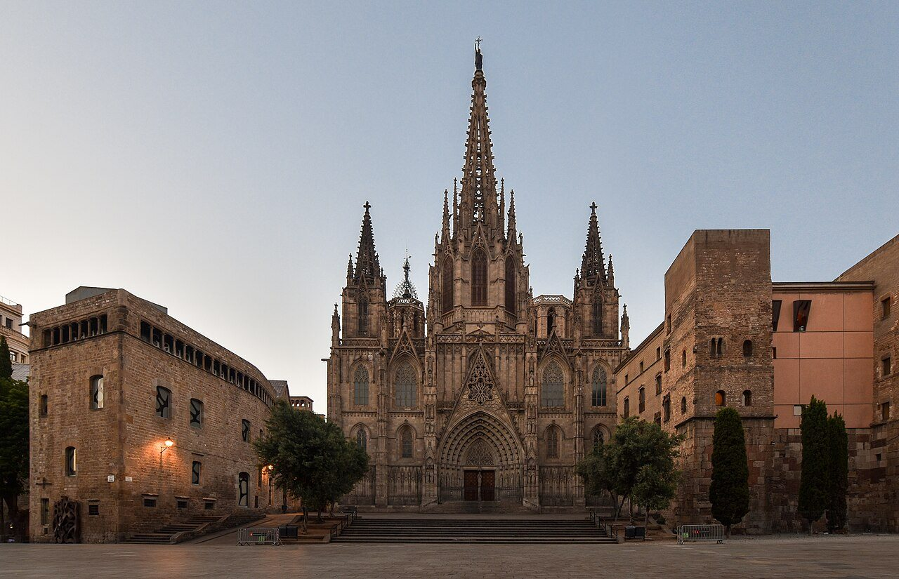
12/26（土） 🌡 平年 最高14℃／最低6℃・雨の日は月に約4日 ｜ 服装: 厚手コートは不要。ジャケット＋マフラーで十分だが、朝晩と海沿いの風は冷えるので脱ぎ着できる重ね着を。
🍽 Cafè de l'Òpera → 🏛 バルセロナ大聖堂とゴシック地区・ボルン → 🍽 Can Culleretes
↓ 🛫 13時間40分 00:45発 上海浦東T2 CA839 → 07:25 バルセロナT1着。入国審査と荷物の受け取り ↓ 🚕 タクシー 約35分 09:15発 バルセロナT1 → Oriente Atiram（オリエンテ・アティラム）。ホテルに荷物を預ける 🗺 経路 ↓ 🚶 徒歩 約5分 10:05発 ホテル → Cafè de l'Òpera（カフェ・デ・ロペラ） 🗺 経路 10:15-11:151時間
Cafè de l'Òpera 予約不要 リセウ劇場の向かい、1929年からのモデルニスモ様式のカフェ
Cafè de l'Òperaで朝食。1929年から続くカフェ（La Rambla 74・ホテルから徒歩約5分） 詳しく › ↓ 🚶 徒歩 約10分 11:15発 ランブラス通り → ゴシック地区の大聖堂 🗺 経路 11:30-13:151時間45分
バルセロナ大聖堂とゴシック地区・ボルン 予約不要 13羽のガチョウと屋上の眺め。中世の迷路を海の教会まで
バルセロナ大聖堂（12/26 土曜日は午後に閉まるので午前に見学。入場券の販売は13:30まで） 詳しく › ↓ 🚶 徒歩 約10分 13:15発 大聖堂 → ホテル 🗺 経路 🏨 14:00 チェックイン・休憩 ↓ 🚶 徒歩 約10分 15:15発 ホテル → 王の広場 🗺 経路 15:30-17:001時間30分
バルセロナ大聖堂とゴシック地区・ボルン 予約不要 王の広場（Plaça del Rei）→ ボルン地区とサンタ・マリア・デル・マル
詳しく › ↓ 🚶 徒歩 約15分 17:00発 サンタ・マリア・デル・マル → ホテル 🗺 経路 🏨 ホテルで休む ↓ 🚶 徒歩 約5分 20:50発 ホテル → Can Culleretes（カン・クリェレテス） 🗺 経路 21:00-22:301時間30分
Can Culleretes 要予約 12/1（火） 1786年創業、バルセロナ最古の食堂。カネロネスの老舗
Can Culleretesでカネロネス（12/26 土曜日・聖ステバンの日の名物料理）。1786年創業、バルセロナ最古の店 詳しく › ↓ 🚶 徒歩 約5分 22:30発 ホテルへ 🗺 経路 雨・休業のとき Can Culleretes が休みなら 7 Portes（年中無休）へ
🏨 Oriente Atiram Hotel Barcelona（オリエンテ・アティラム・ホテル・バルセロナ）
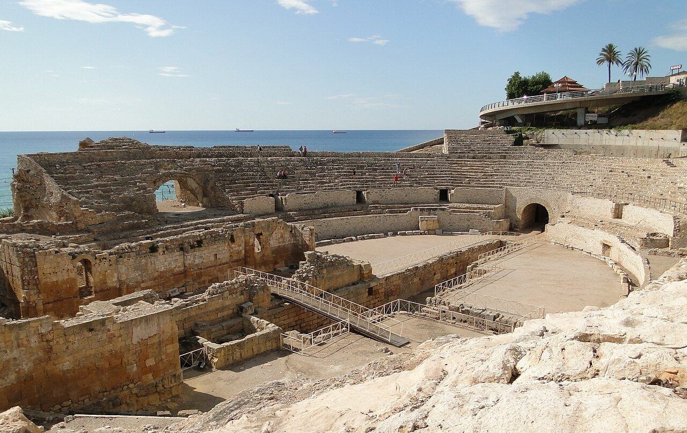
12/27（日） 🌡 平年 最高15℃／最低5℃・雨の日は月に約4日 ｜ 服装: バルセロナとほぼ同じ気候。ジャケット＋マフラーで十分、朝は上着必須。
🏛 タラゴナのローマ遺跡（水道橋・円形闘技場・競技場） → 🍽 El Trull 4 Brasas（カルソッツ） → 🏛 タラゴナ大聖堂と旧市街（Part Alta） → 🍽 Xiringuito Escribà
↓ 🚕 タクシー 約25分 07:50発 ホテル → Barcelona Sants（サンツ駅）。駅で荷物検査があるので早めに 🗺 経路 ↓ 🚆 列車 33分 08:30発 Barcelona Sants Renfe AVE（アベ） → 09:03 Camp de Tarragona（要予約・発売待ち） 🗺 経路 ↓ 🚕 タクシー 約25分 09:10発 Camp de Tarragona → ラス・ファレーラス水道橋。次の移動のためにそのまま待ってもらう 🗺 経路 09:40-10:0525分
タラゴナのローマ遺跡（水道橋・円形闘技場・競技場） 予約不要 海辺の闘技場と戦車レース場。2000年前のローマの州都を歩く
ラス・ファレーラス水道橋（ローマ時代・無料） 詳しく › ↓ 🚕 タクシー 約20分 10:05発 水道橋 → 円形闘技場 🗺 経路 10:30-11:301時間
タラゴナのローマ遺跡（水道橋・円形闘技場・競技場） 予約不要 円形闘技場
詳しく › ↓ 🚶 徒歩 約10分 11:30発 円形闘技場 → 競技場（Circ）。少し上り坂 🗺 経路 11:45-12:3550分
タラゴナのローマ遺跡（水道橋・円形闘技場・競技場） 予約不要 競技場（Circ）とプレトリ
詳しく › ↓ 🚶 徒歩 約5分 12:35発 競技場 → 地中海のバルコニー。鉄の手すりにさわる（幸運を呼ぶという地元の言い伝え） 🗺 経路 ↓ 🚕 タクシー 約20分 12:50発 ランブラ・ノバ → El Trull 4 Brasas（エル・トゥルイ・クアトラ・ブラザス） 🗺 経路 13:15-14:451時間30分
El Trull 4 Brasas（カルソッツ） 予約推奨 焼きネギを手で剥いてロメスコに浸す。冬のタラゴナの味
カルソッツ（炭火で焼いた長ネギのような玉ねぎを、ロメスコソースで食べる料理）。年内は出さない店もあるので、無ければ炭火焼きとロメスコソースを 詳しく › ↓ 🚕 タクシー 約20分 14:45発 El Trull 4 Brasas → 大聖堂。タクシーは店で呼んでもらう 🗺 経路 15:10-17:001時間50分
タラゴナ大聖堂と旧市街（Part Alta） 予約不要 皇帝の神殿の跡に建つ大聖堂。回廊にネズミの行列を探す
タラゴナ大聖堂 → 旧市街（Part Alta）を歩く 詳しく › ↓ 🚶 徒歩 約20分 17:00発 旧市街 → Tarragona（タラゴナ）駅。坂を下る 🗺 経路 ↓ 🚆 列車 1時間11分 17:26発 Tarragona駅 Regional（レヒオナル）（R15）→ 18:37 Sants（サンツ駅） 🗺 経路 ↓ 🚇 地下鉄 約20分 18:45発 L3 Sants Estació（サンツ・エスタシオ） → Liceu（6駅）→ 徒歩でホテル 🗺 経路 🏨 ホテルで休む ↓ 🚕 タクシー 約25分 20:00発 ホテル → Xiringuito Escribà（チリンギート・エスクリバ） 🗺 経路 20:30-22:001時間30分
Xiringuito Escribà 要予約 12/1（火） ボガテイ海岸の目の前、オープンキッチンで炊く米料理の専門店
Xiringuito Escribàで海辺のパエリア。年中無休・12:00–23:00 詳しく › ↓ 🚕 タクシー 約25分 22:00発 Xiringuito Escribà → ホテル。タクシーは店で呼んでもらう 🗺 経路 注意 遺跡（円形闘技場・競技場）は日曜 09:30–14:30、大聖堂は日曜 14:00–18:00 なので、遺跡を先に回る
雨・休業のとき カルソッツが無ければ El Llagut（エル・リャグート） など魚介のロメスコ（cassola de romesco）の店へ。夕食を近場で済ませたいときは Los Caracoles（ロス・カラコレス） と入れ替えてもよい
🏨 Oriente Atiram Hotel Barcelona（オリエンテ・アティラム・ホテル・バルセロナ）
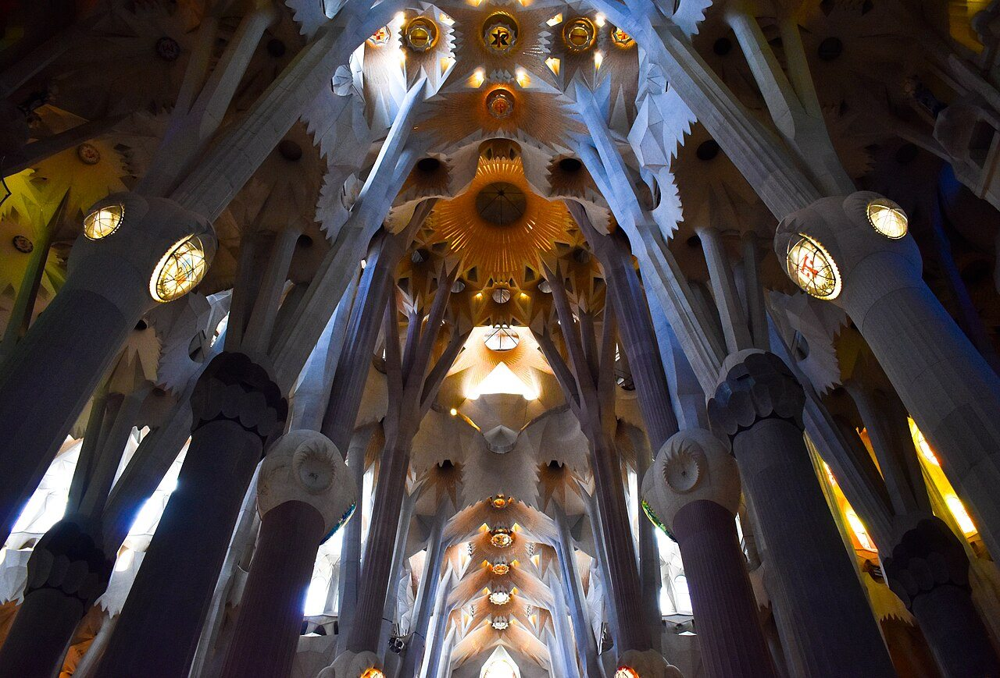
12/28（月） 🌡 平年 最高14℃／最低6℃・雨の日は月に約4日 ｜ 服装: 厚手コートは不要。ジャケット＋マフラーで十分だが、朝晩と海沿いの風は冷えるので脱ぎ着できる重ね着を。
🏛 サグラダ・ファミリア → 🏛 グエル公園 → 🍽 Sartoria Panatieri Gràcia → 🏛 カサ・ミラ（ラ・ペドレラ） → 🏛 カサ・バトリョ → 🍽 Los Caracoles
🏨 07:00 朝食 ↓ 🚇 地下鉄 約25分 08:30発 L3 Liceu（リセウ） → Diagonal（L5に乗り換え）→ Sagrada Família（サグラダ・ファミリア） 🗺 経路 09:00-11:302時間30分
サグラダ・ファミリア 予約済み 没後100年に完成したイエスの塔。静かな朝の森の聖堂へ
09:15 生誕のファサードの塔に上る。入口はマリーナ通り側 詳しく › ↓ 🚕 タクシー 約20分 12:05発 サグラダ・ファミリア → グエル公園。出発までは外から聖堂を眺める 🗺 経路 12:30-13:301時間
グエル公園 要予約 12/1（火） 売れ残った高級住宅地が、トカゲの守る街の庭になった
グエル公園。時間指定券が必須 詳しく › ↓ 🚕 タクシー 約15分 13:40発 グエル公園 → Sartoria Panatieri（グラシア） 🗺 経路 14:00-15:151時間15分
Sartoria Panatieri Gràcia 予約推奨 72時間発酵の生地を薪窯で焼く、グラシアの小さなピッツェリア
Sartoria Panatieriでピッツァ。Carrer de l'Encarnació（エンカルナシオ通り） 51 詳しく › ↓ 🚇 地下鉄 約20分 15:35発 徒歩でJoanic（ジョアニック）駅 → L4 Joanic → Passeig de Gràcia（3駅）→ 徒歩でカサ・ミラ 🗺 経路 16:00-17:001時間
カサ・ミラ（ラ・ペドレラ） 要予約 12/1（火） 「石切場」とからかわれた家。屋上に兜の煙突が並ぶ
カサ・ミラ。時間指定の券 詳しく › ↓ 🚶 徒歩 約10分 17:00発 カサ・ミラ → カサ・バトリョ 🗺 経路 17:15-18:151時間
カサ・バトリョ 要予約 12/1（火） 竜の背の屋根と骨のバルコニー。光を配る青いタイル
カサ・バトリョ。時間指定の券 詳しく › ↓ 🚇 地下鉄 約15分 18:15発 L3 Passeig de Gràcia → Liceu（2駅）→ 徒歩でホテル 🗺 経路 🏨 ホテルで休む ↓ 🚶 徒歩 約5分 20:20発 ホテル → Los Caracoles（ロス・カラコレス） 🗺 経路 20:30-22:001時間30分
Los Caracoles 要予約 12/1（火） 1835年創業。店先で回るローストチキンとカタツムリ煮込み
Los Caracoles。1835年創業。カタツムリの煮込みとパエリア（ホテルから徒歩5分） 詳しく › ↓ 🚶 徒歩 約5分 22:00発 ホテルへ 🗺 経路 雨・休業のとき 雨ならグエル公園は屋外なので短めに。カサ・ミラの屋上は雨だと閉まるので館内を中心に。どちらも時間指定の券なので順番は変えない
🏨 Oriente Atiram Hotel Barcelona（オリエンテ・アティラム・ホテル・バルセロナ）
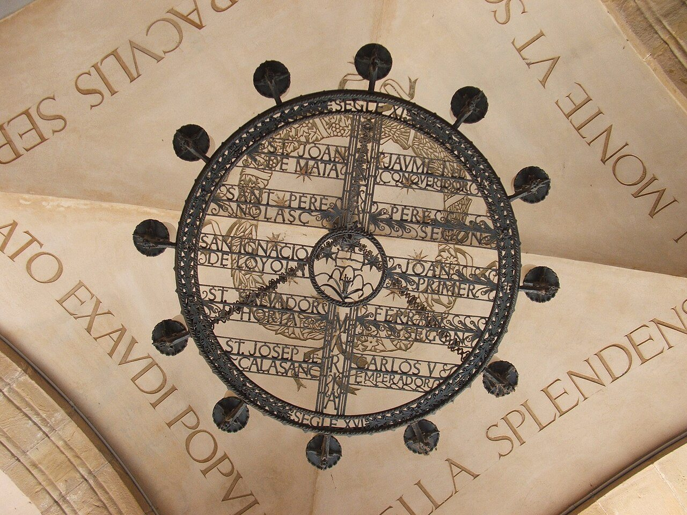
12/29（火） 🌡 平年（山の上の推定） 最高10℃／最低1℃ ｜ 服装: ダウンやしっかりしたコート＋手袋・帽子・滑りにくい靴を。
🏛 モンセラット修道院と黒い聖母 → 🍽 Buffet Montserrat → 🏛 モンセラット修道院と黒い聖母 → 🍽 Granja Viader → 🍽 Tablao Flamenco Cordobés
🏨 07:00 朝食 ↓ 🚇 地下鉄 約15分 08:15発 L3 Liceu（リセウ） → Espanya（4駅）→ 地下通路でFGC（カタルーニャ公営鉄道）乗り場へ ↓ 🚆 列車 1時間 08:36発 Plaça Espanya R5（アール・シンコ） → 09:36 Aeri de Montserrat（アエリ・デ・モンセラット） 🗺 経路 ↓ 🚡 ロープウェイ 約10分 09:45発 ロープウェイ Aeri de Montserrat → 山上（15分おき）。駅から修道院へ歩く 10:00-12:002時間
モンセラット修道院と黒い聖母 要予約 12/1（火） のこぎり山の中腹、千年の修道院で黒い聖母の球にふれる
モンセラット修道院と黒い聖母。聖母像の拝観は08:00–10:30と12:00–18:25。10:30までに列に並ぶ。間に合わなければ12:00の再開後に 詳しく › ↓ 🚶 徒歩 約5分 12:05発 修道院 → ビュッフェ 🗺 経路 12:15-13:201時間5分
Buffet Montserrat（ビュッフェ・モンセラット） 予約不要 山の眺めを見ながら取り放題。修道院前の手早い昼食
山上のビュッフェ（Montserrat Buffet） 詳しく › ↓ 🚶 徒歩 約5分 13:20発 ビュッフェ → 美術館 🗺 経路 13:30-15:001時間30分
モンセラット修道院と黒い聖母 要予約 12/1（火） モンセラット美術館
詳しく › ↓ 🚶 徒歩 約5分 15:20発 美術館 → ロープウェイ乗り場 🗺 経路 ↓ 🚡 ロープウェイ 約5分 15:30発 ロープウェイ 山上 → Aeri de Montserrat ↓ 🚆 列車 1時間 15:45発 Aeri de Montserrat R5 → 16:45 Plaça Espanya（スペイン広場） 🗺 経路 ↓ 🚇 地下鉄 約20分 16:55発 L3 Espanya → Liceu（4駅）→ 徒歩でGranja Viader（グランハ・ビアデル） 🗺 経路 17:20-18:0040分
Granja Viader 予約不要 1870年創業の乳製品の喫茶。チョコ牛乳カカオラットの生まれた店
Granja Viaderでクレマ・カタラナとホットチョコレート。ブケリア市場の裏・Xuclà（シュクラ通り） 4 詳しく › ↓ 🚶 徒歩 約10分 18:00発 Granja Viader → ホテル 🗺 経路 🏨 ホテルで休む ↓ 🚶 徒歩 約5分 19:20発 ホテル → Tablao Cordobés（タブラオ・コルドベス） 🗺 経路 19:30-22:152時間45分
Tablao Flamenco Cordobés（タブラオ・フラメンコ・コルドベス） 要予約 12/1（火） 1970年からのフラメンコ劇場。40品超のビュッフェの後に本番
Tablao Cordobésでフラメンコ。ディナーは19:30から、ショーは21:00から約75分。ディナー付き€82〜（La Rambla 35・ホテルから徒歩約5分） 詳しく › ↓ 🚶 徒歩 約5分 22:15発 ホテルへ 🗺 経路 注意 少年聖歌隊（Escolania）は12月下旬は冬休みのため、歌を聞けない可能性が高い
雨・休業のとき 霧や強風の日は景色が見えないため、行くかどうかは当日の朝に決める。行かない場合は市内のカタルーニャ音楽堂や Sant Pau（サン・パウ） へ
🏨 Oriente Atiram Hotel Barcelona（オリエンテ・アティラム・ホテル・バルセロナ）
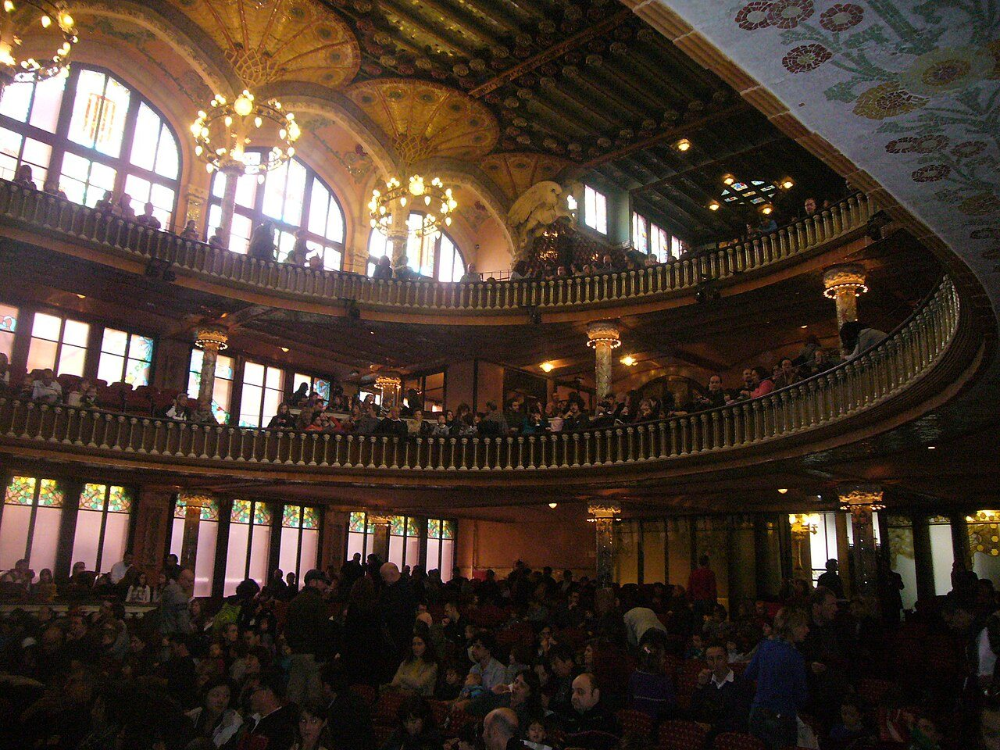
12/30（水） 🌡 平年 最高10℃／最低4℃・雨の日は月に約7日 ｜ 服装: しっかりしたコート必須。朝晩は5℃を下回る日もあるので手袋・マフラーも。
🏛 ブケリア市場 → 🏛 カタルーニャ音楽堂 → 🏛 ソフィア王妃芸術センター → 🍽 Casa Lucio
🏨 07:30 朝食 → 08:30 チェックアウト・荷物を預ける ↓ 🚶 徒歩 約10分 08:45発 ホテル → ブケリア市場 🗺 経路 09:00-09:4040分
ブケリア市場 予約不要 修道院の焼け跡に生まれた市場。鉄の屋根の下で朝の買い物
ブケリア市場 詳しく › ↓ 🚶 徒歩 約15分 09:40発 ブケリア市場 → カタルーニャ音楽堂 🗺 経路 10:00-10:5050分
カタルーニャ音楽堂 要予約 12/1（火） 天井から太陽が降る、世界遺産になった唯一のコンサートホール
カタルーニャ音楽堂。世界遺産のガイドツアー 詳しく › ↓ 🚶 徒歩 約15分 10:55発 音楽堂 → ホテル 🗺 経路 🏨 11:15 ホテルで荷物を受け取る ↓ 🚕 タクシー 約25分 11:45発 ホテル → Barcelona Sants（サンツ駅）。駅で昼食を買う 🗺 経路 ↓ 🚆 列車 3時間19分 13:19発 Barcelona Sants iryo（イリョ） → 16:38 Madrid Atocha（要予約・発売中）。ほかに12:00・12:13・12:35発もある 🗺 経路 ↓ 🚕 タクシー 約20分 16:45発 Atocha（アトーチャ駅） → Room Mate Mario（チェックイン15:00から） 🗺 経路 🏨 17:05 チェックイン・休憩 ↓ 🚕 タクシー 約15分 18:10発 ホテル → ソフィア王妃芸術センター 🗺 経路 18:30-20:302時間
ソフィア王妃芸術センター 予約不要 元は病院だった美術館で、ピカソ「ゲルニカ」と向き合う
ソフィア王妃芸術センター。ピカソの「ゲルニカ」。19:00からは無料 詳しく › ↓ 🚕 タクシー 約15分 20:40発 ソフィア王妃芸術センター → Casa Lucio（カサ・ルシオ） 🗺 経路 21:00-22:301時間30分
Casa Lucio 要予約 12/1（火） カバ・バハ通りの老舗。崩して食べる卵とポテトの名店
Casa Lucioでウエボス・ロトス。Cava Baja（カバ・バハ通り） 35 詳しく › ↓ 🚶 徒歩 約15分 22:30発 Casa Lucio → ホテル 🗺 経路 雨・休業のとき ブケリア市場は屋根つき、音楽堂とソフィア王妃は屋内なので、雨でも予定どおり
🏨 Room Mate Mario（マドリード）
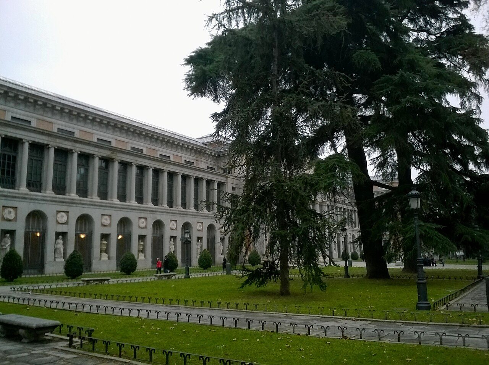
12/31（木） 🌡 平年 最高10℃／最低4℃・雨の日は月に約7日 ｜ 服装: しっかりしたコート必須。朝晩は5℃を下回る日もあるので手袋・マフラーも。
🏛 プラド美術館 → 🏛 マドリード王宮 → 🍽 Bodega de los Secretos → 🍽 Lhardy → 🏛 プエルタ・デル・ソル（年越しカウントダウン）
🏨 08:00 朝食 ↓ 🚕 タクシー 約15分 09:40発 ホテル → プラド美術館 🗺 経路 10:00-11:401時間40分
プラド美術館 要予約 12/1（火） ベラスケス、ゴヤ、ボス。スペイン王家が集めた名画の殿堂
プラド美術館。代表作に絞って見る（12/31 木曜日は14:00まで） 詳しく › ↓ 🚕 タクシー 約20分 11:50発 プラド → 王宮 🗺 経路 12:15-13:451時間30分
マドリード王宮 要予約 12/1（火） クリスマスイブの火事の跡に建った、西欧最大級の王宮
マドリード王宮 詳しく › ↓ 🚕 タクシー 約15分 13:55発 王宮 → Bodega de los Secretos（ボデガ・デ・ロス・セクレトス） 🗺 経路 14:15-15:301時間15分
Bodega de los Secretos 要予約 12/1（火） 17世紀の地下酒蔵の個室風アーチ席で食べる昼ごはん
Bodega de los Secretos。Calle San Blas（サン・ブラス通り） 4・地下の酒蔵を使った店 詳しく › ↓ 🚕 タクシー 約20分 15:30発 Bodega de los Secretos → ホテル。近くで年越し用のぶどう12粒と水を買う 🗺 経路 🏨 16:00–19:15 ホテルで休み、防寒の支度。希望すれば大晦日のマラソン San Silvestre（サン・シルベストレ） を見物 ↓ 🚶 徒歩 約15分 19:30発 ホテル → Lhardy（ラルディ）。大晦日はソル周辺が混むので早めに 🗺 経路 20:00-21:451時間45分
Lhardy 要予約 11/15（日） 1839年創業の老舗で大晦日の特別ディナー
Lhardyで年越しディナー。1839年創業 詳しく › ↓ 🚶 徒歩 約5分 21:50発 Lhardy → プエルタ・デル・ソル 🗺 経路 22:00-00:002時間
プエルタ・デル・ソル（年越しカウントダウン） 予約不要 時計の鐘に合わせて12粒。スペイン中が見守る年越し
プエルタ・デル・ソルでカウントダウン。22:00までに入場 詳しく › ↓ 🚶 徒歩 約10分 00:15発 プエルタ・デル・ソル → ホテル。人が少し引いてから 🗺 経路 注意 12/31（木） の王宮は短縮営業。13:45 に出る
雨・休業のとき プエルタ・デル・ソルは入場規制があり、満員になると入れない。入れなければホテルのテレビで一緒に年越し
🏨 Room Mate Mario（マドリード）
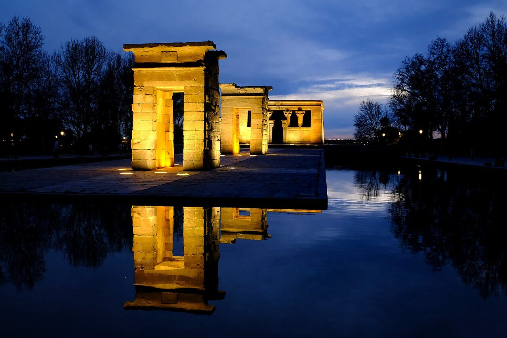
1/1（金） 🌡 平年 最高10℃／最低3℃・雨の日は月に約6日 ｜ 服装: しっかりしたコート必須。朝晩は5℃を下回る日もあるので手袋・マフラーも。
🍽 Chocolatería San Ginés → 🏛 マヨール広場 → 🍽 Cervecería La Campana → 🏛 レティーロ公園とアルカラ門・シベーレス・グラン・ビア → 🏛 デボド神殿（夕日） → 🍽 Restaurante Botín
🏨 09:30 朝食 ↓ 🚶 徒歩 約10分 11:15発 ホテル → ソル近くの San Ginés（サン・ヒネス） 🗺 経路 11:30-12:1040分
Chocolatería San Ginés（チョコラテリア・サン・ヒネス） 予約不要 1894年創業。元日も開く濃厚チョコとチュロスの店
Chocolatería San Ginésでチョコラテ・コン・チュロス 詳しく › ↓ 🚶 徒歩 約5分 12:10発 San Ginés → マヨール広場 🗺 経路 12:20-12:5030分
マヨール広場 予約不要 何度も火事を越えて建て直された、赤い回廊の大広場
マヨール広場 詳しく › ↓ 🚶 徒歩 約5分 12:50発 マヨール広場 → La Campana（ラ・カンパーナ） 🗺 経路 13:00-14:001時間
Cervecería La Campana 予約不要 マヨール広場の裏で立って食べるイカフライのパン
La Campanaでイカのボカディージョ。マヨール広場のそば 詳しく › ↓ 🚇 地下鉄 約15分 14:10発 徒歩でSol（ソル）駅 → L2 Sol → Retiro（3駅）→ 公園へ 🗺 経路 14:30-15:451時間15分
レティーロ公園とアルカラ門・シベーレス・グラン・ビア 予約不要 王の離宮の庭が市民の公園に。池と並木と凱旋門
レティーロ公園。水晶宮は修復中（2027年まで）で外から 詳しく › ↓ 🚶 徒歩 約80分 15:50発 アルカラ門 → シベーレス広場 → グラン・ビア → デボド神殿。寄り道を含む。疲れたら Callao（カジャオ） から L3 で Plaza de España（スペイン広場） へ 🗺 経路 17:20-18:1050分
デボド神殿（夕日） 予約不要 エジプトから石を運んで建て直した神殿で、元日の夕日を
デボド神殿の夕日。日の入り17:57 詳しく › ↓ 🚶 徒歩 約20分 18:10発 デボド神殿 → ホテル 🗺 経路 🏨 ホテルで休む ↓ 🚶 徒歩 約10分 19:45発 ホテル → Botín（ボティン） 🗺 経路 20:00-21:301時間30分
Restaurante Botín 要予約 12/1（火） 1725年創業の世界最古の店。薪窯の子豚の丸焼き
Botínで子豚の丸焼き。1725年創業・世界最古のレストラン 詳しく › ↓ 🚶 徒歩 約10分 21:30発 Botín → ホテル 🗺 経路 雨・休業のとき La Campana が休みなら、マヨール広場周辺の開いている店でボカディージョを
体調が悪いとき ホテル近くの Café de Oriente（カフェ・デ・オリエンテ） で軽い食事を
🏨 Room Mate Mario（マドリード）
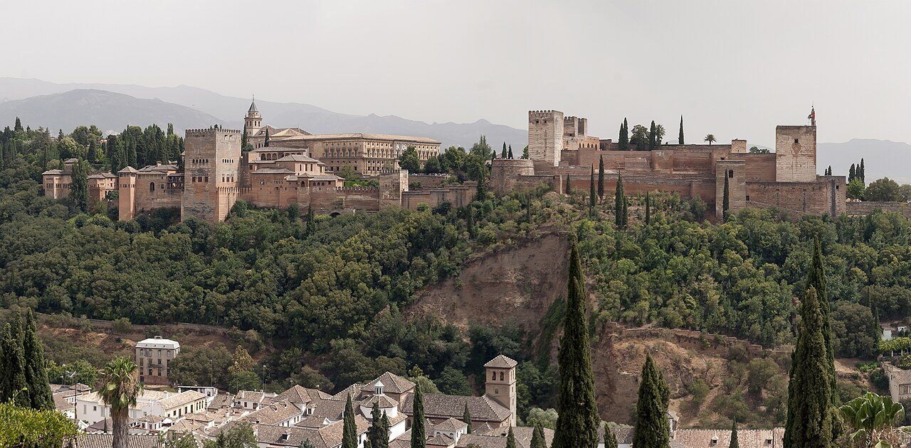
1/2（土） 🌡 平年 最高13℃／最低0℃・雨の日は月に約6日 ｜ 服装: 盆地特有の底冷えで朝は氷点下近くまで下がる。厚手コート＋マフラー＋手袋を。
🏛 アルバイシン地区とサン・ニコラス展望台 → 🍽 Taberna Casa Enrique → 🏛 アルハンブラ宮殿 → 🍽 Mercado de San Miguel
🏨 06:30 朝食（前夜に買っておく） ↓ 🚕 タクシー 約20分 06:45発 ホテル → Madrid Atocha（アトーチャ駅）。駅で荷物検査があるので早めに 🗺 経路 ↓ 🚆 列車 3時間34分 07:20発 Madrid Atocha 直通AVE（アベ） → 10:54 Granada（要予約・発売待ち） 🗺 経路 ↓ 🚕 タクシー 約15分 11:05発 Granada駅 → Plaza Nueva（ヌエバ広場） 🗺 経路 11:30-12:351時間5分
アルバイシン地区とサン・ニコラス展望台 予約不要 白い迷路の丘から、正面にアルハンブラと雪の山を望む
アルバイシン地区とサン・ニコラス展望台 詳しく › ↓ 🚶 徒歩 約20分 12:35発 サン・ニコラス展望台 → 坂を下って Casa Enrique（カサ・エンリケ） 🗺 経路 13:00-13:3535分
Taberna Casa Enrique 予約不要 1870年創業、グラナダ最古級の小さな酒場
Casa Enrique。1870年創業のタパスの店。土曜も営業（Acera del Darro 8） 詳しく › ↓ 🚕 タクシー 約20分 13:35発 Casa Enrique → アルハンブラ宮殿の入口 🗺 経路 14:00-17:003時間
アルハンブラ宮殿 要予約 すぐ イスラム最後の王朝の宮殿。天井の鍾乳石飾りと獅子の中庭
アルハンブラ宮殿。ナスル朝宮殿は14:30以降の枠。王の住まいだった宮殿は、券の時刻を厳守。ほかにヘネラリフェ（夏の離宮）とアルカサバ（城塞） 詳しく › ↓ 🚕 タクシー 約25分 17:15発 アルハンブラ宮殿 → Granada駅 🗺 経路 ↓ 🚆 列車 3時間48分 18:05発 Granada → 21:53 Madrid Atocha 🗺 経路 ↓ 🚕 タクシー 約15分 22:05発 Atocha（アトーチャ駅） → Mercado de San Miguel（サン・ミゲル市場） 🗺 経路 22:25-23:451時間20分
Mercado de San Miguel 予約不要 鉄とガラスの市場で、少しずつつまむ遅い夕食
Mercado de San Miguelで遅めの夕食。タパスを軽く（ホテルから徒歩10分） 詳しく › ↓ 🚶 徒歩 約10分 23:45発 Mercado de San Miguel → ホテル 🗺 経路 列車の時刻と直通・乗換 参考：土曜ダイヤの時刻。年始は変わる可能性があるため、購入時に1/2（土）の時刻を確認。 行き5本：07:20→10:54 直通／13:35→16:58 直通／16:40→20:21 直通／18:35→23:13 乗換1回／19:50→23:18 直通。 帰り5本：06:50→10:26 直通／07:55→12:23 乗換1回／11:04→14:38 直通／15:00→18:39 直通／18:05→21:53 直通。 直通でアルハンブラに間に合う行きは 07:20 発だけ（コルドバで乗り換える案もある）。13:35 発は 16:58 着で、冬は 18:00 閉館のため間に合わない。帰りは 18:05 発が第一候補。滞在を短くするなら 15:00 発。 アルハンブラの券は公式（tickets.alhambra-patronato.es）で。冬は 08:30–18:00、12/25（金）・1/1（金） 休館。
直通が取れなかったとき：トレド一日 Atocha から Avant（アバント） で約33分。旧市街・サント・トメ教会・エル・グレコ美術館・大聖堂を回る。土曜は大聖堂を朝から見られる
🏨 Room Mate Mario（マドリード）
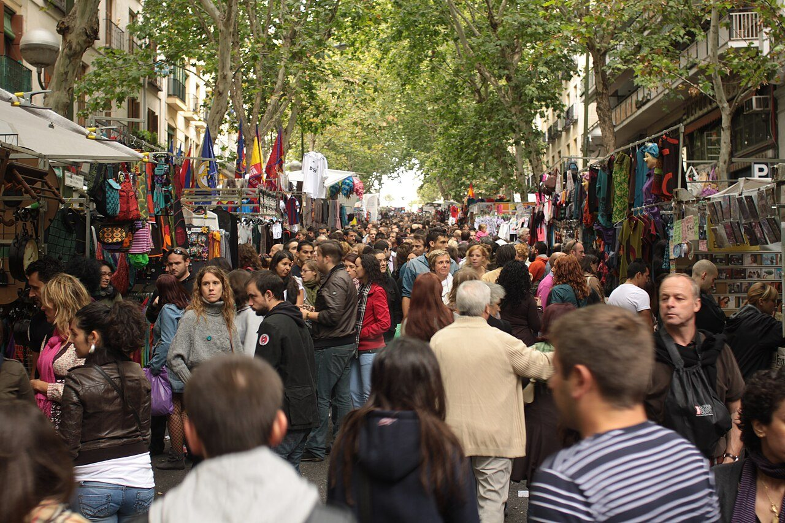
1/3（日） 🌡 平年 最高14℃／最低5℃・雨の日は月に約4日 ｜ 服装: 厚手コートは不要。ジャケット＋マフラーで十分だが、朝晩と海沿いの風は冷えるので脱ぎ着できる重ね着を。
🏛 エル・ラストロ（日曜の蚤の市） → 🍽 Taberna La Bola
🏨 08:30 朝食 → 09:00 チェックアウト・荷物を預ける ↓ 🚶 徒歩 約20分 09:35発 ホテル → ラストロ（カスコロ広場） 🗺 経路 10:00-13:003時間
エル・ラストロ（日曜の蚤の市） 予約不要 日曜だけの巨大な蚤の市。坂道いっぱいの古道具と雑貨
エル・ラストロ。日曜の蚤の市（09:00–15:00） 詳しく › ↓ 🚇 地下鉄 約15分 13:10発 徒歩でLa Latina（ラ・ラティーナ）駅 → L5 La Latina → Ópera（1駅）→ 徒歩でLa Bola（ラ・ボラ） 🗺 経路 13:30-15:151時間45分
Taberna La Bola 要予約 12/1（火） 1870年創業。炭火の土鍋で煮込むコシードの名店
La Bolaのコシード・マドリレーニョ。日曜は13:30と15:30の2部制 詳しく › ↓ 🚶 徒歩 約10分 15:15発 La Bola → ホテル 🗺 経路 🏨 15:30 ホテルで荷物を受け取る ↓ 🚕 タクシー 約20分 17:20発 ホテル → Atocha（アトーチャ駅）。駅で荷物検査があるので早めに 🗺 経路 ↓ 🚆 列車 3時間2分 17:57発 Madrid Atocha AVE（アベ） → 20:59 Barcelona Sants（要予約・発売待ち）。駅で軽食を買う 🗺 経路 ↓ 🚕 タクシー 約35分 21:10発 Sants（サンツ駅） → B&B HOTEL Barcelona Viladecans（ビーアンドビー・ホテル・バルセロナ・ビラデカンス） 🗺 経路 🏨 B&B HOTEL Barcelona Viladecans
1/4（月） 🌡 平年 最高14℃／最低5℃・雨の日は月に約4日 ｜ 服装: 厚手コートは不要。ジャケット＋マフラーで十分だが、朝晩と海沿いの風は冷えるので脱ぎ着できる重ね着を。
📍 B&B HOTEL Barcelona Viladecans → ✈ バルセロナ空港T1 チェックイン → ✈ バルセロナ空港T1 ラウンジ
06:00-07:001時間
B&B HOTEL Barcelona Viladecans（ビーアンドビー・ホテル・バルセロナ・ビラデカンス） 朝食（06:00から）→ チェックアウト。タクシーは前の晩にフロントで頼んでおく
↓ 🚕 タクシー 約25分 07:00発 ホテル → バルセロナ空港T1 🗺 経路 07:30-08:1545分
バルセロナ空港T1 チェックイン 中国国際航空のカウンター（番号は当日の案内表示で）。締切は10:05
↓ 🚶 徒歩 約20分 08:15発 出国審査・保安検査を通って、シェンゲン圏外の出発エリアへ（シェンゲン圏＝国境審査なしで行き来できるヨーロッパの国々） 08:40-10:301時間50分
バルセロナ空港T1 ラウンジ シェンゲン圏外エリア2階の Sala VIP Joan Miró（シャワーあり）。使うラウンジはチェックインの時に案内がある
↓ 🛫 12時間20分 11:05発 CA840 → 06:25 上海浦東T2着（1/5 火曜日）。10:40発に変わっている可能性もあるので、出発前に航空会社の予約確認で確かめる 1/5（火） 🌡 平年 最高10℃／最低1℃・雨の日は月に約4日 ｜ 服装: 乾燥した寒さ。コート＋マフラーで足りるが、空気の乾燥対策（保湿・マスク）も。 平年値は東京を参考にしています。
✈ 上海浦東空港T2 乗継 → ✈ 成田空港T1 到着 → 🏠 自宅（勝どき）
06:25-13:457時間20分
上海浦東空港T2 乗継 中国には入国せず、乗り継ぎ用の保安検査へ。中国国際航空ラウンジ（出発4階・71番ゲート付近・仮眠室とシャワー）でゆっくり休む
↓ 🚶 徒歩 約10分 13:45発 搭乗口へ（出発の10分前に閉まる） ↓ 🛫 2時間45分 14:25発 CA919 → 18:10 成田空港T1着（日本時間） 18:10-19:101時間
↓ 🚕 タクシー 約1時間30分 19:10発 成田空港T1 → 勝どき（15番乗り場の定額タクシー・予約なしで乗れる。湾岸線経由 31,000円・京葉道路経由 29,000円＋高速代） 🗺 経路 20:40-21:0020分
電車で帰るなら 成田空港 19:49発の成田エクスプレス50号 → 20:51 東京駅（1人 約3,140円）。東京駅からタクシーで勝どきへ
平年値の出典 Standard climate Values: Barcelona Aeropuerto（AEMET, 1981-2010）— https://www.aemet.es/en/serviciosclimaticos/datosclimatologicos/valoresclimatologicos?l=0076 （確認日 9/25 金曜日） Valores climatológicos normales: Barcelona, Fabra（AEMET, 1981-2010, 海抜408m）— https://www.aemet.es/en/serviciosclimaticos/datosclimatologicos/valoresclimatologicos?l=0200E&k=cat （確認日 9/25 金曜日） Standard climate Values: Reus Aeropuerto（AEMET, 1981-2010, タラゴナ最寄り, 海抜71m）— https://www.aemet.es/en/serviciosclimaticos/datosclimatologicos/valoresclimatologicos?l=0016A （確認日 9/25 金曜日） Standard climate Values: Madrid, Retiro（AEMET, 1981-2010, 海抜667m）— https://www.aemet.es/en/serviciosclimaticos/datosclimatologicos/valoresclimatologicos?k=mad&l=3195 （確認日 9/25 金曜日） Standard climate Values: Granada Aeropuerto（AEMET, 1981-2010, 海抜560m）— https://www.aemet.es/en/serviciosclimaticos/datosclimatologicos/valoresclimatologicos?l=5530E&k=and （確認日 9/25 金曜日） Standard climate Values: Toledo（AEMET, 表記1982-2010, 海抜513m）— https://www.aemet.es/en/serviciosclimaticos/datosclimatologicos/valoresclimatologicos?l=3260B&k=clm （確認日 9/25 金曜日） El clima de Montserrat — https://meteomuntanya.cat/clima-dels-massissos/el-clima-de-montserrat/ （確認日 9/25 金曜日）。山上の気候の説明。気温はバルセロナ空港との標高差をもとにした推定。 予報：Open-Meteo
食事 バルセロナ 名物 ボンバ 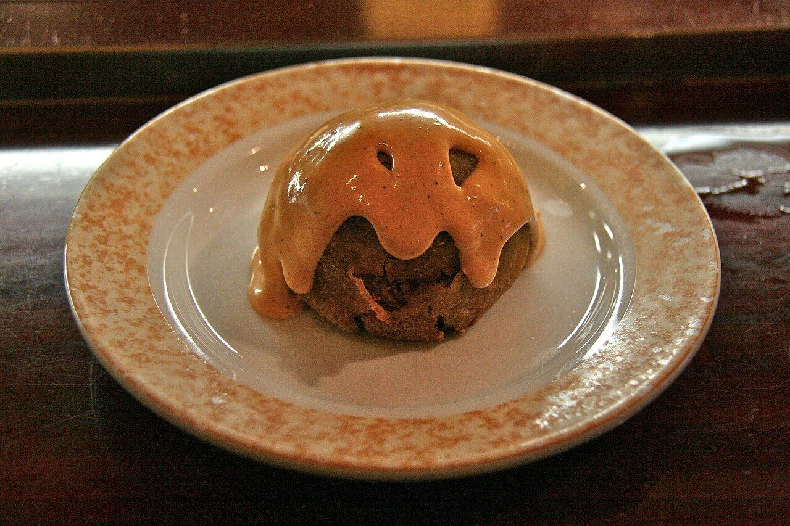
肉入りのじゃがいも揚げ団子にアリオリと辛いソース
食べられる店：La Cova Fumada（ラ・コバ・フマダ）
詳しく 通年
"Una bomba, si us plau"（ウナ・ボンバ、シウスプラウ）
マッシュポテトでひき肉を包み、パン粉をつけて揚げた大きな団子。上に白いにんにくのアリオリと赤い辛いソースをかけます。海辺の地区バルセロネタの食堂 La Cova Fumada で先代の祖母が考えたとされるタパス（公式）。辛さはソースの量次第なので、苦手なら「poc picant（ポク・ピカン＝辛さ控えめ）」と一言。
カルソッツ 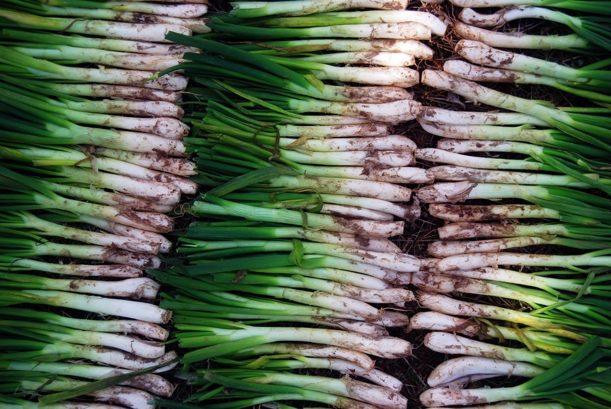
炭火で黒く焼いた長ネギを剥き、ロメスコに浸して食べる
食べられる店：El Trull 4 Brasas（カルソッツ）
詳しく 11〜4月（産地認証「Calçot de Valls」の出荷時期）。店での提供は1月からが多い
"Una calçotada, si us plau"（ウナ・カルソターダ、シウスプラウ）
タラゴナ近くの町バイス（Valls）発祥の、細長い玉ねぎの若芽。炭火で外が真っ黒になるまで焼きます。外皮を手で引き抜き、赤ピーマン・ナッツ・にんにくのソース（ロメスコ）をつけて、上を向いて口へ運びます。服が汚れないよう、店で紙のエプロンが出ることが多いです。焼いたソーセージや羊肉とワインまで続く定食を「カルソターダ」と呼びます。
カネロネス クリスマスの残り肉を包んだカタルーニャ風カネロニ
食べられる店：Can Culleretes（カン・クリェレテス） ／ Los Caracoles（ロス・カラコレス） ／ Els 4 Gats（クアトロ・ガッツ）
詳しく 12/26（土） の聖ステバンの日の伝統料理
"Canelons, si us plau"（カネロンス、シウスプラウ）
筒状のパスタにひき肉の詰め物を巻き、ベシャメルソースとチーズをかけてオーブンで焼いたもの。イタリアのカネロニがもとで、カタルーニャでは家庭の定番です。12/25（金） のスープ（エスクデリャ）で煮た肉の残りを翌日に詰めるのが昔からの習わしで、12/26（土） の食卓に欠かせません。柔らかく、年配の方にも食べやすい一品。
クレマ・カタラナ 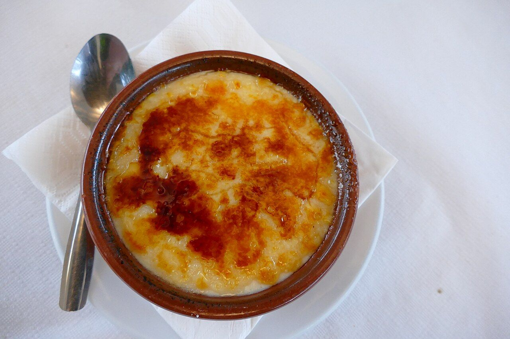
表面の砂糖を焼いてパリッと割る、レモンとシナモン香るカスタード
食べられる店：Granja Viader（グランハ・ビアデル） ／ Tablao Flamenco Cordobés（タブラオ・フラメンコ・コルドベス）
詳しく 通年（3/19 の聖ジュゼップの日に食べる習わしも）
"Una crema catalana, si us plau"（ウナ・クレマ・カタラナ、シウスプラウ）
卵黄と牛乳のカスタードに、レモンの皮とシナモンで香りをつけた冷たいデザート。食べる直前に表面の砂糖を焼きごてで焦がし、スプーンでパリッと割って食べます。フランスのクレーム・ブリュレに似ていますが、生クリームではなく牛乳で作るので軽め。食事の締めにも、喫茶で単品にも。
エスクデリャ 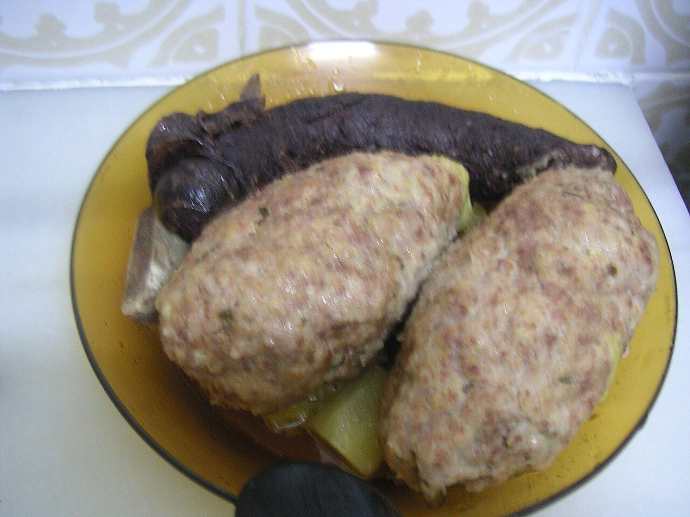
大きなパスタ入りの肉と野菜のスープ。クリスマスの味
食べられる店：Can Culleretes（カン・クリェレテス）
詳しく 12/25（金） のクリスマスの昼に食べる冬の煮込み
"Escudella, si us plau"（アスクダリャ、シウスプラウ）
肉・骨・豆・野菜を長く煮たカタルーニャの冬の鍋。まずスープに大きな貝殻形のパスタ（galets）を入れて食べ、次に煮た肉と野菜（carn d'olla）を別の皿で食べます。12/25（金） の家庭料理で、残った肉が翌日のカネロネスになります。温かくやさしい味なので、体調がすぐれない日の食事にも向きます。冬の家庭料理のため、店のメニューに出るかは日によります。
パ・アム・トマケット 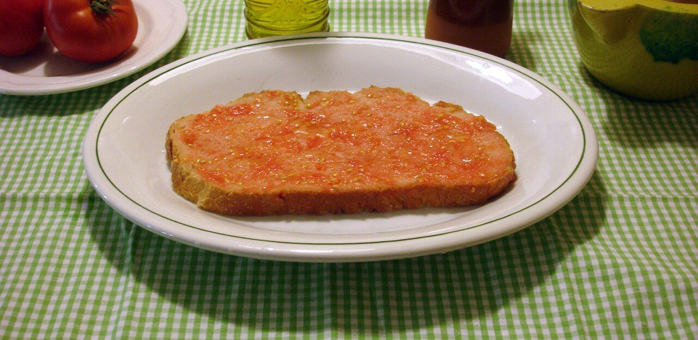
パンにトマトをこすりつけ塩とオリーブ油。毎食の脇役
食べられる店：Los Caracoles（ロス・カラコレス）
詳しく 通年
"Pa amb tomàquet, si us plau"（パ・アム・トゥマケット、シウスプラウ）
カタルーニャの食卓の基本。トーストしたパンに完熟トマトの切り口をこすりつけ、オリーブオイルと塩をかけるだけ。生ハムやチーズをのせたり、前菜の付け合わせにしたりします。スペイン語のメニューでは「Pan con tomate」。食欲がない日でも口にしやすく、軽く済ませたいときの一品にもなります。
パエリアとアロス・ネグラ 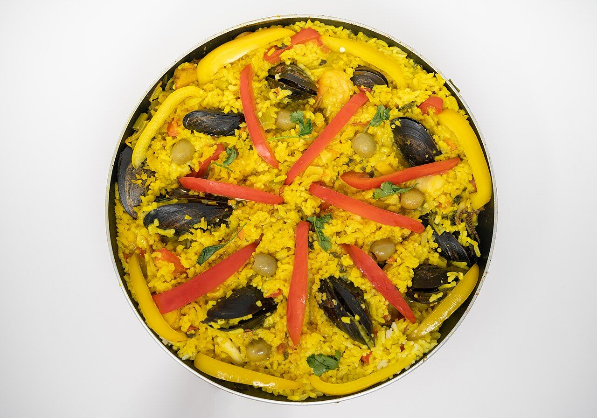
平鍋で炊く米料理。イカ墨で黒く炊いたアロス・ネグラも名物
食べられる店：Xiringuito Escribà（チリンギート・エスクリバ） ／ Los Caracoles（ロス・カラコレス） ／ Tablao Flamenco Cordobés（タブラオ・フラメンコ・コルドベス） ／ 7 Portes（セッテ・ポルテス） ／ Els 4 Gats（クアトロ・ガッツ） ／ El Llagut（エル・リャグート）
詳しく 通年
"Paella de marisc per a tres, si us plau"（パエリャ・ダ・マリスク・ペラ・トレス、シウスプラウ）
平たい鍋で米を魚介や肉のスープで炊く料理。発祥は隣のバレンシアですが、海のあるバルセロナでは魚介のパエリアが定番です。イカ墨で真っ黒に炊いた「アロス・ネグラ（arròs negre）」はカタルーニャの名物で、にんにくのアリオリを添えて食べます（歯が黒くなるので写真は食べる前に）。汁気の多い「アロス・カルドス」は胃にやさしめです。
ショコラータ・デスフェタ 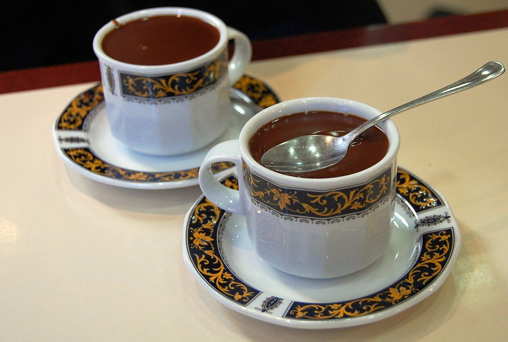
スプーンが立つほど濃いホットチョコ。チュロスやメリンドロを浸す
食べられる店：Cafè de l'Òpera（カフェ・デ・ロペラ） ／ Granja Viader（グランハ・ビアデル） ／ Granja Dulcinea（グランハ・ドゥルシネア） ／ Tablao Flamenco Cordobés（タブラオ・フラメンコ・コルドベス）
詳しく 冬（寒い朝や夕方のおやつに）
"Una xocolata amb xurros, si us plau"（ウナ・ショコラータ・アム・シュロス、シウスプラウ）
カタルーニャ風の濃いホットチョコレート。飲むというより、揚げ菓子のチュロス（xurros）や、細長いやわらかいビスケットのメリンドロ（melindros）を浸して食べます。生クリームをのせたものは「スイス（suís）」。甘くて温かいので、食事の代わりに少しだけ口にしたい日や、寒い観光の後の休憩に。
日程の店 Cafè de l'Òpera（カフェ・デ・ロペラ） 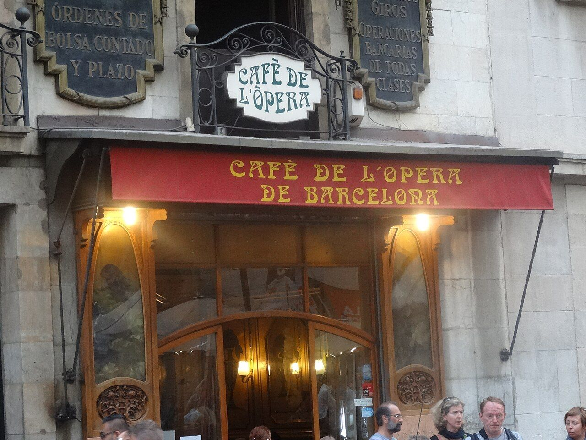
12/26（土） 朝
リセウ劇場の向かい、1929年からのモデルニスモ様式のカフェ
ホテルから徒歩約5分（ランブラス通り沿い・リセウ劇場の向かい）
予約不要 地図
詳しく 注文前にメニューで料金を確かめてください
予約なしで入りやすい（カフェ・毎日営業）
12/26（土） · 通常は月〜日08:30-02:30。祝日のため、行く前に電話で営業を確かめてください 出典 （9/25 金曜日確認）
通常 · 月〜日 08:30-02:30 出典 （9/25 金曜日確認）
公式
Cafè de l'Òperaで朝食。1929年から続くカフェ（La Rambla 74・ホテルから徒歩約5分）
ひとこと 夜行便明けの最初の一杯に。名物は濃いホットチョコレート（xocolata）とチュロス。コーヒーとクロワッサンで軽く済ませてもかまいません。店内は1929年の改装時の鏡と木の内装が残り、座るだけで「バルセロナに着いた」と感じられます。 ランブラス通り沿いで人通りが多いので、バッグは膝の上か体の前に。ホテルの部屋に入れるのは14:00からなので、ここでゆっくり休むのも手です。
Can Culleretes（カン・クリェレテス） 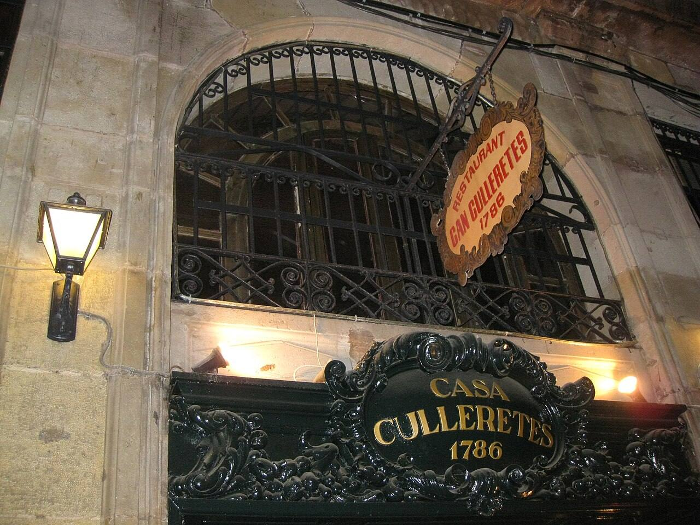
12/26（土） 夜
1786年創業、バルセロナ最古の食堂。カネロネスの老舗
ホテルから徒歩5分（ゴシック地区の細い路地）
要予約 12/1（火） 地図
詳しく 注文前にメニューで料金を確かめてください
入りにくい（予約必須とされる）
12/26（土） · 祝日 Sant Esteve（サン・エステベ）。予約時に夜の営業と開始時刻を確かめてください 出典 （9/25 金曜日確認）
通常 · 火〜土 13:30-16:00, 21:00-23:00／日は昼のみ／月休（祝前日の月曜は営業とする記載あり） 出典 （9/25 金曜日確認）
公式
Can Culleretesでカネロネス（12/26 土曜日・聖ステバンの日の名物料理）。1786年創業、バルセロナ最古の店
ひとこと 頼むのはカネロネス（canelons）。12/26（土） の聖ステバンの日にカタルーニャの家庭で食べる料理で、この日にこの店で食べるのが旅の狙いです。店内は古い絵やタイルで飾られた昔ながらの食堂。 夕食は21:00から。12/1（火）の予約時に、祝日の夜も営業するか確かめてください。Can Culleretes が休みなら 7 Portes（年中無休）へ。
Xiringuito Escribà（チリンギート・エスクリバ） 料理のイメージ 12/27（日） 夜
ボガテイ海岸の目の前、オープンキッチンで炊く米料理の専門店
ホテルからタクシー約25分（ボガテイ海岸沿い）
要予約 12/1（火） 地図
詳しく 注文前にメニューで料金を確かめてください
入りにくい（人気店・待ち時間が長いとされる）
12/27（日） · 12:00-23:00（公式「一年中毎日、通し営業」） 出典 （9/25 金曜日確認）
通常 · 毎日 12:00-23:00（一年中） 出典 （9/25 金曜日確認）
公式
Xiringuito Escribàで海辺のパエリア。年中無休・12:00–23:00
ひとこと タラゴナから戻った夜の、海辺のパエリア。米料理の専門店で、パエリアなどの米料理が主役です（種類は当日のメニューで）。タパスや魚料理、デザートもあり、メニューは日本語はありませんが、英語はあります。 パエリアの注文単位（何人前から）は予約時か注文時に確認を。夜の海沿いは風が冷たいので上着を。
Sartoria Panatieri Gràcia 12/28（月） 昼
72時間発酵の生地を薪窯で焼く、グラシアの小さなピッツェリア
グエル公園から徒歩またはタクシー／グラシア地区
予約推奨 地図
詳しく 予約推奨（公式に予約ページあり。小さな店）
注文前にメニューで料金を確かめてください
入りにくいことがある（席数が少ない）
12/28（月） · 13:00-15:30, 19:30-23:00（月〜日の通常営業。年末の営業時間は予約時に確かめてください） 出典 （9/25 金曜日確認）
通常 · 月〜日 13:00-15:30, 19:30-23:00 出典 （9/25 金曜日確認）
公式
Sartoria Panatieri（サルトリア・パナティエリ）でピッツァ。Carrer de l'Encarnació（エンカルナシオ通り） 51
ひとこと ガウディ尽くしの日の昼は、あえてピッツァで一息。有機の石臼挽き粉で72時間発酵させた生地を薪窯で焼き、自家製の生ハム類や小さな農家の野菜も使います。季節のピッツァもあり。 席は多くないので、予約しておくと安心です。昼の最終入店は15:30前なので、グエル公園が押したら電話（+34 931 37 63 85）を。
Los Caracoles（ロス・カラコレス） 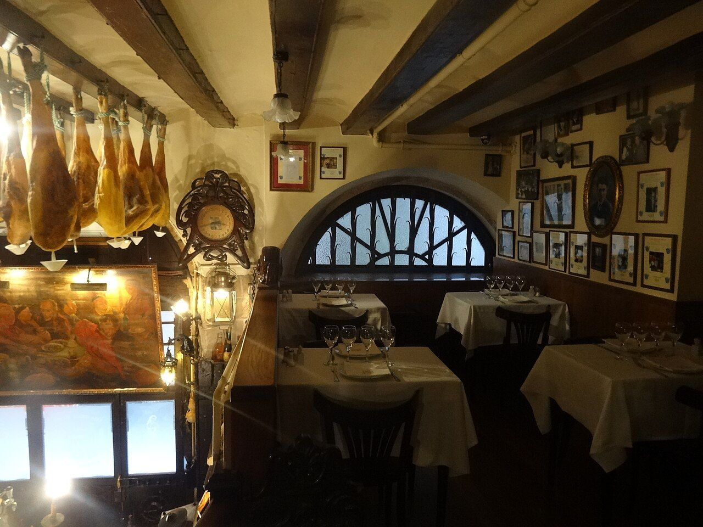
12/28（月） 夜
1835年創業。店先で回るローストチキンとカタツムリ煮込み
ホテルから徒歩5分（ゴシック地区）
要予約 12/1（火） 地図
詳しく カタツムリのソース煮 €19.20／ローストチキン €22.90／海鮮パエリア €29.35（公式メニュー）
入りにくい（有名店・観光客が多い）
12/28（月） · 厨房は13:00-15:30, 19:00-22:30が目安。13:15-24:00の通し営業の案内もありますが、食事のできる時間は予約時に確かめてください 出典 （9/25 金曜日確認）
通常 · 厨房 13:00-15:30, 19:00-22:30。休業日は予約時に確かめてください 出典 （9/25 金曜日確認）
公式
Los Caracoles。1835年創業。カタツムリの煮込みとパエリア（ホテルから徒歩5分）
ひとこと 名物は店名どおりカタツムリのソース煮（Caracoles en salsa）と、1934年から焼いているローストチキン（Pollo a l'ast）。苦手な人がいても、チキンと海鮮パエリアで十分楽しめます。イカ墨の黒い米（€29.00）、トリュフのカネロネス（€19.75）、パン・コン・トマテ（€3.50）も。 予約時に「厨房のラストオーダー」を確認しておくと安心です。
Granja Viader（グランハ・ビアデル） 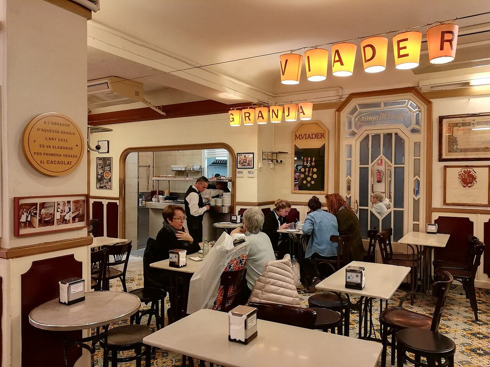
12/29（火） 夕方
1870年創業の乳製品の喫茶。チョコ牛乳カカオラットの生まれた店
ホテルから徒歩約10分（目安）（ブケリア市場の裏手）
予約不要 地図
詳しく 注文前にメニューで料金を確かめてください
入りやすい（喫茶。夕方は並ぶこともある）
12/29（火） · 17:00-20:30（火曜の通常営業） 出典 （9/25 金曜日確認）
通常 · 火〜土 9:00-13:15, 17:00-20:30／日・祝・月は休み 出典 （9/25 金曜日確認）
公式
Granja Viaderでクレマ・カタラナとホットチョコレート。ブケリア市場の裏・Xuclà（シュクラ通り） 4
ひとこと モンセラットから戻った夕方の甘いもの。クレマ・カタラナ、ホットチョコレートに生クリームをのせた「スイス（suís）」、メリンドロ（細長いビスケット）やチュロスが定番。瓶入りチョコ牛乳 Cacaolat もここが発祥とされます。 午後は17:00開店。日曜・祝日・月曜は休みなので、この日（火）以外に振り替えるなら水〜土に。
Tablao Flamenco Cordobés（タブラオ・フラメンコ・コルドベス） 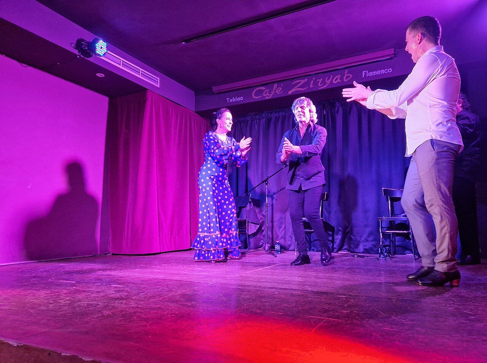
フラメンコのイメージ 12/29（火） 夜
1970年からのフラメンコ劇場。40品超のビュッフェの後に本番
ホテルから徒歩約5分
要予約 12/1（火） 地図
詳しく ディナー付きは€82〜が目安。€86の販売例もあり、購入時に公式チケット画面で料金を確かめてください
入りにくい（時間指定の予約制）
12/29（火） · ディナー 19:30／ショー 21:00（公式の時間表。「毎日すべての回があるとは限らない」） 出典 （9/25 金曜日確認）
通常 · ディナー＋ショー 18:00/19:15・19:30/21:00・21:15/22:30、タパス＋ショー 16:30/17:40 出典 （9/25 金曜日確認）
公式
Tablao Cordobés（タブラオ・コルドベス）でフラメンコ。ディナーは19:30から、ショーは21:00から約75分。ディナー付き€82〜（La Rambla 35・ホテルから徒歩約5分）
ひとこと 食事はショーの前に別室でとり、演奏中は食べません（公式）。料理は取り分け式のビュッフェで、パエリア、イベリコ生ハム、タコ、サルモレホ、パタタス・ブラバス、クレマ・カタラナ、チュロスとチョコレートなど。ワイン・カバ・ビール・サングリア・ソフトドリンクは飲み放題（ディナー付きの場合）。 体調で食べられない物があれば、予約時に相談を。ショーは約70〜75分。
代わりの店 7 Portes（セッテ・ポルテス） 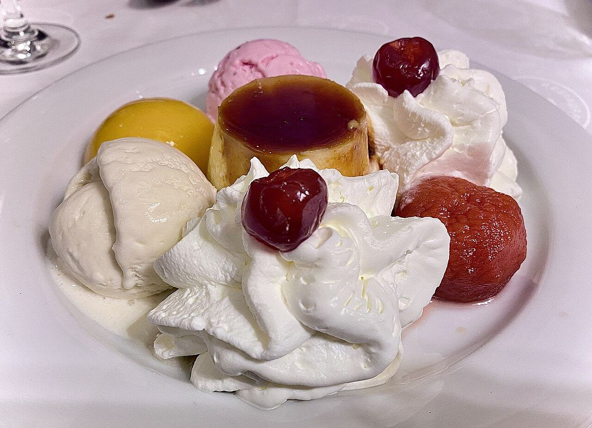
予定外の候補
1836年創業、毎日昼から深夜0時まで開く米料理の老舗
ボルン地区の海側・ホテルからタクシーで約5〜10分（目安）
予約推奨 地図
詳しく 予約推奨（毎日営業なので、当日の電話でも取れる可能性あり）
注文前にメニューで料金を確かめてください
入りやすい方（大きな店・通し営業）
12/26（土） · 13:00-24:00（年中無休） 出典 （9/25 金曜日確認）
12/27（日） · 13:00-24:00（年中無休） 出典 （9/25 金曜日確認）
通常 · 月〜日 13:00-24:00 出典 （9/25 金曜日確認）
公式
ひとこと 12/26（土）にCan Culleretes（カン・クリェレテス）が休み・満席のときの第一候補。毎日、昼から夜中まで通しで開いているので、スペインの遅い食事時間に合わせなくて済みます。米料理（パエリア、魚介の米）が看板で、カタルーニャの伝統料理も幅広くそろいます。 Can Culleretes（12/26 土曜日）や Xiringuito Escribà（チリンギート・エスクリバ）（12/27 日曜日）が使えない日の代わりに。電話 +34 93 319 30 33。
Cerveseria Catalana（セルベセリア・カタラナ） 予定外の候補
朝から深夜まで開く、アシャンプラの定番タパス酒場
カサ・ミラ／カサ・バトリョから歩ける距離（アシャンプラ地区）
席を確保できるか、行く前に店へ電話で尋ねてください 地図
詳しく 注文前にメニューで料金を確かめてください
入りやすいが混む（通し営業・待つことが多い）
12/26（土） · 祝日は休む場合があるので、行く前に電話で営業を確かめてください 出典 （9/25 金曜日確認）
通常 · 月〜金 8:30-翌1:00頃／土 9:00-翌1:30／日 9:00-翌1:00 出典 （9/25 金曜日確認）
ひとこと 12/28（月） のカサ・ミラ／カサ・バトリョの近く。昼と夜の間の時間帯（16:00〜20:00）も開いているのが強みで、スペインの遅い夕食が合わない日の早めの食事に使えます。 席を確保できるか、行く前に店へ電話で尋ねてください。混んでいたら待つか別の店へ。
El Quim de la Boqueria（エル・キム・デ・ラ・ブケリア） 予定外の候補
市場のカウンターで目玉焼き料理。1987年からの屋台バル
ホテルから徒歩約7分（目安）（ランブラス通り沿いの市場の中）
予約不要 地図
詳しく 注文前にメニューで料金を確かめてください
予約不可（カウンターで順番待ち）
12/26（土） · 祝日のため市場ごと休みの可能性が高い（ふだんは月〜土 8:00-20:30） 出典 （9/25 金曜日確認）
12/27（日） · 休み（日曜） 出典 （9/25 金曜日確認）
12/28（月） · 12:00-16:00 出典 （9/25 金曜日確認）
12/29（火） · 7:00-16:00 出典 （9/25 金曜日確認）
12/30（水） · 7:00-16:00 出典 （9/25 金曜日確認）
通常 · 月 12:00-16:00／火〜木 7:00-16:00／金・土 7:00-17:00／日休 出典 （9/25 金曜日確認）
公式
ひとこと 看板は目玉焼き。半熟の卵に小イカやキノコ、エビなどをのせる「huevos estrellados」が名物です。カウンターだけなので、1人が並んで席を取り、空いたら3人並びで座る形に。 12/30（水） 朝のブケリア見学のついでに朝ごはんにもできます（07:00から）。夜はやっていません。
El Xampanyet（エル・シャンパニェット） 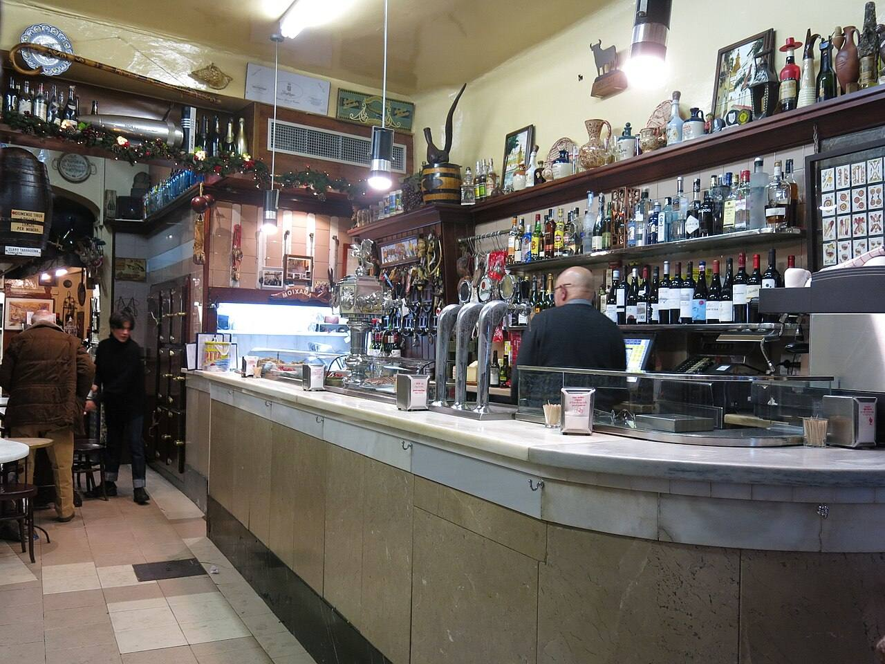
予定外の候補
1929年からのボルンの立ち飲み。自家製の微発泡酒とアンチョビ
ピカソ美術館の並び・ボルン散策（12/26 土曜日）の途中
予約不可 地図
詳しく 注文前にメニューで料金を確かめてください
予約なしのみ（混雑時は立ち飲みか待つ）
12/26（土） · 通常の土曜は12:00-15:30の昼のみ。祝日のため、行く前に電話で営業を確かめてください 出典 （9/25 金曜日確認）
12/27（日） · 休み（日曜） 出典 （9/25 金曜日確認）
12/28（月） · 19:00-23:00（月曜は夜のみ） 出典 （9/25 金曜日確認）
通常 · 月 19:00-23:00／火〜金 12:00-15:30, 19:00-23:00／土 12:00-15:30／日休 出典 （9/25 金曜日確認）
公式
ひとこと アンチョビと缶詰・瓶詰め（conserves）が専門の、青いタイルの小さなバル。名物は店名の由来の甘口の微発泡ワイン（xampanyet）。立ったまま数品つまんで次へ、という使い方が合います。 予約はできないので、混んでいたら無理せず次へ。座って休みたい日には不向きです。
Els 4 Gats（クアトロ・ガッツ） 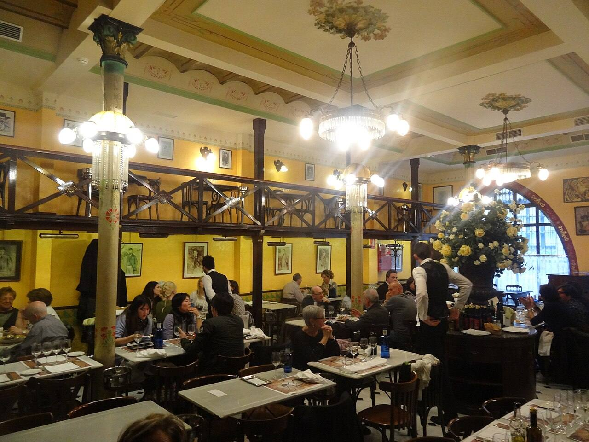
予定外の候補
若きピカソが通ったモデルニスモの酒場。カネロネスと米料理
ホテルから徒歩約10分（目安）（大聖堂の近く・ポルタル・デ・ランジェル通りの脇）
予約推奨 地図
詳しく 注文前にメニューで料金を確かめてください
入れることもあるが夜は予約が安心
12/26（土） · 通常の土曜は11:00-24:00。祝日のため、行く前に電話で営業を確かめてください 出典 （9/25 金曜日確認）
12/27（日） · 12:00-17:00（日曜） 出典 （9/25 金曜日確認）
12/28（月） · 休み（月曜） 出典 （9/25 金曜日確認）
12/29（火） · 11:00-24:00 出典 （9/25 金曜日確認）
通常 · 火〜土 11:00-24:00／日 12:00-17:00／月休 出典 （9/25 金曜日確認）
公式
ひとこと ゴシック地区で食事をするときの候補。カタルーニャの伝統料理が中心で、カネロネスと米料理が得意と紹介されています。1897年開店の芸術家のたまり場で、若いピカソが最初の個展を開いた場所として知られます。 12/26（土） は大聖堂の近くを歩く日なので、昼の休憩にも使えます。電話 933 02 41 40。
Granja Dulcinea（グランハ・ドゥルシネア） 料理のイメージ 予定外の候補
1941年から続くペトリチョル通りのチョコレート喫茶
ホテルから徒歩約5分（目安）（ランブラス通りから一本入った「チョコレート通り」）
予約不要 地図
詳しく 注文前にメニューで料金を確かめてください
入りやすい（喫茶。午後は並ぶこともある）
12/26（土） · 祝日は休む場合があるので、行く前に電話で営業を確かめてください 出典 （9/25 金曜日確認）
12/27（日） · 9:00-14:00, 17:00-21:00（日曜の通常時間） 出典 （9/25 金曜日確認）
通常 · 月〜土 9:00-14:00, 16:00-21:00／日 9:00-14:00, 17:00-21:00／12/25（金）・1/1（金） 休み 出典 （9/25 金曜日確認）
ひとこと 体調がすぐれない日や、食事の代わりに温かいものを少しだけ、というときに。とろりと濃いカタルーニャ風ホットチョコレート（xocolata a la tassa）に、メリンドロ、チュロス、クロワッサンを浸して食べます。 日曜も開いていると案内されているので、Granja Viader（日・月休み）の代わりになります。
La Cova Fumada（ラ・コバ・フマダ） 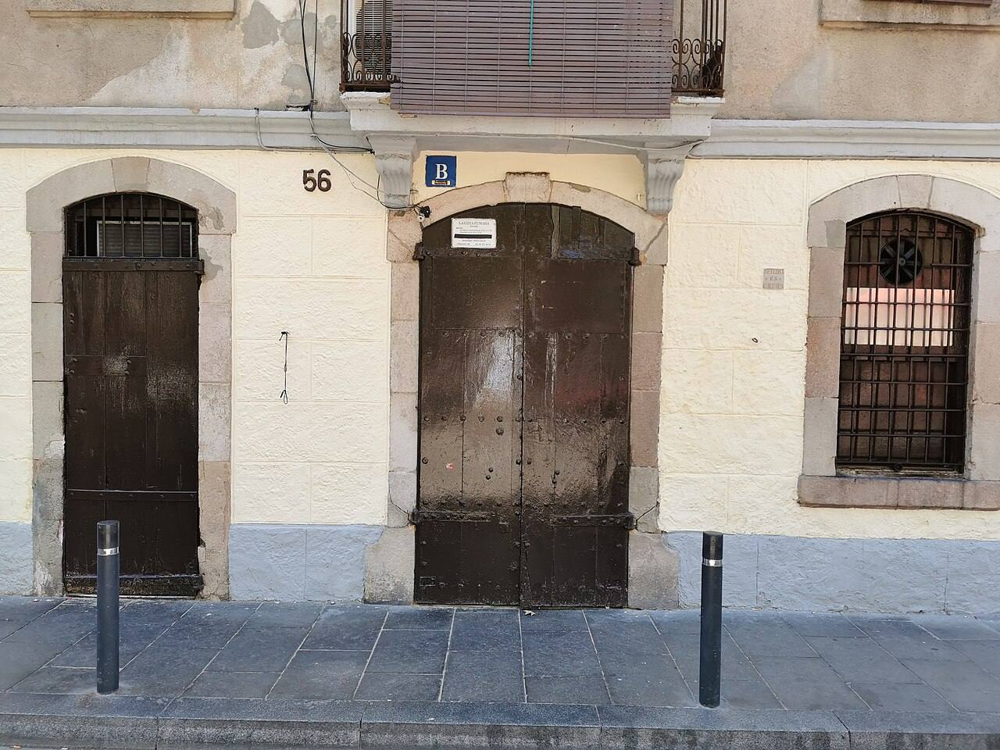
予定外の候補
名物ボンバ発祥の店。1944年から続くバルセロネタの食堂
バルセロネタ地区・ホテルからタクシーで約10分（目安）
予約不可 地図
詳しく 注文前にメニューで料金を確かめてください
予約不可（満席が多く、並んで待つ）
12/26（土） · 通常の土曜は9:00-13:00。祝日のため、行く前に電話で営業を確かめてください 出典 （9/25 金曜日確認）
12/27（日） · 休み（日曜） 出典 （9/25 金曜日確認）
12/28（月） · 9:00-15:00 出典 （9/25 金曜日確認）
12/29（火） · 9:00-15:00 出典 （9/25 金曜日確認）
通常 · 月〜水 9:00-15:00／木・金 9:00-15:00, 18:00-20:00／土 9:00-13:00／日休 出典 （9/25 金曜日確認）
公式
ひとこと ボンバ（bomba）は、ひき肉を包んだじゃがいもの揚げ団子に、にんにくのアリオリと辛いソースをかけたもの。この店の先代の祖母が考えたとされ、作り方は秘密（公式）。 昼で閉まる日が多く、夕食には使えません。平日の昼に海辺へ出るときの候補に。
タラゴナ 名物 カルソッツ 炭火で黒く焼いた長ネギを剥き、ロメスコに浸して食べる
食べられる店：El Trull 4 Brasas（カルソッツ）
詳しく 11〜4月（産地認証「Calçot de Valls」の出荷時期）。店での提供は1月からが多い
"Una calçotada, si us plau"（ウナ・カルソターダ、シウスプラウ）
タラゴナ近くの町バイス（Valls）発祥の、細長い玉ねぎの若芽。炭火で外が真っ黒になるまで焼きます。外皮を手で引き抜き、赤ピーマン・ナッツ・にんにくのソース（ロメスコ）をつけて、上を向いて口へ運びます。服が汚れないよう、店で紙のエプロンが出ることが多いです。焼いたソーセージや羊肉とワインまで続く定食を「カルソターダ」と呼びます。
パエリアとアロス・ネグラ 平鍋で炊く米料理。イカ墨で黒く炊いたアロス・ネグラも名物
食べられる店：Xiringuito Escribà（チリンギート・エスクリバ） ／ Los Caracoles（ロス・カラコレス） ／ Tablao Flamenco Cordobés（タブラオ・フラメンコ・コルドベス） ／ 7 Portes（セッテ・ポルテス） ／ Els 4 Gats（クアトロ・ガッツ） ／ El Llagut（エル・リャグート）
詳しく 通年
"Paella de marisc per a tres, si us plau"（パエリャ・ダ・マリスク・ペラ・トレス、シウスプラウ）
平たい鍋で米を魚介や肉のスープで炊く料理。発祥は隣のバレンシアですが、海のあるバルセロナでは魚介のパエリアが定番です。イカ墨で真っ黒に炊いた「アロス・ネグラ（arròs negre）」はカタルーニャの名物で、にんにくのアリオリを添えて食べます（歯が黒くなるので写真は食べる前に）。汁気の多い「アロス・カルドス」は胃にやさしめです。
日程の店 El Trull 4 Brasas（カルソッツ） 料理のイメージ 12/27（日） 昼
焼きネギを手で剥いてロメスコに浸す。冬のタラゴナの味
旧市街からタクシー約20分が目安
予約推奨 地図
詳しく 予約推奨（日曜は混む。12/27 日曜日のカルソッツの提供を電話で確かめる）
定食は約€40〜41が目安。予約時に内容と料金を確かめる
入りにくい（日曜のカルソターダ＝カルソッツの定食は予約前提）
12/27（日） · El Trull（エル・トゥルイ）：日 13:00-16:00（通常の日曜の営業時間。カルソッツがあるかは予約時に尋ねる） 出典 （9/25 金曜日確認）
通常 · El Trull：日〜水 13:00-16:00／木〜土 13:00-16:00, 20:00-24:00 出典 （9/25 金曜日確認）
公式
カルソッツ（炭火で焼いた長ネギのような玉ねぎを、ロメスコソースで食べる料理）。年内は出さない店もあるので、無ければ炭火焼きとロメスコソースを
ひとこと 日曜の昼は炭火焼きの店 El Trull 4 Brasas へ。焼きネギの皮を手でむき、ロメスコに浸す冬の味を楽しみます。 年内はカルソッツが出ない場合があります。予約時に「¿Tienen calçotada el 27 de diciembre?」と尋ね、無ければ炭火焼きとロメスコを。 代わりの店は Restaurant Passadís（カルソターダ €47）。日曜の営業は行く前に電話で確かめてください。
代わりの店 El Llagut（エル・リャグート） 料理のイメージ 予定外の候補
タラゴナ旧市街の魚介酒場。ロメスコ風味の米料理が評判
旧市街（Part Alta）・大聖堂や地中海のバルコニーから歩ける距離
予約推奨 地図
詳しく 予約推奨（日曜昼）
注文前にメニューで料金を確かめてください
行く前に空席を電話で尋ねてください
12/27（日） · 13:00-16:00（日曜は昼のみ） 出典 （9/25 金曜日確認）
通常 · 火〜日 13:00-16:00／火〜土 20:30-23:00／月休・日夜休 出典 （9/25 金曜日確認）
公式
ひとこと 12/27（日）の昼に、旧市街で魚介料理を食べたいときの候補。旧市街の中にあり、遺跡巡りの流れを崩さずに入れます。ロメスコ（赤ピーマンとナッツのソース）を使った汁気の多い米料理（アンコウとアサリ）がおすすめとされます。 カルソッツそのものは無くても、同じロメスコの味で「タラゴナらしさ」は味わえます。電話 977 22 89 38。
モンセラット 日程の店 Buffet Montserrat（ビュッフェ・モンセラット） 12/29（火） 昼
山の眺めを見ながら取り放題。修道院前の手早い昼食
修道院・黒い聖母から徒歩数分（山上の広場）
予約不要 地図
詳しく 大人は約€21が目安。入店前に料金を確かめてください
入りやすい（予約不可・開店直後が空いている）
12/29（火） · 12:15-16:00（冬季・年末は変更がある場合も。訪問前に営業時間を確かめてください） 出典 （9/25 金曜日確認）
通常 · 12:15-16:00 出典 （9/25 金曜日確認）
公式
山上のビュッフェ（Montserrat Buffet）
ひとこと 地中海料理と各国料理のビュッフェ。開店の12:15に入れば席も料理も選びやすいです。好きな量だけ取れるので、疲れた人や食欲のない人がいても調整しやすいのが利点。 混んでいたら、同じ山上の La Cafeteria（平日 08:45-18:30）や Bar de la Plaça（火 08:45-18:30）で軽食に切り替えられます。きちんと座って食べたいなら Hotel Abat Cisneros（ホテル・アバト・シスネロス） のレストラン（13:00-15:00）も。
マドリード 名物 イカフライのボカディージョ 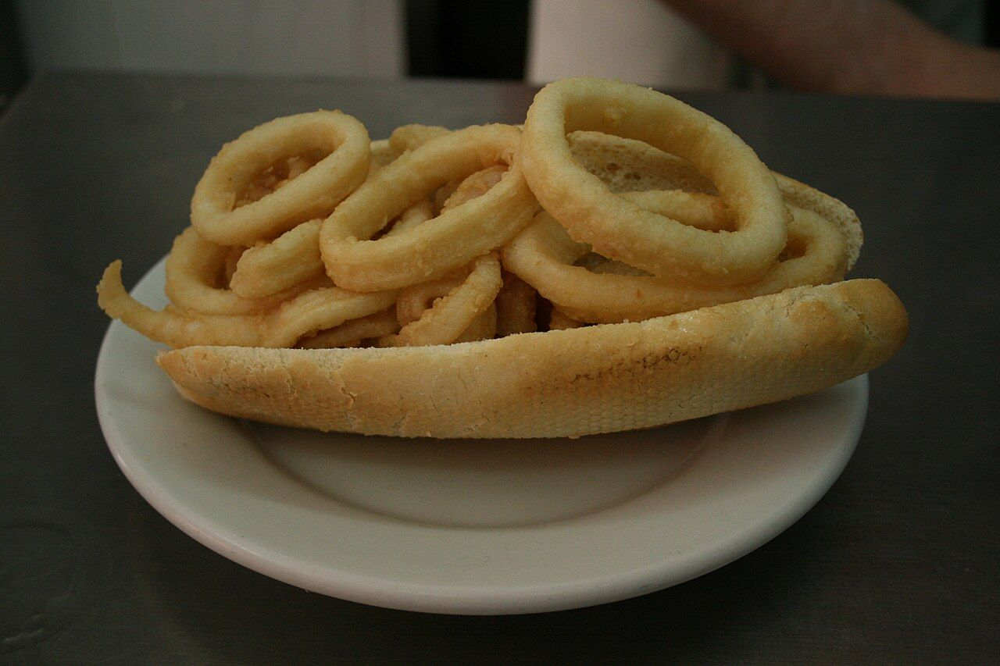
海のないマドリードの名物、イカリングを挟んだパン
食べられる店：Cervecería La Campana（ラ・カンパーナ） ／ Mercado de San Miguel（サン・ミゲル市場） ／ El Brillante（エル・ブリジャンテ）
詳しく 通年。マヨール広場周辺の定番の立ち食い
"Un bocadillo de calamares, por favor"（ウン・ボカディージョ・デ・カラマレス、ポル・ファボール）
輪切りのイカに衣をつけて揚げ、バゲットに挟んだだけのシンプルなサンドイッチ。レモンやマヨネーズを添える店もあります。安く早く食べられる庶民の味で、立ち食いが基本。パンが大きいので、3人なら2本を分けても十分です。
カジョス（牛もつ煮込み） 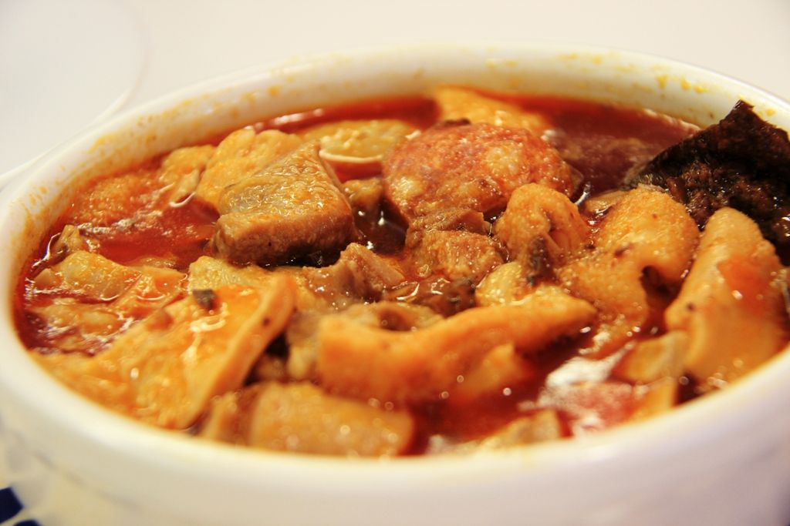
牛もつをチョリソとパプリカで煮た冬の小皿
食べられる店：Bodega de los Secretos（ボデガ・デ・ロス・セクレトス） ／ Lhardy（ラルディ） ／ Casa Revuelta（カサ・レブエルタ）
詳しく 冬の定番の煮込み
"Una ración de callos, por favor"（ウナ・ラシオン・デ・カジョス、ポル・ファボール）
牛の胃袋（もつ）を、チョリソ、血のソーセージ、パプリカで長く煮込んだ料理。とろりとして少しピリッとします。好みが分かれるので、まず1皿を3人で味見するのがおすすめ。パンをひたして食べます。
チョコラテ・コン・チュロス 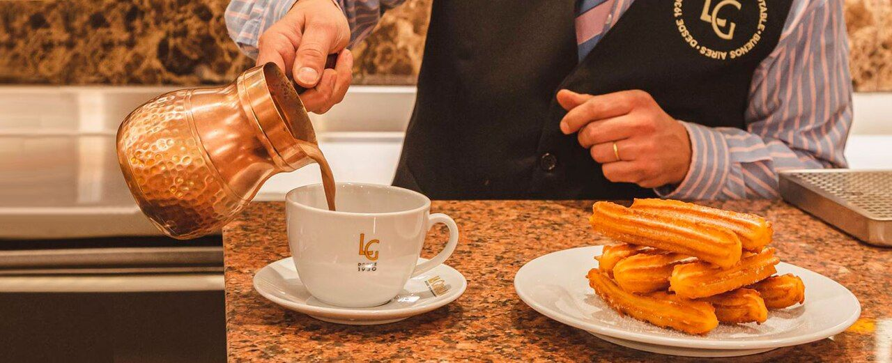
飲むというより浸す、濃いホットチョコと揚げ菓子
食べられる店：Chocolatería San Ginés（チョコラテリア・サン・ヒネス）
詳しく 通年。とくに元日の朝の定番
"Tres chocolates con churros, por favor"（トレス・チョコラテス・コン・チュロス、ポル・ファボール）
細長く揚げた生地「チュロス」を、ポタージュのように濃いホットチョコレートに浸して食べます。太い「ポラス」もあります。年越しの夜明けや元日の朝に食べる習慣があり、元日の朝は行列ができます。
子豚の丸焼き 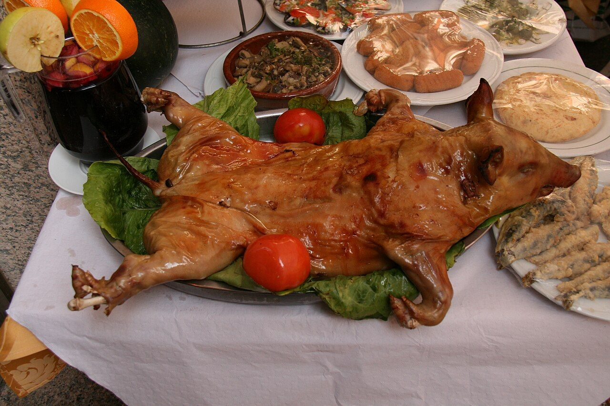
薪窯で焼く乳飲み子豚。皮はパリッと中はとろり
食べられる店：Restaurante Botín（ボティン）
詳しく 通年。カスティーリャ地方の祝いの料理
"Cochinillo asado, por favor"（コチニーリョ・アサード、ポル・ファボール）
生後まもない子豚を薪の窯でじっくり焼いた料理。皮は飴色でパリッと、身は脂が甘くやわらか。セゴビアが本場ですが、マドリードでは Botín が有名です。付け合わせにはジャガイモが出ることが多いです。
コシード・マドリレーニョ 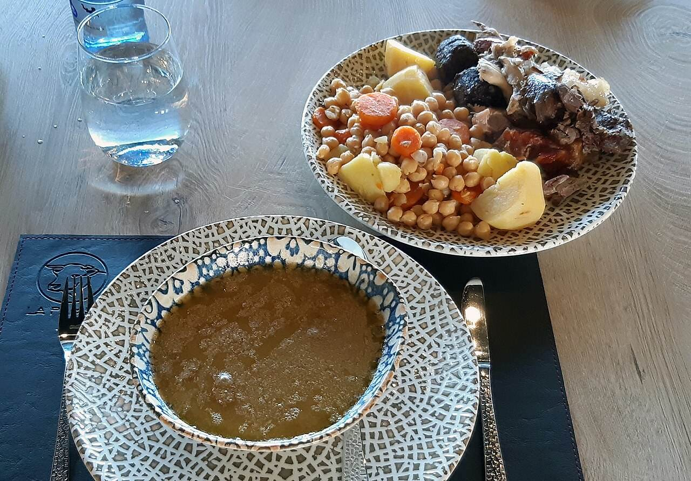
ひよこ豆と肉を煮込み、スープと具を2回に分ける鍋
食べられる店：Taberna La Bola（ラ・ボラ） ／ Lhardy（ラルディ）
詳しく 冬の定番。昼にしっかり食べる料理
"Cocido para tres, por favor"（コシード・パラ・トレス、ポル・ファボール）
ひよこ豆、牛肉、鶏肉、チョリソ、キャベツなどを長時間煮込むマドリードの鍋料理。まず煮汁に細いパスタを入れたスープ、次に豆と肉と野菜を皿に出す「2回出し」が特徴です。量が多いので前菜は要りません。
ウエボス・ロトス（崩し卵） 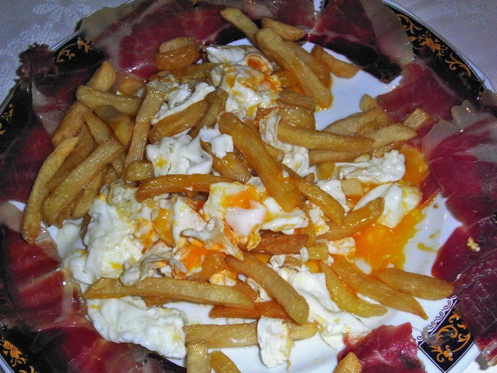
揚げポテトに目玉焼き、黄身を崩して絡める
食べられる店：Casa Lucio（カサ・ルシオ） ／ Mercado de San Miguel（サン・ミゲル市場） ／ Mesón del Champiñón（メソン・デル・チャンピニョン）
詳しく 通年。バルの定番
"Huevos rotos, por favor"（ウエボス・ロトス、ポル・ファボール）
揚げたジャガイモの上に半熟の目玉焼きをのせ、食べる直前に黄身を崩して全体に絡めます。生ハムやチョリソをのせることも。Casa Lucio の名物として有名で、店では「ウエボス・エストレジャードス」と呼びます。
日程の店 Casa Lucio（カサ・ルシオ） 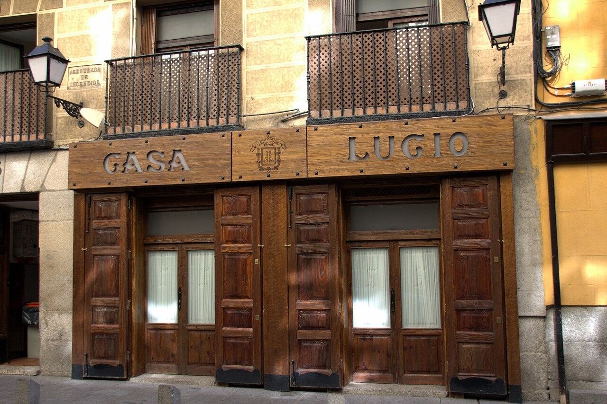
12/30（水） 夜
カバ・バハ通りの老舗。崩して食べる卵とポテトの名店
ホテルから徒歩約15分（目安）／地下鉄 L5 La Latina（ラ・ラティーナ） すぐ
要予約 12/1（火） 地図
詳しく 注文前にメニューで料金を確かめてください
入りにくい（人気店・夜は予約客中心）
12/30（水） · 通常どおり 13:00-16:00, 20:00-23:30。年末の営業は予約時に確かめてください 出典 （9/25 金曜日確認）
通常 · 毎日 13:00-16:00, 20:00-23:30。12/24（木）・25・31と1/1（金）の夜は休み、8月休み 出典 （9/25 金曜日確認）
公式
Casa Lucioでウエボス・ロトス。Cava Baja（カバ・バハ通り） 35
ひとこと 名物は「ウエボス・ロトス（huevos estrellados）」。揚げたジャガイモの上に目玉焼きをのせ、店の人が目の前で黄身を崩します。3人で1皿を分け、ほかに生ハムや肉料理を1〜2品で十分です。 注意：12/31（木） と 1/1（金） は夜が休みです。日程をずらして 12/31（木）・1/1（金） の夜に行くことはできません。
Bodega de los Secretos（ボデガ・デ・ロス・セクレトス） 料理のイメージ 12/31（木） 昼
17世紀の地下酒蔵の個室風アーチ席で食べる昼ごはん
プラド美術館から徒歩約10分（目安）／地下鉄 L1 Antón Martín（アントン・マルティン）
要予約 12/1（火） 地図
詳しく 注文前にメニューで料金を確かめてください
入りにくい（席が区切られていて数が少ない）
12/31（木） · 大晦日の営業時間は予約時に確かめてください 出典 （9/25 金曜日確認）
通常 · 毎日 11:30-23:00（日曜は16:00まで）。13:30から夜まで通し営業 出典 （9/25 金曜日確認）
公式
Bodega de los Secretos。Calle San Blas（サン・ブラス通り） 4・地下の酒蔵を使った店
ひとこと レンガのアーチ天井の地下で、区切られた席に座れるので落ち着いて食べられます。夜の年越しディナー（Lhardy）が控えているので、昼は軽めに。前菜を分け合い、メインは1人1皿で十分です。
Lhardy（ラルディ） 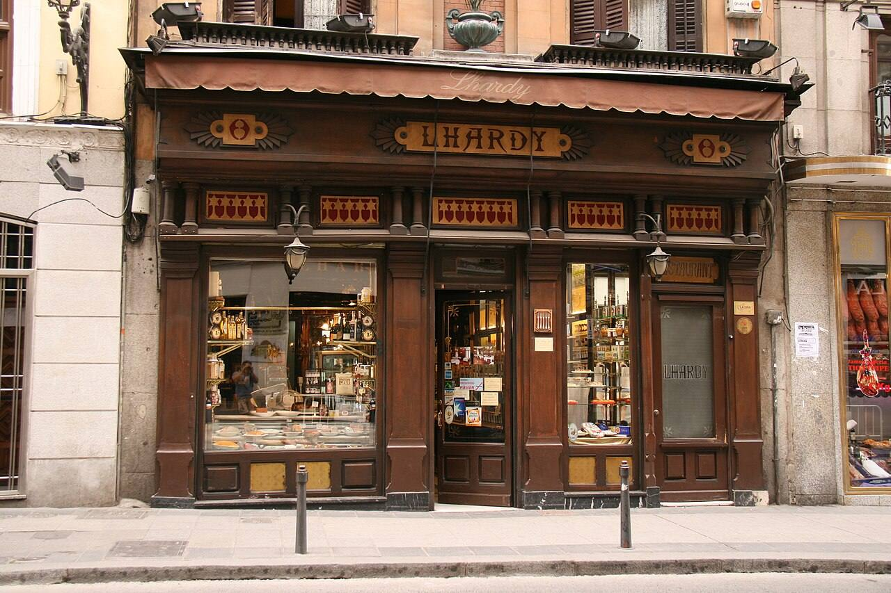
12/31（木） 夜
1839年創業の老舗で大晦日の特別ディナー
プエルタ・デル・ソルから徒歩約5分／ホテルから徒歩約15分（目安）
要予約 11/15（日） 地図
詳しく 大晦日は特別メニュー（公式の Nochevieja PDF で確認）
入りにくい（大晦日は予約制の特別ディナー）
12/31（木） · 年越しの特別ディナー（Nochevieja）を実施。時間は予約時に確認 出典 （9/25 金曜日確認）
通常 · レストラン 月〜土 13:00-24:00、日 13:00-16:00（日曜夜休み）／1階の店 月〜土 9:00-23:00、日 10:00-17:00 出典 （9/25 金曜日確認）
公式
Lhardyで年越しディナー。1839年創業
ひとこと 大晦日はコースが決まっているので、注文で迷うことはありません。食後は徒歩2分でプエルタ・デル・ソルのカウントダウンへ。 体調が悪い日の助け舟：1階の店では名物のコンソメ（温かい澄んだスープ）を立ち飲みでき、持ち帰りもできます。平日・土曜は23:00まで。
Chocolatería San Ginés（チョコラテリア・サン・ヒネス） 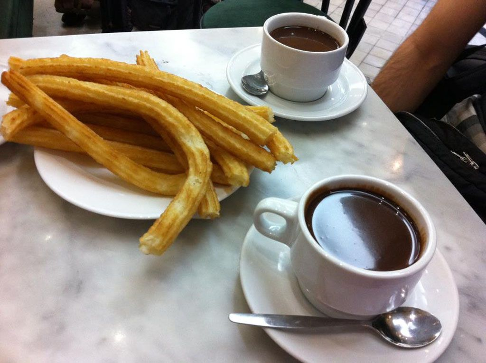
1/1（金） 朝
1894年創業。元日も開く濃厚チョコとチュロスの店
ホテルから徒歩約10分（目安）／ソルから徒歩3分
予約不要 地図
詳しく 注文前にメニューで料金を確かめてください
入りやすい（並ぶが回転が早い）
1/1（金） · 祝日の前夜と木〜日は24時間営業・年中無休。元日は行く前に営業時間を確かめてください 出典 （9/25 金曜日確認）
通常 · 月〜水 8:00-24:00、木〜日と祝前日 24時間 出典 （9/25 金曜日確認）
公式
Chocolatería San Ginésでチョコラテ・コン・チュロス
ひとこと 元日の朝は、年越しから流れてきた人で行列になることがあります。行列はたいてい早く進みます。チョコラテは飲むというより「チュロスをひたす」濃さ。3人ならチョコ3杯とチュロス2皿で足ります。太めの「ポラス」もあります。 年中無休なので、ほかの店が閉まっている時の朝食や軽食の逃げ場としても使えます。
Cervecería La Campana（ラ・カンパーナ） 料理のイメージ 1/1（金） 昼
マヨール広場の裏で立って食べるイカフライのパン
マヨール広場から徒歩約5分／ホテルから徒歩約10分（目安）
予約不要 地図
詳しく ボカディージョとビールで €4.50 前後が目安。注文前にメニューで現在の料金を確かめてください
入りやすい（立ち食い中心・回転が早い）
1/1（金） · 元日に行く場合は、先に電話で営業を確かめてください。月曜は休みと案内されています（1/1 金曜日は金曜） 出典 （9/25 金曜日確認）
通常 · 9:00-23:00前後（金土は24:00）が目安。行く前に営業時間を確かめてください 出典 （9/25 金曜日確認）
公式
La Campanaでイカのボカディージョ。マヨール広場のそば
ひとこと 注文は「ボカディージョ・デ・カラマレス」。パンは大きいので、3人で2本を分けても十分です。立って食べるカウンター中心なので、座りたい日は向きません。 休みだったら：マヨール広場の周りには同じボカディージョを出す店がいくつもあります。座りたいなら近くの Casa Revuelta（揚げたタラ）も候補です（月曜休み）。
Restaurante Botín（ボティン） 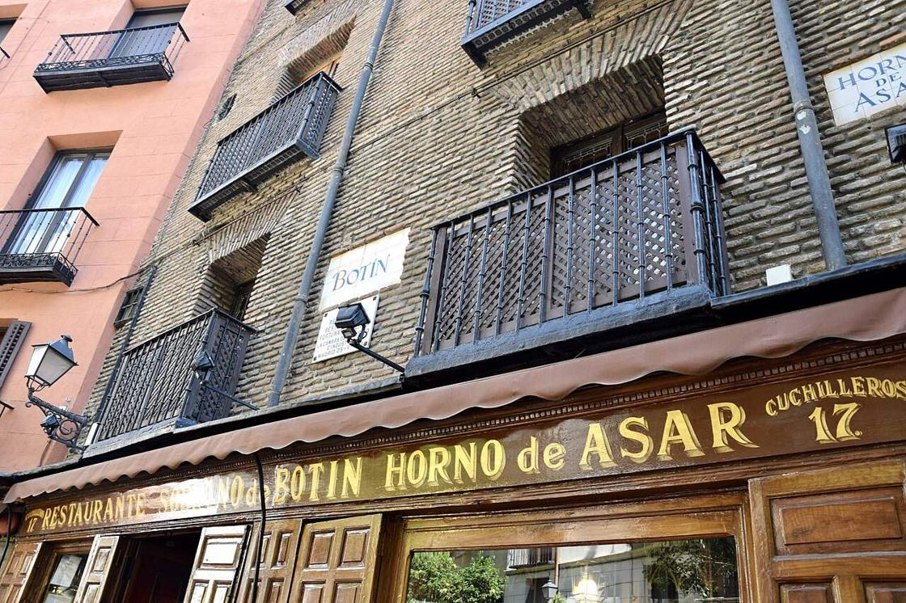
1/1（金） 夜
1725年創業の世界最古の店。薪窯の子豚の丸焼き
ホテルから徒歩約10分／マヨール広場から徒歩2分
要予約 12/1（火） 地図
詳しく 注文前にメニューで料金を確かめてください
入りにくい（予約で埋まる）
1/1（金） · 毎日営業。元日の営業時間は予約時に確かめてください 出典 （9/25 金曜日確認）
通常 · 毎日 13:00-23:30 出典 （9/25 金曜日確認）
公式
Botínで子豚の丸焼き。1725年創業・世界最古のレストラン
ひとこと 名物は「コチニーリョ・アサード（子豚の丸焼き）」。皮はパリッと、中はやわらか。1人1皿が基本ですが、量が多いので3人で2皿＋サラダやスープでも十分です。ニンニクスープ（sopa de ajo）は胃にやさしい前菜です。 2025年に創業300年を迎えました。店内の古い薪窯もぜひ見てください。
Mercado de San Miguel（サン・ミゲル市場） 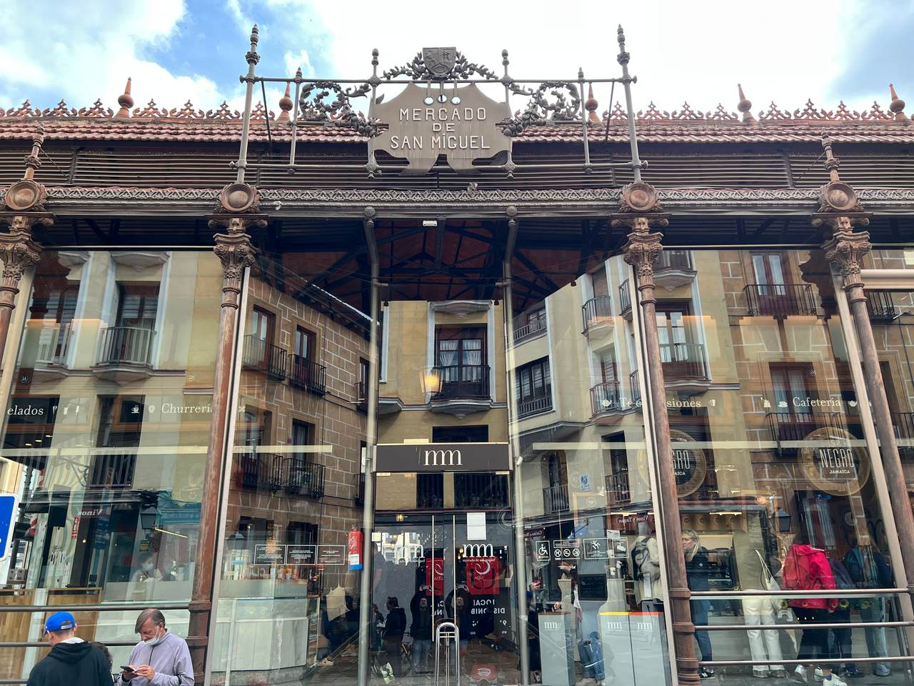
1/2（土） 夜
鉄とガラスの市場で、少しずつつまむ遅い夕食
ホテルから徒歩約10分／マヨール広場のすぐ西
予約不要 地図
詳しく 注文前にメニューで料金を確かめてください
入りやすい（混むが立ち食いで回る）
1/2（土） · 土曜 10:00-翌1:00。年始の営業は行く前に確かめてください 出典 （9/25 金曜日確認）
通常 · 日〜木 10:00-24:00、金・土・祝前日 10:00-翌1:00 出典 （9/25 金曜日確認）
公式
Mercado de San Miguelで遅めの夕食。タパスを軽く（ホテルから徒歩10分）
ひとこと グラナダ日帰りで疲れた夜向け。屋台で好きなものを少しずつ買い、空いている立ち席で食べます。座れる席はほとんどないので、座りたいときは無理をせず、ホテルへ持ち帰っても。 列車が遅れた日も深夜1時まで開いているので安心です。
Taberna La Bola（ラ・ボラ） 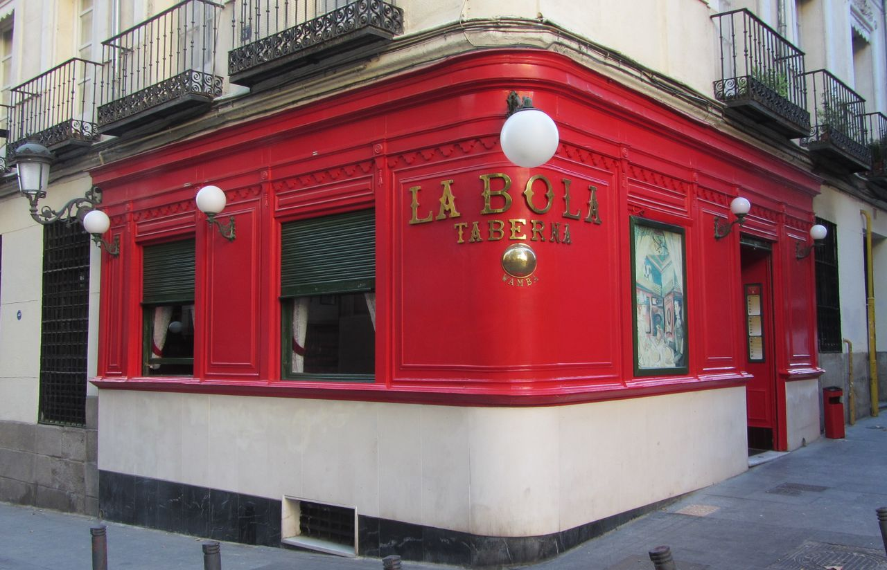
1/3（日） 昼
1870年創業。炭火の土鍋で煮込むコシードの名店
ホテルから徒歩約10分（目安）／王宮・オペラ駅のそば
要予約 12/1（火） 地図
詳しく 1人 €39.90〜45（公式のメニュー）
入りにくい（日曜昼は予約で埋まる）
1/3（日） · 日曜13:00-16:00。13:30と15:30の2部制とされるため、予約時に入店時刻を確かめてください 出典 （9/25 金曜日確認）
通常 · 日〜水 13:00-16:00、木〜土 12:00-20:30 出典 （9/25 金曜日確認）
公式
La Bolaのコシード・マドリレーニョ。日曜は13:30と15:30の2部制
ひとこと コシードは2回に分けて出ます。1回目は細いパスタ入りのスープ、2回目はひよこ豆・肉・野菜。量が多いので前菜は不要です。1人1人前が基本。 帰りの列車（17:57）までに余裕を持って、15:15には店を出ましょう。
代わりの店 Café de Oriente（カフェ・デ・オリエンテ） 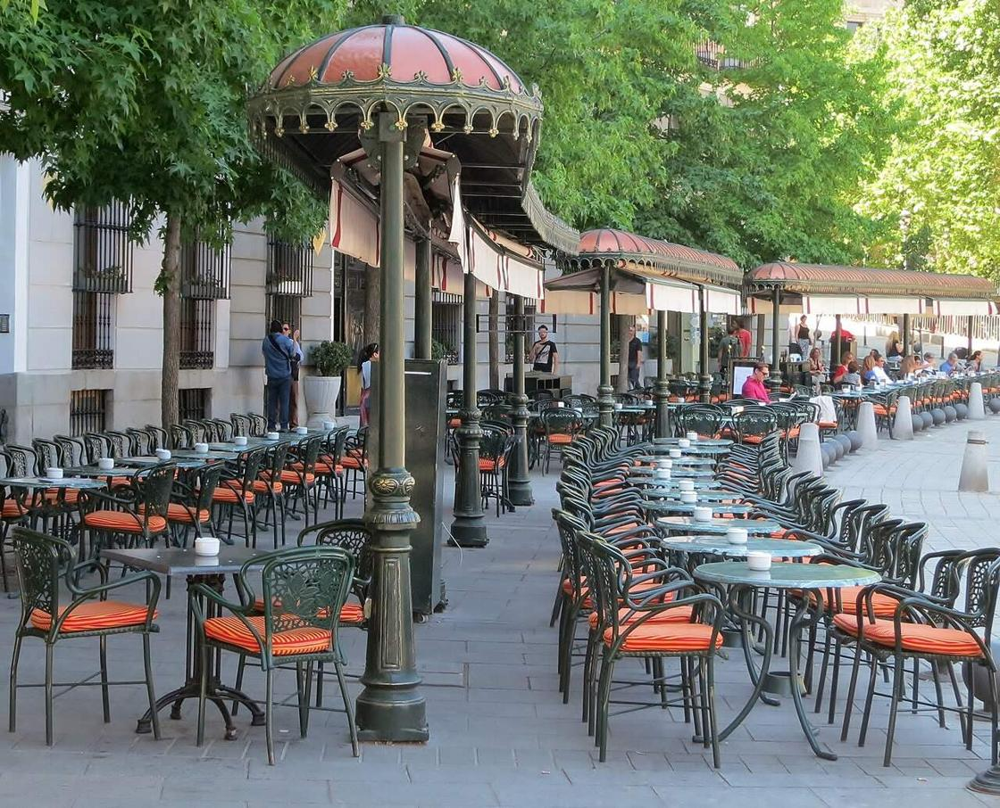
予定外の候補
王宮を望む広場のカフェ。体調が悪い日の軽い食事に
ホテルから徒歩約3分（目安）／王宮の正面
予約不要 地図
詳しく 注文前にメニューで料金を確かめてください
入りやすい（カフェ席あり）
12/31（木） · 通常の木曜は8:30-24:00。大晦日は行く前に営業を確かめてください 出典 （9/25 金曜日確認）
1/1（金） · 通常の金曜は8:30-24:00。元日は行く前に営業を確かめてください 出典 （9/25 金曜日確認）
通常 · 月〜金 8:30-24:00、土日 9:00-24:00 出典 （9/25 金曜日確認）
公式
ひとこと ホテルから一番近い、座って休める店。スープ、サンドイッチ、トルティージャ（スペイン風オムレツ）など軽いものを少しだけ、という日に。朝食の場所としても使えます。年末年始の特別営業は公式に記載がないため、当日店頭で確認してください。
Casa Labra（カサ・ラブラ） 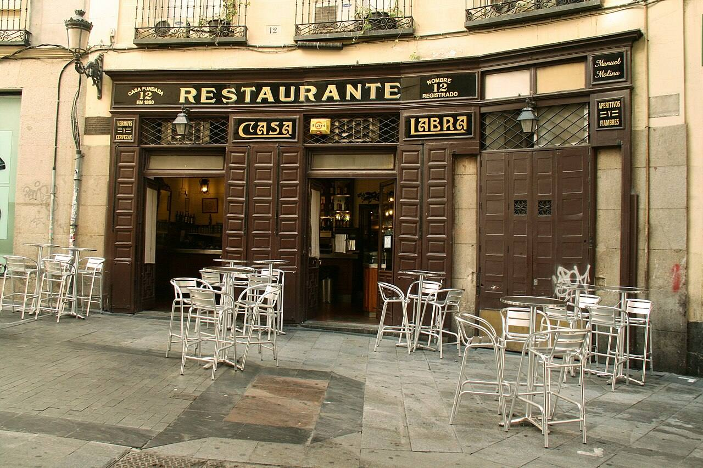
予定外の候補
1860年からソルの裏で揚げタラとタラのコロッケ
ソルから徒歩2分／ホテルから徒歩約10分（目安）
予約不要 地図
詳しく 1人 €16〜30（マドリード市観光局）
入りやすい（立ち飲みカウンターで注文）
12/31（木） · 通常は11:30-15:30, 18:30-22:30。大晦日は行く前に営業を確かめてください 出典 （9/25 金曜日確認）
1/1（金） · 元日は休みと案内されています 出典 （9/25 金曜日確認）
通常 · 11:30-15:30, 18:30-22:30、月曜の昼は休み。現在はタパスのみ（レストラン部は休止） 出典 （9/25 金曜日確認）
公式
ひとこと カウンターで先に注文して払い、小皿を受け取ります。「タハダ・デ・バカラオ（揚げたタラ）」と「クロケタ・デ・バカラオ（タラのコロッケ）」の2つで決まり。軽めに済ませたい昼や、12/31（木）のカウントダウン前の腹ごしらえに向きます。元日は休みと案内されているので、別の店を選びましょう。
Casa Revuelta（カサ・レブエルタ） 料理のイメージ 予定外の候補
マヨール広場脇、1966年からの衣サクサクの揚げタラ
マヨール広場から徒歩2分／ホテルから徒歩約12分（目安）
予約不要 地図
詳しく 1人 €15以下（マドリード市観光局）
入りやすい（予約不可・混む時間は立ち）
12/31（木） · 通常の木曜は10:30-16:00, 19:00-23:00。大晦日は行く前に営業を確かめてください 出典 （9/25 金曜日確認）
1/1（金） · 元日に行く場合は、先に電話で営業を確かめてください（金曜の通常なら 10:30-16:00, 19:00-23:00） 出典 （9/25 金曜日確認）
通常 · 火〜土 10:30-16:00, 19:00-23:00、日 10:30-16:00、月曜休み 出典 （9/25 金曜日確認）
公式
ひとこと 名物は骨を抜いた「バカラオ・レボサード（揚げたタラ）」。ほかにカジョス（牛もつ煮込み）、コロッケ、トレズノ（豚バラの揚げ物）。La Campana（ラ・カンパーナ） が閉まっていたときの代わりに最適です。2021年には Cuchilleros 10 に、テーブル席のレストランも開きました。
El Brillante（エル・ブリジャンテ） 料理のイメージ 予定外の候補
アトーチャ駅前、朝から晩までイカサンドを揚げ続ける
アトーチャ駅の向かい／ソフィア王妃芸術センターから徒歩2分
予約不要 地図
詳しく ボカディージョ €7前後
入りやすい（カウンターとテラス・回転が早い）
12/30（水） · 毎日7:30-23:30前後が目安。行く前に営業時間を確かめてください 出典 （9/25 金曜日確認）
通常 · 毎日営業。閉店は23:30〜24:30が目安なので、夜遅く行く場合は先に電話で確かめてください 出典 （9/25 金曜日確認）
公式
ひとこと 12/30（水） にアトーチャ駅に着いた後や、ソフィア王妃芸術センターの後の軽食に。1/3（日） の帰りの列車の前にも寄れます。小さめの「ボカティン」もあるので、3人で分けるなら、小さいサイズをいくつか頼むと食べやすいです。
Mesón del Champiñón（メソン・デル・チャンピニョン） 料理のイメージ 予定外の候補
穴蔵のような店で鉄板焼きマッシュルームをつまむ
マヨール広場の南の階段下／ホテルから徒歩約10分（目安）
予約推奨 地図
詳しく 注文前にメニューで料金を確かめてください
入りやすい（夜は混むが回転する）
12/31（木） · 大晦日に行く場合は、先に電話で営業を確かめてください 出典 （9/25 金曜日確認）
1/1（金） · 元日に行く場合は、先に電話で営業を確かめてください 出典 （9/25 金曜日確認）
通常 · 月〜金 18:00-翌1:30、土日 12:00-16:00, 18:00-深夜 出典 （9/25 金曜日確認）
公式
ひとこと 頼むのは「チャンピニョネス・ア・ラ・プランチャ」。ニンニクと生ハムをのせて鉄板で焼いたマッシュルームで、爪楊枝で汁ごと食べます。平日は夜のみの営業と案内されるため、昼の代わりには使わず、行く前に電話で営業時間を確かめてください。
軽く済ませたいとき Café de Oriente ／ El Brillante
グラナダ 名物 グラナダの無料タパス 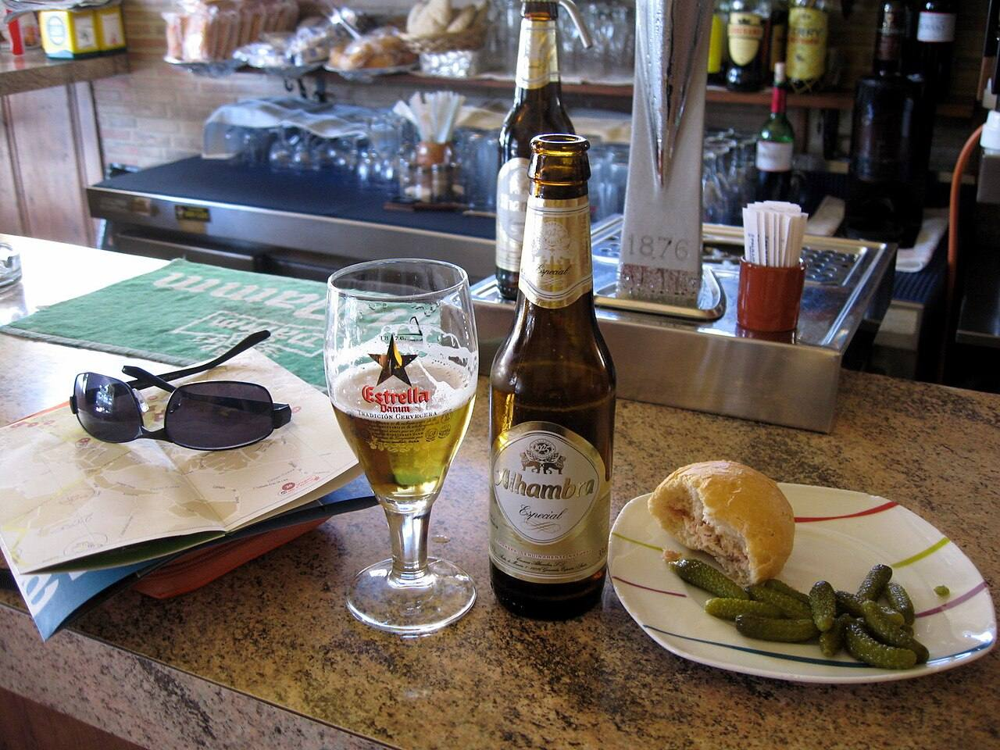
飲み物1杯ごとに小皿が無料で付くグラナダの習慣
食べられる店：Taberna Casa Enrique（カサ・エンリケ） ／ Los Diamantes（Plaza Nueva店） ／ Bodegas Castañeda（ボデガス・カスタニェーダ）
詳しく 通年。グラナダの習慣
"Una caña y un refresco, por favor"（ウナ・カーニャ・イ・ウン・レフレスコ、ポル・ファボール）
グラナダのバルでは、ビールやワイン、ソフトドリンクを1杯頼むたびに小皿料理（タパス）が無料で付いてきます。中身は店が決め、おかわりのたびに変わります。3〜4杯で軽い食事になるので、アルハンブラ前の昼にちょうど良い量です。
日程の店 Taberna Casa Enrique（カサ・エンリケ） 料理のイメージ 1/2（土） 昼
1870年創業、グラナダ最古級の小さな酒場
ヌエバ広場から徒歩約10分（目安）
予約不要 地図
詳しく 注文前にメニューで料金を確かめてください
入りやすいが狭い（カウンター中心・奥にテーブル）
1/2（土） · 土曜の通常営業 13:00-16:00。年始の営業は行く前に確かめてください 出典 （9/25 金曜日確認）
通常 · 月〜土 13:00-16:00, 20:00-23:30、日曜休み 出典 （9/25 金曜日確認）
公式
Casa Enrique。1870年創業のタパスの店。土曜も営業（Acera del Darro 8）
ひとこと 13:00の開店に合わせて入ると座りやすいです。飲み物を頼むとタパス（小皿）が付くのがグラナダ流。生ハムやチーズを1〜2皿追加して分ければ、アルハンブラ前の昼には十分です。 満席なら：ヌエバ広場周辺の Los Diamantes（揚げた魚）や Bodegas Castañeda（生ハム・チーズ）へ。
代わりの店 Bodegas Castañeda（ボデガス・カスタニェーダ） 料理のイメージ 予定外の候補
樽と生ハムが下がる老舗酒場。揚げ物少なめの無料タパス
ヌエバ広場から徒歩2分（エルビラ通りの角）
予約不要 地図
詳しく 注文前にメニューで料金を確かめてください
入りやすい（立ち飲み中心）
1/2（土） · 毎日 11:30-16:30, 19:30-翌1:30 出典 （9/25 金曜日確認）
通常 · 毎日 11:30-16:30, 19:30-翌1:30が目安。行く前に店へ電話で確かめてください 出典 （9/25 金曜日確認）
ひとこと 飲み物ごとに無料のタパス（パテ、チーズ、生ハムの小さなパンなど）が付きます。揚げ物が少なめなので、Los Diamantes（ロス・ディアマンテス） より軽く済ませたい時向き。生ハムとチーズの盛り合わせ（tabla）を1皿追加すれば3人の昼になります。
Los Diamantes（Plaza Nueva店） 料理のイメージ 予定外の候補
1942年創業。飲み物に揚げたての魚が付く人気バル
ヌエバ広場に面する／アルバイシン散策の出口
予約不要 地図
詳しく 注文前にメニューで料金を確かめてください
入りやすいが混む（立ち飲み中心・昼のピーク前推奨）
1/2（土） · 12:00-16:30, 20:00-24:00（店舗で差あり） 出典 （9/25 金曜日確認）
通常 · 利用する店舗に、行く前に営業時間を尋ねてください 出典 （9/25 金曜日確認）
公式
ひとこと ビールやソフトドリンクを頼むと、揚げたエビやイワシなどのタパスが無料で付きます。一杯ごとに中身が変わります。揚げ物中心なので、胃が疲れている日は向きません。Casa Enrique（カサ・エンリケ） が満席のときの第一候補。
軽く済ませたいとき Bodegas Castañeda
トレド 名物 トレドのマサパン アーモンドと砂糖を練って焼いたトレドの修道院菓子
食べられる店：Santo Tomé（マサパン店）
詳しく 通年。とくにクリスマスの菓子
"Una caja pequeña de mazapán, por favor"（ウナ・カハ・ペケーニャ・デ・マサパン、ポル・ファボール）
すりつぶしたアーモンドと砂糖を練り、小さな形にして表面を焼いた菓子。トレドを代表する名物で、クリスマスの時期によく食べられます。日持ちするので、おみやげにも向きます。
代わりの店 Santo Tomé（マサパン店） 予定外の候補
1856年創業、トレド名物マサパンの老舗菓子店
トレド旧市街の中心ソコドベール広場
予約不要 地図
詳しく 注文前にメニューで料金を確かめてください
入りやすい（持ち帰りの菓子店）
1/2（土） · トレドへ行く場合は、店頭で営業時間を確かめてください 出典 （9/25 金曜日確認）
公式
ひとこと 1/2（土） にグラナダの列車が取れずトレドになった場合の立ち寄り先。アーモンドと砂糖の練り菓子「マサパン」は小箱で買えて、ホテルでのおやつや日本へのおみやげに。ソコドベール広場の店が観光の動線上にあります。
観光 バルセロナ バルセロナ大聖堂とゴシック地区・ボルン 13羽のガチョウと屋上の眺め。中世の迷路を海の教会まで
12/26（土） 11:30-13:15・12/26（土） 15:30-17:00
所要 大聖堂1時間45分・午後の街歩き1時間30分
予約不要 詳しく 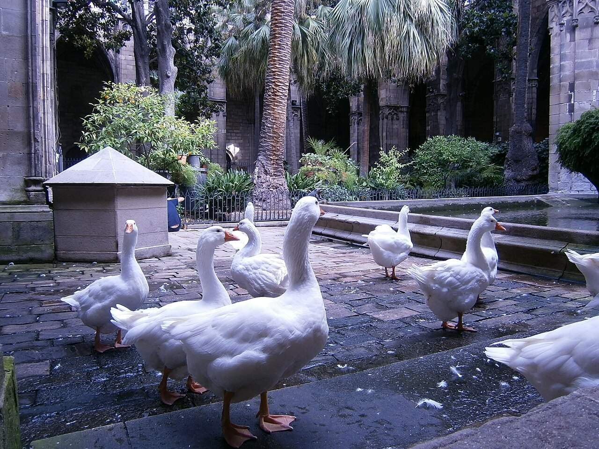
回廊の池のそばにいる白いガチョウ 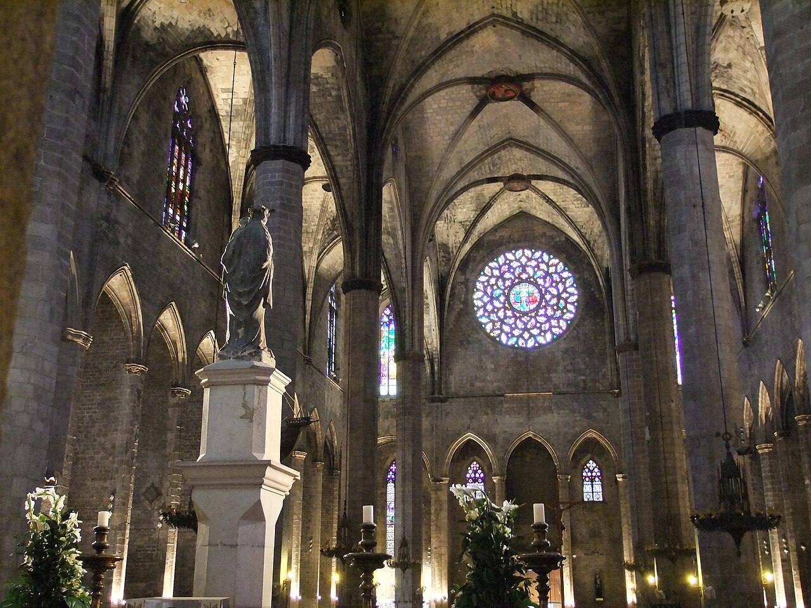
サンタ・マリア・デル・マルの柱と広い身廊 現地で見つけるもの 見どころ 大聖堂の屋上テラス：尖塔と鐘楼に囲まれて旧市街を見下ろす（雨の日は屋上には出られず、上の階だけ見学可） 回廊：ヤシとオレンジの木、ガチョウの池。大聖堂の中でいちばん空気がやわらかい場所 王の広場（Plaça del Rei）：中世の王宮に囲まれた石の広場。階段に腰かけて一息 ボルン地区の細い路地と、その先にそびえるサンタ・マリア・デル・マル サンタ・マリア・デル・マルの塔と屋上（€8のチケットに含まれる。らせん階段なので体調と相談） 物語 いまの大聖堂の工事が始まったのは1298年5月1日。完成までおよそ150年かかりました。ところが正面のファサードは長いあいだ質素な壁のままで、いま見る豪華な正面と両脇の塔は、19世紀末以降のものです。実業家マヌエル・ジローナが工事費を出すと申し出て、15世紀の設計図をもとに建てられました。中央の塔の完成は1913年です。つまり「中世の大聖堂」の顔は、じつは20世紀の作品です。
足もとの歴史はもっと古く、ここには4世紀のキリスト教会堂があり、11世紀にはロマネスクの大聖堂が建てられました。その上に重ねるようにして、いまのゴシックの大聖堂ができています。
大聖堂の守護聖人のひとりが聖エウラリア。4世紀初めの迫害で殉教したバルセロナの少女です。回廊で暮らす13羽の白いガチョウは、伝承では彼女の年齢を表しています。ガチョウを見たら、ここが「祈りの場所」でもあることを思い出してください。
聖歌隊席の上には、色あざやかな紋章がずらりと並びます。1519年、皇帝カール5世がヨーロッパの名門騎士団「金羊毛騎士団」の会合をこの大聖堂で開いた記念です。当時のバルセロナが、ヨーロッパの王侯が集まる舞台だったことが分かります。
大聖堂から王の広場を抜けて海側へ歩くと、ボルン地区。その中心がサンタ・マリア・デル・マル（海の聖母教会）です。公式サイトによれば、殉教した聖エウラリアの遺骨は877年、この「海のサンタ・マリア」で見つかったとされます。港の人々の信仰を集めた教会で、大聖堂の豪華さとは違う、柱の少ない広い空間が魅力です。二つの教会を続けて歩くと、「王と司教の街」と「港と職人の街」という、バルセロナの二つの顔が見えてきます。
バルセロナ大聖堂（12/26 土曜日は午後に閉まるので午前に見学。入場券の販売は13:30まで）
王の広場（Plaça del Rei）→ ボルン地区とサンタ・マリア・デル・マル
営業と券 12/26（土） · 大聖堂：観光入場券の販売 09:30-13:30／14:00-17:45 は閉堂／17:45 からミサのために開く（観光見学ではない）。回廊 10:00-13:30・16:30-19:15 出典 （9/25 金曜日確認）
12/26（土） · サンタ・マリア・デル・マル：月〜土の見学時間 10:00-18:00（最終入場17:30）。祝日は時間が変わる場合があるので、行く前に公式サイトで確かめてください 出典 （9/25 金曜日確認）
大聖堂 €16（屋上・聖歌隊席・参事会室などを含む）。サンタ・マリア・デル・マル €8（塔・屋上テラスを含む）。どちらも公式
公式
行き方 ホテル（Oriente Atiram）からランブラス通りを上り、ゴシック地区へ徒歩（目安10〜15分・地図アプリで確認）
知っておくこと いちばん大事：12/26（土）（聖ステバンの日）は大聖堂が14:00〜17:45閉まります 。観光券の販売は09:30〜13:30。大聖堂は11:30〜13:15に見学 します。ホテルで休んでから、15:30に王の広場→ボルン→サンタ・マリア・デル・マルへ祝日の開館時間は変わることがあるので、12月に公式サイトで確かめてください 回廊だけなら12/26（土）は16:30〜19:15にも入れます。夕方にガチョウを見に戻る手もあります サンタ・マリア・デル・マルは見学時間外なら無料で入れます。12/26（土）は祝日なので、行く前に開館時間を確かめてください 教会なので肩とひざが隠れる服装で。ミサ中は見学を控え、写真は静かに 大聖堂の入口：正面（Pla de la Seu）。車いす・足が不安な人は聖エウラリア門（Bisbe通り）から入れます 旧市街の路地はスリが多い場所。バッグは体の前に サグラダ・ファミリア 没後100年に完成したイエスの塔。静かな朝の森の聖堂へ
12/28（月） 09:00-11:30
所要 2時間30分
予約済み 詳しく 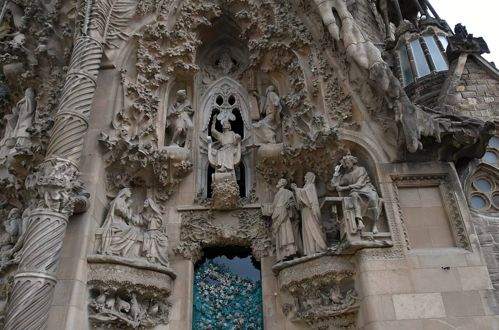
生誕のファサードの彫刻 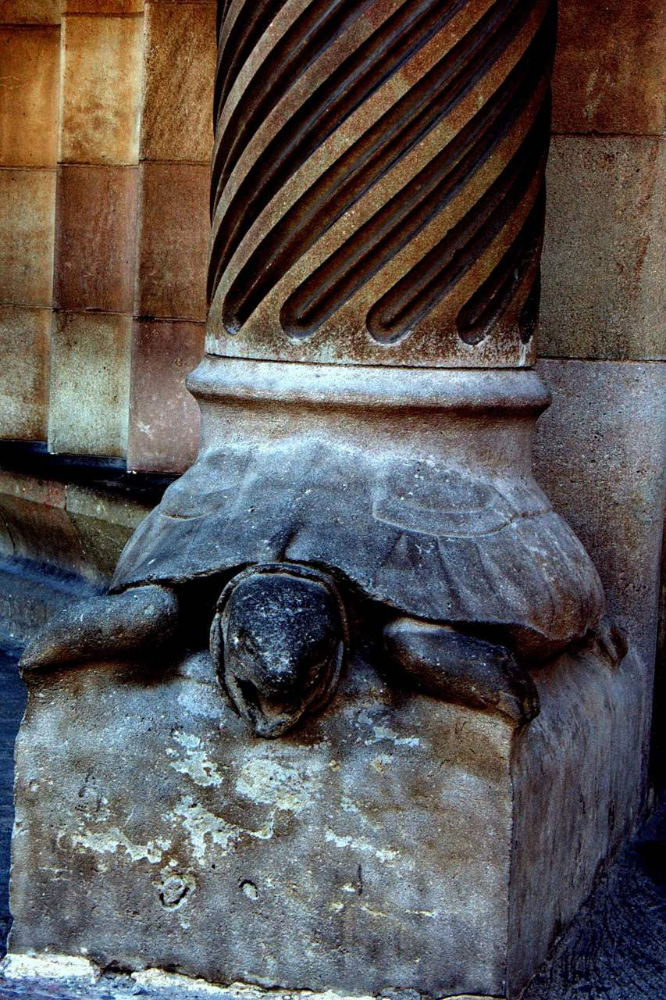
生誕のファサードの柱の根元のカメ 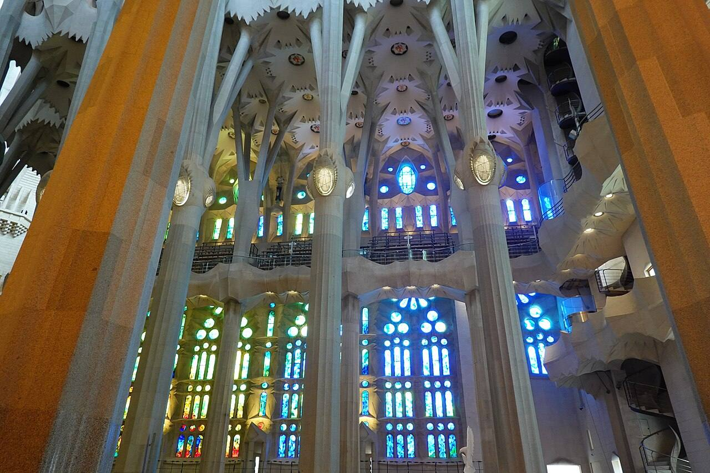
ステンドグラスの色の光 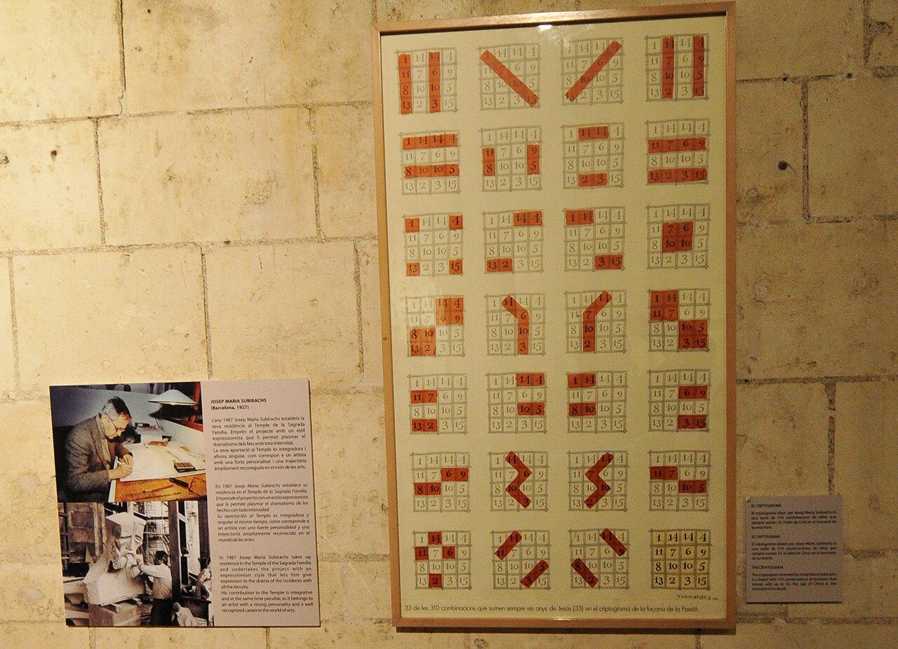
受難のファサードの数字の魔方陣 現地で見つけるもの 見どころ 森のような柱と天井。柱は上で枝分かれし、天井は葉の重なりのように見えます。 ステンドグラス。東側は青と緑、西側は赤とオレンジ。朝は東の光が差し込みます。 生誕のファサードの塔。エレベーターで上がり、らせん階段で歩いて下ります。東側の街と海の方角が見えます。 受難のファサード。ガウディの死後、彫刻家スビラックスが手がけた、角ばった硬い表現です。 地下の博物館。紐とおもりで形を決めた「逆さ吊り模型」の復元や、ガウディの模型があります。 物語 1882年3月19日、礎石（いしずえの石）が置かれました。翌1883年、31歳のガウディが最初の建築家から仕事を引き継ぎ、計画を大きく描き直します。以後43年、彼はこの教会に人生をささげました。晩年は他の仕事を断り、現場の工房に住み込んだと伝えられます。
1926年6月7日、ガウディはミサに向かう途中で路面電車にはねられました。身なりが質素で、はじめは誰だかわからなかったといいます。6月10日に亡くなり、いまはこの教会の地下聖堂に眠っています。生前に完成した塔は、生誕のファサードの1本だけでした。
「私の依頼主は急いでいない」とガウディは語ったと言われます。依頼主とは神のことです。ここは「贖罪（しょくざい）教会」で、寄付で建てる教会です。お金が集まったぶんだけ進むため、時間がかかりました。1936年の内戦では工房が焼かれ、図面や石膏の模型が壊されました。後の人たちは破片を拾い集め、形を読み解いて工事を続けました。
2010年、教皇ベネディクト16世が聖堂を献堂し、格の高い教会「バシリカ」になりました。2021年には聖母マリアの塔の上に星がともりました。2026年2月、中央の「イエス・キリストの塔」に十字架の上の腕が取り付けられ、高さ172.5m、世界一高い教会になりました。ガウディの没後ちょうど100年の2026年6月10日には、ミサに続いてこの塔の祝福と落成の式が行われました。
「人の作るものは、神の作った山（モンジュイックの丘）より高くしない」ので、この高さになったとも言われます（言い伝え）。私たちは、その完成したばかりの塔を見上げる最初の冬の旅人の一人です。
09:15 生誕のファサードの塔に上る。入口はマリーナ通り側
営業と券 12/28（月） · 09:00-18:00 出典 （9/25 金曜日確認）
入場＋塔（生誕のファサード）は一般€36・65歳以上€28・30歳未満€34（公式）。私たちは 09:00 入場・09:15 塔の券を購入済み。
公式
行き方 ホテル（Oriente Atiram）から地下鉄 L3 Liceu（リセウ）→Diagonal（ディアゴナル）、L5 に乗り換えて Sagrada Família（サグラダ・ファミリア） 駅まで約25分
知っておくこと 入口は生誕のファサード側の一般入口（マリーナ通り側）。券の時間帯に遅れると入れません。 入口で手荷物検査があります。一度出ると再入場できません。 塔には荷物を持って上がれません。リュックやバッグは塔の前のロッカーに預けます。 天気が悪いと塔は閉まります。そのときは塔の分だけ返金されます。 09:00〜10:00は「静かな時間」。音声ガイドはイヤホンで聞きます。公式アプリ（19言語）を前夜にダウンロードし、イヤホンを持参しましょう。 透ける服や、丈の短すぎる服では入れません。聖体礼拝堂では肩を出さないようにします。 中での飲食はできません。 塔の階段は細く、下りだけでもひざを使います。手すりをつかんでゆっくり。 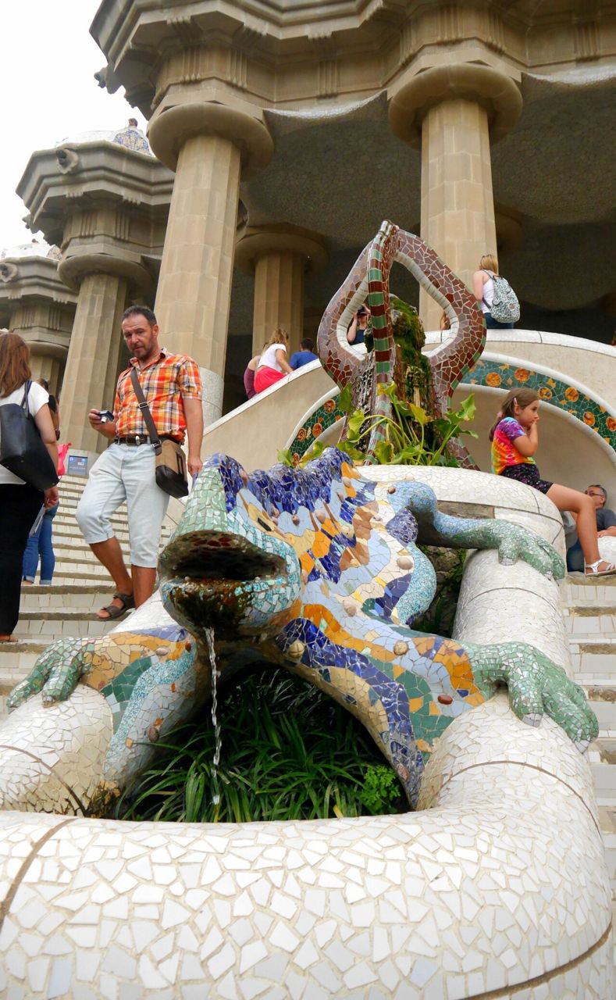
グエル公園 売れ残った高級住宅地が、トカゲの守る街の庭になった
12/28（月） 12:30-13:30
所要 1時間
要予約 12/1（火） 詳しく 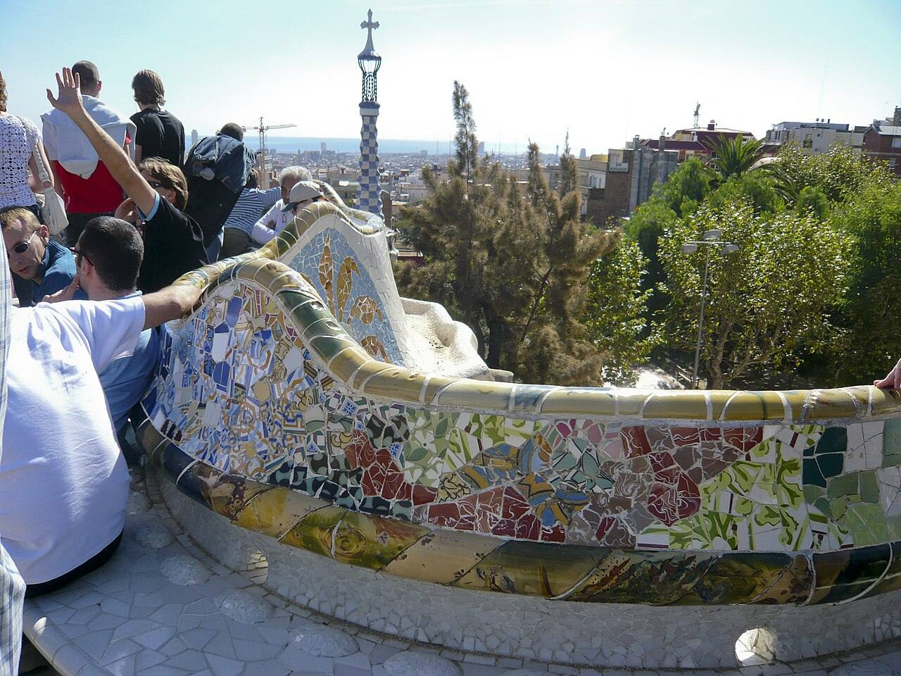
広場の波打つタイルのベンチ 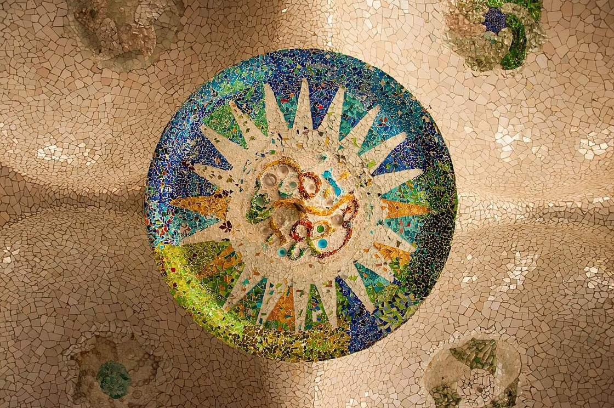
多柱室の天井の丸いモザイク 現地で見つけるもの 見どころ 広場から見下ろすバルセロナの街と海。 割れたタイルを貼りつめた模様（トレンカディス）。ベンチは一枚ごとに色の組み合わせが違います。 ヤシの木のように傾いた石の柱が続く高架の道。 自然の坂をそのまま生かした道。まっすぐな所がほとんどありません。 物語 ここはもともと公園ではなく、お金持ちのための住宅地になるはずでした。
施主のエウゼビ・グエルは、イギリスの「田園都市」にあこがれていました。だから名前もスペイン語の「Parque」ではなく、英語の「Park」です。1900年、ガウディとともに、街を見下ろす丘で工事が始まりました。約60の区画に家を建て、市場や広場、道、水の仕組みまで用意する計画でした。
多柱室は、住人のための市場になる予定でした。上の広場に降った雨は、柱の中を通って地下の貯水槽に集まります。見た目の楽しさの裏に、よく考えた仕組みが隠れています。広場のベンチのタイルは、ガウディの協力者ジュジョールが手がけました。「職人を座らせて、体の形に合うカーブを決めた」という話もあります（言い伝え）。
ところが、家はほとんど売れませんでした。当時の中心街から遠く、坂も急だったためです。実際に住んだのは、ガウディ自身とグエルら、ごくわずか。ガウディは1906年からここに住み、父と姪（めい）と暮らしました。1914年に工事は止まり、グエルが亡くなったあと、市が土地を買い取ります。1926年、ここは誰でも入れる公園になりました。
失敗した住宅地が、いまは世界遺産の公園です。ベンチに座ったら、「ここが高級住宅地の広場だったら」と想像してみてください。
グエル公園。時間指定券が必須
営業と券 12/28（月） · 09:30-17:30（最終入場16:30） 出典 （9/25 金曜日確認）
一般€18・65歳以上€13.50（公式・税込）。時間指定券のみで、事前にオンライン購入が必要。
公式
行き方 サグラダ・ファミリアからタクシーで約20分。地下鉄なら L3 Lesseps（レセップス） 駅から徒歩約20分（エスカレーターのある入口へ）
知っておくこと 券の時刻から30分以内に入場しないと入れません。中では好きなだけいられますが、一度出ると再入場できません。 坂と段差が多い場所です。歩きやすい靴で。雨の日はタイルがすべりやすくなります。 雨の日は、屋外のグエル公園は短めに切り上げます。このあと行くカサ・ミラも時間指定の券なので、回る順番は変えません。 タクシー乗り場はカルメル通り（Carretera del Carmel）側にあります。 公園内の「ガウディの家博物館」は現在休館中です（サグラダ・ファミリア公式の案内）。 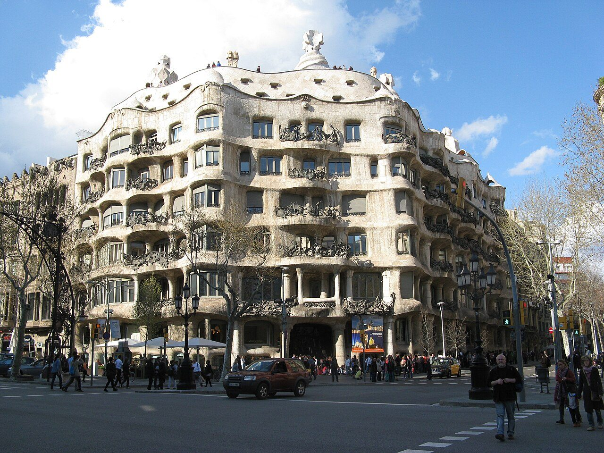
カサ・ミラ（ラ・ペドレラ） 「石切場」とからかわれた家。屋上に兜の煙突が並ぶ
12/28（月） 16:00-17:00
所要 1時間〜1時間30分
要予約 12/1（火） 詳しく 兜をかぶった兵士のような屋上の煙突 屋根裏のクジラの肋骨のようなレンガのアーチ
現地で見つけるもの 見どころ 直線のない石の外壁。波打つ崖のようです。 屋上の起伏。坂と階段を上り下りしながら、煙突の間を歩きます。 屋根裏のガウディ展示。サグラダ・ファミリアで見る形の仕組み（逆さ吊りのアーチ）が、ここでもわかります。 1900年代初めの暮らしを再現した「住人の部屋」。 物語 1906年、実業家のペレ・ミラと妻ロゼール・セギモンが、ガウディに集合住宅を頼みました。完成は1912年。これがガウディ最後の「教会以外の建物」になりました。
完成前から、町の人は驚きました。波打つ石の壁は、まるで石を切り出した崖。人々は「ラ・ペドレラ（石切場）」とあだ名をつけ、新聞は風刺画でからかいました。そのあだ名が、いまでは正式な呼び名の一つです。
見た目以上に新しかったのは中身です。建物を柱で支えるので、部屋を仕切る壁を自由に動かせます。住む人が間取りを変えられる、当時としては珍しい造りでした。地下には馬車を入れる場所まであったといいます。
屋上には大きな聖母マリアの像を置く計画もありました。けれど1909年、バルセロナで教会が次々に焼かれる騒ぎ（悲劇の一週間）が起き、施主は像をあきらめたと伝えられます。ガウディは施主と意見が合わず、完成前に現場を離れました。設計料をめぐる争いでは、受け取ったお金を修道院に寄付したとも伝えられます。
この後、ガウディはほかの仕事を受けず、サグラダ・ファミリアに打ち込みました。屋上から、その塔を探してみてください。
屋上の煙突が、映画「スター・ウォーズ」の兵士のヘルメットの元になったという話もあります（確かな根拠はない言い伝え）。
カサ・ミラ。時間指定の券
営業と券 12/28（月） · 09:00-20:30（年末年始の特別時間） 出典 （9/25 金曜日確認）
「La Pedrera Essential」一般€29・65歳以上€22（公式）。中庭・住居・屋根裏・屋上を回り、日本語のビデオガイド付き。
公式
行き方 ホテルから地下鉄 L3 Liceu（リセウ）→Diagonal（ディアゴナル） 駅すぐ。カサ・バトリョへは徒歩約10分
知っておくこと 雨の日は安全のため屋上が閉まります（公式）。天気予報を前日に確認しましょう。 屋上は段差と坂が続き、車いすでは回れません。エレベーター出口の台から全体を見られます。 12/25（金）は休館。12/28（月）は年末年始の特別時間で開いています。 見学は自分のペースで回る方式で、1時間〜1時間30分が目安です。 屋上は風が強く寒いので、上着を持って上がりましょう。 カサ・バトリョ 竜の背の屋根と骨のバルコニー。光を配る青いタイル
12/28（月） 17:15-18:15
所要 1時間〜1時間15分
要予約 12/1（火） 詳しく 屋上の煙突と「竜の背」の屋根 仮面や骨のように見えるバルコニー 吹き抜けの壁の青いタイル
現地で見つけるもの 見どころ 主階の大きな窓から見るグラシア通り。 扉や手すりの木の取っ手。手の形になじむ曲線になっています。 裏手の中庭とテラス。表とはまた違う、明るい色のタイルです。 屋根裏の白いアーチの通路。 日本語の音声ガイド（15言語）。 物語 1904年、繊維業で成功したジュゼップ・バトリョが、グラシア通りに持っていた古い建物の建て替えをガウディに頼みました。ガウディは取り壊さず、「改装」で生まれ変わらせることを選びます。完成は1906年。
表の壁は、光る水面のように色ガラスとタイルがちりばめられています。バルコニーは仮面のよう、柱は骨のよう。町の人はこの家を「骨の家」とも呼びました。
屋根は竜の背中に見えます。カタルーニャの守護聖人・聖ジョルディは、竜を退治してお姫さまを救ったとされる人物です。十字架の塔を聖ジョルディの槍、屋根を倒された竜と読む解釈がよく語られます。ただし、ガウディ自身が説明を残したわけではありません。
この一角は「不和のブロック（イリャ・デ・ラ・ディスコルディア）」と呼ばれます。同じ時代の人気建築家たちの家が並び、デザインを競い合っているようだからです。すぐ隣のカサ・アマトリェールは、階段状の屋根。ガウディの曲線と比べると違いがよくわかります。
中の吹き抜けは、見た目だけでなく光の設計です。上は濃い青、下は白に近いタイル。窓の大きさも階ごとに変えています。電気の照明が乏しい時代に、どの部屋にも自然の光を届ける工夫でした。
カサ・バトリョ。時間指定の券
営業と券 12/28（月） · 09:00-19:15（一般見学・毎日営業） 出典 （9/25 金曜日確認）
一般見学は€29から（公式・オンライン）。いちばん安い「Blue」は屋上なし。屋上に出るなら「Silver」以上。12歳以下は無料。
公式
行き方 カサ・ミラから徒歩約10分。ホテルからは地下鉄 L3 Liceu（リセウ）→Passeig de Gràcia（グラシア通り）
知っておくこと ロッカーはありません（公式）。大きな荷物はホテルに置いてきましょう。 券の時刻より前には入れません。時刻から15分以内に入場します。 屋上を見たい場合は「Silver」以上の券を選びます。 窓口で買うとオンラインより高くなります。 冬の夕方は暗くなるのが早いので、表の壁の写真は入場前に撮るのがおすすめです。 ブケリア市場 修道院の焼け跡に生まれた市場。鉄の屋根の下で朝の買い物
12/30（水） 09:00-09:40
所要 45分
予約不要 詳しく 店先に山積みの果物 ハモン（生ハム）が吊られた肉の店
現地で見つけるもの 見どころ 朝の09:00台は地元の人の買い物の時間。観光客が増える前の、市場らしい顔が見られます マドリードへの列車用に、果物・チーズ・生ハムの小分けパックを買う（出発前の最後の買い物） 市場の中のバル（カウンター）で、立ったまま一杯のコーヒーやカバ 建物の外側、裏のガルドゥーニャ広場側の新しいファサード（2015年）も見比べると面白い 物語 市場の歴史は、建物よりずっと古い道ばたから始まります。公式の年表によれば、1217年にはランブラスの「ブケリア広場」に肉を売る台があった記録が残っています。当時のランブラスは城壁の外。近くの村の農家が野菜や家畜を運んで売る、露天の市でした。
転機は1835年。夏の暴動のなかで、この場所に建っていた聖ヨセフ（サン・ジュゼップ）修道院が焼かれます。市は修道院の跡地を市場にすることを決め、1840年3月19日、聖ヨセフの日に最初の石が置かれました。市の案内によれば、その石の下には金貨などが埋められたそうです。「この市場が富を運びますように」という願いを込めて。正式名が「サン・ジュゼップ市場」なのはこのためです。
最初は屋根がなく、店は日よけの布で雨風をしのいでいました。1871年のクリスマスにはガス灯がともり、1914年、ようやく鉄の大屋根がかかります。入口の鉄のアーチもこの頃の作品。ちょうどガウディたちのモデルニスモが花開いた時代です。
その後も1985年、1998〜2001年と改修が重ねられ、2015年には裏側に新しい入口ができました。800年前の露天市、修道院の焼け跡、鉄とガラスの近代建築。いま目の前にある屋台の列は、そのすべての上に立っています。旅の最後の朝、バルセロナの台所で手に取る一品は、長い歴史の最新ページです。
ブケリア市場
営業と券 12/30（水） · 08:00-20:30（月〜土の通常営業。案内所は09:00-15:00） 出典 （9/25 金曜日確認）
入場無料
公式
行き方 ホテル（Oriente Atiram, La Rambla 45）からランブラス通りを北へ歩いてすぐ（同じ通りの91番地）
知っておくこと 日曜は休み（月〜土営業）。12/30（水）は通常営業の日です 市場は地元の人の買い物の場。通路の真ん中で立ち止まらず、写真を撮る前にひと声かけると喜ばれます 商品に素手で触らない。欲しいものは指さしで伝えればOK 人が多い場所なのでスリに注意。リュックは前に 列車で食べるなら、切ってもらえるもの・汁が出ないものを選ぶと楽 09:40には市場を出て、音楽堂（10:00開始）へ向かう。歩いて向かう場合は地図アプリで時間を確認 カタルーニャ音楽堂 天井から太陽が降る、世界遺産になった唯一のコンサートホール
12/30（水） 10:00-10:50
所要 50分（ガイドツアー）
要予約 12/1（火） 詳しく 天井の「太陽」のステンドグラスの天窓 音楽堂の新館側の外観
現地で見つけるもの 見どころ コンサートホール：昼間は自然光が入る、世界でもまれなホール。ガイドの案内で舞台に上がれることもあります（空き状況しだい） ルイス・ミリェット・ホール：花模様のステンドグラスと、モザイクの柱が並ぶバルコニー ファサード（正面）：赤れんがとモザイクの柱。2階の高さにパレストリーナ・バッハ・ベートーヴェン、角を曲がるとワーグナーの胸像 フォワイエ（1階ロビー）：緑の陶器と花のタイルで飾られたアーチ。いまはカフェ 物語 この建物を建てたのは、国や貴族ではなく市民でした。合唱団「オルフェオ・カタラ」の本拠地として、寄付を集めて1905年から1908年にかけて建てられたのです。設計はリュイス・ドメネク・イ・モンタネール。ガウディと同じ時代のモデルニスモの建築家で、同じ年（1997年）に世界遺産になったサン・パウ病院も彼の作品です。
ドメネクは、陶芸家・彫刻家・ステンドグラス職人など多くの職人をまとめ、「すべての芸術をひとつに」という考えでホールを作りました。昼間の見学で驚くのは明るさです。壁の多くがガラスで、天井の中央からは大きなステンドグラスの「太陽」が光を落とします。窓のないホールがふつうだった時代に、音楽を光の中で聴く場所を作ったのです。
舞台の周りをよく見てください。片側には合唱運動の父アンセルム・クラベー、反対側にはベートーヴェン。その上からはワーグナーのワルキューレが駆け下りてきます。カタルーニャの歌と、ヨーロッパの大きな音楽を、ひとつの舞台に並べる。そこに、自分たちの文化に誇りを持ちながら世界とつながろうとした当時の人々の思いが表れています。
外の角にある彫刻「カタルーニャ民謡」には、船乗りや農民、老人、子どもたちが刻まれています。音楽は特別な人のものではなく、みんなのもの。市民の寄付で建った建物に、いかにもふさわしい主題です。1997年12月4日、音楽堂はコンサートホールとして唯一、ユネスコの世界遺産に登録されました。
カタルーニャ音楽堂。世界遺産のガイドツアー
営業と券 12/30（水） · ガイドツアー 09:00-15:30 の間に実施（約50分。開始時刻は購入時に選ぶ） 出典 （9/25 金曜日確認）
ガイドツアー一般 €24、65歳以上 €20、35歳未満 €20（公式）。窓口で買うと1枚につき€2高くなる
公式
行き方 ホテル（Oriente Atiram）から地下鉄 L3 Liceu（リセウ） → Catalunya（カタルーニャ） で L1 に乗り換え Urquinaona（ウルキナオナ）、または徒歩（どちらも地図アプリで時間を確認）
知っておくこと 公式の案内では「時間厳守。ツアー開始後は入場できません」。10:00の回なら09:45には入口へ ガイドツアーの言語 ：カタルーニャ語・スペイン語・フランス語・英語・イタリア語・ドイツ語・中国語（公式ページ。日本語はなし）。予約時に英語の回を選ぶのが現実的です券の購入後の変更・払い戻しはできません（公式） クロークと荷物預かりはありません。スーツケースはホテルに預けてから来ます 館内はエレベーターあり。全フロアに行けます 館内のリハーサルや公演の都合で、見学コースが変わることがあります（返金なし） 年齢割引は窓口で証明書類の提示を求められることがあります。パスポートを持参 カサ・ビセンス ガウディ最初の家。庭の黄色い花がタイルになった
予定外の候補
所要 1時間〜1時間30分
当日券 詳しく 鳥が飛ぶように描かれた天井 外壁に並ぶ花のタイル
現地で見つけるもの 見どころ 30代前半のガウディが手がけた、はじめての住宅。のちの曲線はまだ少なく、色とタイルで勝負しています。 スペインのイスラム美術（ムデハル様式）を取り入れた、東洋的な雰囲気。 最初の家と、同じ日に見る後期の作品（カサ・ミラ）を比べると、ガウディの変化がよくわかります。 物語 1883年、株式仲買人のマヌエル・ビセンスが、グラシアの土地に夏の家を建てることにしました。頼んだ相手は、建築学校を出てまだ数年の若いガウディでした。サグラダ・ファミリアを引き継いだのと同じ年です。
ガウディは敷地をよく観察しました。そこには黄色いマリーゴールドが咲き、小さなヤシが生えていたといいます。彼はその花をタイルに、ヤシの葉を鉄の門に写しとりました。「自然をよく見て、形をもらう」。後のガウディを貫く考え方が、最初の家にすでに表れています。
内装には、スペインに残るイスラム建築の影響が強く出ています。とくに喫煙室の天井は、洞窟の鍾乳石（しょうにゅうせき）のような細かい飾りでおおわれています。当時のヨーロッパで流行していた「東洋へのあこがれ」も感じられます。
この家は長いあいだ個人の住まいでした。持ち主が変わり、増築もされながら住み継がれてきました。一般公開されたのは2017年と、ガウディ作品の中ではかなり新しい公開です。
営業と券 12/28（月） · 09:30-18:00（冬季。最終入場は購入時に確かめてください） 出典 （9/25 金曜日確認）
12/30（水） · 09:30-18:00（冬季。最終入場は購入時に確かめてください） 出典 （9/25 金曜日確認）
一般€21〜22ほど。65歳以上は割引あり。購入前に公式サイトで当日の料金を確かめてください。
公式
行き方 ホテルから地下鉄 L3 Liceu（リセウ）→Fontana（フォンタナ）、駅から歩いてすぐ。グエル公園と同じグラシア地区
知っておくこと 日程にない候補です。12/28（月） の昼食の店（グラシア地区）に近いので、時間が余ったときの選択肢になります。 冬の営業時間や料金は変わることがあるので、購入前に公式サイトで訪問日の案内を確かめてください。 12/25（金）は休館と案内されています。 屋上へは階段があります。 コロンブスの塔（ミラドール・デ・コロン） ホテルから坂を下ってすぐ。コロンブスの足もとから港を一望
予定外の候補
所要 30分
当日券 詳しく 塔の台座のライオン像 ランブラス通りの先に立つコロンブスの塔
現地で見つけるもの 見どころ 展望台：柱の中の小さなエレベーターで、コロンブスの足もとの半球の部屋へ。360度の眺め 北にゴシック地区と大聖堂、遠くにサグラダ・ファミリアの塔。南にモンジュイック、東に港と海 塔の下の広場：ランブラス通り・港・海辺の散歩道が集まる交差点 物語 コロンブスの塔は、1888年のバルセロナ万国博覧会にあわせて建てられました。高さ60mの鉄の柱と、233トンの鉄でできた台座。その上に立つ高さ7mのブロンズ像は彫刻家ラファエル・アチェの作品です。港と海岸線を造り直す工事の、仕上げを飾る記念碑でもありました。
なぜバルセロナにコロンブスなのか。アメリカ大陸への最初の航海から戻ったコロンブスは、この町でカトリック両王（イサベル女王とフェルナンド王）に迎えられ、航海の報告をしました。塔はその帰還を記念しています。
像は腕をまっすぐ海へ向けています。けれど、その先にあるのはアメリカではなく地中海。バルセロナ観光局も「多くの人が驚く点」と紹介しています。指先がどこを指しているか、下から当ててみるのも楽しみのひとつです。
塔が立つ広場の正式な名前は「平和の門広場（Portal de la Pau）」。第二次世界大戦の終わりを記念した名前ですが、コロンブス像があまりに有名なので、みんな「コロン広場」と呼んでいます。ランブラス通りの始まりにして終わり。滞在中、何度も目にするこの塔に一度上っておくと、歩いた町の地図が頭の中でつながります。
営業と券 12/26（土） · 08:30-14:30（エレベーターの最終は閉館30分前） 出典 （9/25 金曜日確認）
12/27（日） · 08:30-14:30 出典 （9/25 金曜日確認）
12/28（月） · 08:30-14:30 出典 （9/25 金曜日確認）
12/29（火） · 08:30-14:30 出典 （9/25 金曜日確認）
12/30（水） · 08:30-14:30 出典 （9/25 金曜日確認）
大人 €7.50、割引 €4.50（4〜12歳・65歳以上の年金受給者）。バルセロナ市公式
公式
行き方 ホテル（La Rambla 45）からランブラス通りを海の方へ下った突き当たり。徒歩ですぐ
知っておくこと 9/25（金） 時点、公式の販売ページに「一時的に運休（約2週間の見込み）」の告知 があります。12月には再開している見込みですが、行く前に運行状況を確かめてください午前のみ（14:30まで）。12/24（木）・12/25（金）・1/1（金）・1/6（水）は休み エレベーターはとても小さく、少人数ずつ上ります。待つことがあります 高い所と狭い所が苦手な人は無理をしないで。下の広場からの眺めだけでも十分 ホテルから近いので、朝の散歩や、ちょっとした空き時間の候補に モンジュイックの丘（城とロープウェイ） 港を見張った丘の城塞へロープウェイで。海と街を360度
予定外の候補
所要 2時間30分
当日券 詳しく モンジュイックのロープウェイ乗り場 港のロープウェイの鉄塔
現地で見つけるもの 見どころ モンジュイック城：バルセロナを360度見渡す城壁の上 モンジュイックのロープウェイ：公園から城まで、丘の斜面を空中散歩 港のロープウェイ（Transbordador Aeri del Port）：モンジュイック側の Miramar（ミラマール） 駅と、バルセロネータの San Sebastián 塔を結ぶ。途中の Jaume I（ジャウマ・プリメ） 塔は閉鎖中（公式） 丘の上から見る地中海と港。夕方は街に明かりがともる時間 物語 城ができる前、丘の上には見張り台がありました。1073年の記録に残る「灯台」で、船乗りが一人住み、敵の船を見つけると昼は帆、夜は火で町に知らせたといいます。
1640年、カタルーニャの反乱が起きると、スペイン王フェリペ4世の艦隊が迫ります。バルセロナの市議会は丘の防衛を決め、住民総出でわずか30日で小さな四角い砦を築きました。これがモンジュイック城の始まりです。いま見る姿は18世紀、軍事技師フアン・マルティン・セルメーニョの設計で1753〜1779年に造り直されたものです。
城は町を守るだけではありませんでした。1842年12月3日、エスパルテロ政権は反乱の罰として城から町を12時間砲撃し、1,014発の砲弾を撃ち込みます。その後は政治犯の監獄、軍事裁判と処刑の場に。スペイン内戦のあと、カタルーニャ州首相リュイス・クンパニスもここで処刑されています。町を見下ろす城は、長く人々にとって恐れの象徴でもあったのです。
2007年、城は国から市へ返されることが決まり、2008年に市民の祝祭が開かれました。いまは誰もが上って街を眺められる場所です。見張りと威圧の場所が、景色を楽しむ場所に変わった。その変化自体が、この丘のいちばんの物語かもしれません。
営業と券 12/26（土） · 城 10:00-18:00（窓口は17:30まで）／ロープウェイ 10:00-18:00 出典 （9/25 金曜日確認）
12/27（日） · 城 10:00-18:00（日曜15:00以降は入場無料）／ロープウェイ 10:00-18:00 出典 （9/25 金曜日確認）
12/28（月） · 城 10:00-18:00／ロープウェイ 10:00-18:00 出典 （9/25 金曜日確認）
12/29（火） · 城 10:00-18:00／ロープウェイ 10:00-18:00 出典 （9/25 金曜日確認）
12/30（水） · 城 10:00-18:00／ロープウェイ 10:00-18:00 出典 （9/25 金曜日確認）
城 一般€12・割引€8（割引の条件は公式の一覧で確認）。ロープウェイ往復 大人€19（公式オンライン€17.10）。港のロープウェイ 片道€12.50・往復€20。すべて公式
公式
行き方 ホテルから地下鉄 L3 Liceu（リセウ） → Paral·lel（パラレル）、フニクラ（ケーブルカー）で Parc de Montjuïc（モンジュイック公園） へ上り、ロープウェイで城へ
知っておくこと 雨や休館時の代わりの候補 です。屋外が中心なので、強い雨の日には向きません城は12/25（金）と1/1（金）が休み。12/26（土）〜12/30（水）はすべて開いています 日曜（12/27 日曜日）は15:00以降無料。ただし12/27（日）はタラゴナに行く日なので、この無料の時間は使えない 城の券は公式サイトでのオンライン販売のみ、と公式に注意書きがあります。第三者の販売サイトは使わない ロープウェイの最終乗車は閉館15分前、全区間を乗るなら20分前（公式） 港のロープウェイは窓口で券を買う方式。冬の運行時間は、出発前に公式サイトで確かめてください 丘の上は風が強く冷えます。上着を1枚多く グエル邸 ホテルの目と鼻の先。星空のドームを持つグエルの館
予定外の候補
所要 1時間
当日券 詳しく 中央広間の星空のようなドーム ステンドグラスの入った放物線アーチの窓
現地で見つけるもの 見どころ 馬車ごと入れる放物線の形の門。 大広間。3階ぶんの高さがあり、パイプオルガンもあります。家族のミサや音楽会に使われました。 ホテルからいちばん近いガウディ作品。夕方の短い時間でも回れます。 物語 1886年、若いガウディに大きな仕事が来ました。繊維業で財をなしたエウゼビ・グエルが、ランブラス通りのすぐ裏に自分の館を建てたいというのです。グエルは、その後30年以上ガウディを支え続ける最大の後援者でした。
外から見ると、この館は驚くほど地味です。狭い路地に面していて、正面を大きく見せられないからです。そのかわり、ガウディは中に驚きを詰め込みました。
入口は、馬車がそのまま入れる放物線の形の門。馬車は中で人を降ろし、馬はスロープを下って地下の馬小屋へ向かいます。地下の柱はキノコのように上へ広がり、上の建物の重さを受け止めています。
館の真ん中には、地上から屋根まで吹き抜けた大広間があります。天井のドームには小さな穴が並び、外の光が星のように差し込みます。夜になると、ランプの明かりで夜空のように見えたといいます。ここでは家族のミサや音楽会が開かれました。
屋上に出ると、割れたタイルで飾られた煙突が並んでいます。これが、グエル公園やカサ・ミラの屋上へとつながっていく最初の一歩でした。
1984年、グエル公園やカサ・ミラとともに世界遺産に登録されました。
営業と券 12/26（土） · 休館 出典 （9/25 金曜日確認）
12/28（月） · 休館（祝日でない月曜） 出典 （9/25 金曜日確認）
12/30（水） · 10:00-17:30（最終入場16:30） 出典 （9/25 金曜日確認）
一般€15・65歳以上€12（公式）。音声ガイド付き。オンラインでも買えます。
公式
行き方 ホテル（La Rambla 45）からランブラス通りを渡ってすぐ、徒歩数分
知っておくこと 12/30（水）の列車を14時台に変更できた場合に、11:15から訪ねる候補です。 祝日でない月曜と、12/25（金）・12/26（土）・1/1（金）・1/6（水） は休館です。12/28（月）は入れません。 毎月第1日曜は無料の日ですが、私たちの日程には当たりません。 見学は公式アプリの音声ガイドで回ります。イヤホンがあると便利です。 サン・パウ病院（モデルニスモ建築群） 花と光で患者を癒やした病院。庭と地下トンネルでつながる街
予定外の候補
所要 1時間30分
当日券 詳しく 庭の中に並ぶサン・パウの病棟 病棟を結ぶ地下トンネル
現地で見つけるもの 見どころ 管理棟：いちばん豪華な建物。ホールと階段、ステンドグラス 修復された病棟：昔の病室の広さと、高い天井・大きな窓 地下トンネル：一部を歩いて見学できます 庭園：パビリオンの間を歩く散歩道。晴れた冬の日に気持ちがいい 物語 話は1401年にさかのぼります。当時のバルセロナには小さな病院が六つあり、どこも資金難でした。市議会と大聖堂の参事会はこれを一つにまとめることを決め、「サンタ・クレウ（聖十字架）病院」が生まれます。ヨーロッパでも指折りの古い病院です。
19世紀末、町は城壁の外へ広がりつつありました。1896年、パリに住むカタルーニャ出身の銀行家パウ・ジルが亡くなります。遺言は「私の財産でバルセロナに新しい病院を」。こうして病院の名に「サン・パウ（聖パウ）」が加わりました。
設計を任されたのは、カタルーニャ音楽堂と同じ建築家リュイス・ドメネク・イ・モンタネール。彼は大きな一つの建物ではなく、診療科ごとに分けた病棟を庭の中に点在させ、地下トンネルでつなぐ設計にしました。自然光、風通し、美しい装飾。当時の「衛生」の考え方に、芸術の力を合わせた病院です。工事は1902年に始まりました。ドメネクの死後は息子のペレが仕上げ、1930年1月16日に国王アルフォンソ13世が開院を宣言しました。
病院としての役目は2009年まで続き、その後は近くの新しい病院に移って、建物は修復のうえ公開されました。1997年にはユネスコ世界遺産に登録されています。花のタイルや天使の彫刻は、飾りではなく「患者の心を明るくする薬」だったのかもしれません。
営業と券 12/26（土） · 09:30-17:00（11〜3月。最終入場16:30）。英語ガイドツアーは土曜10:30 出典 （9/25 金曜日確認）
12/27（日） · 09:30-17:00（最終入場16:30）。日曜・祝日のガイドは11:00スペイン語・12:30カタルーニャ語 出典 （9/25 金曜日確認）
12/28（月） · 09:30-17:00（最終入場16:30） 出典 （9/25 金曜日確認）
12/29（火） · 09:30-17:00（最終入場16:30） 出典 （9/25 金曜日確認）
12/30（水） · 09:30-17:00（最終入場16:30） 出典 （9/25 金曜日確認）
自由見学 €18（14:00まで）・€17（14:00以降）、ガイドツアー €21、音声ガイド €4（公式）
公式
行き方 ホテルから地下鉄 L3 Liceu（リセウ） → Diagonal（ディアゴナル） で L5 に乗り換え、Sant Pau（サン・パウ） | Dos de Maig（ドス・デ・マッチ通り） 駅すぐ（サグラダ・ファミリアからも近い）
知っておくこと 雨の日の代わりの候補 （屋内の展示とトンネルがあるため）。天気が悪くてモンセラットに行けない場合、12/29（火）はこちらで建築を楽しめます12/25（金）のみ休み。12/26（土）〜12/30（水）は開いています 14:00以降は€1安くなります ガイドツアーは週末・祝日のみ。平日（12/28 月曜日〜12/30 水曜日）は自由見学か音声ガイドで 見学コースは空き状況で変わることがあります（公式） 敷地は広く、パビリオン間は屋外を歩きます。雨なら傘を タラゴナ タラゴナのローマ遺跡（水道橋・円形闘技場・競技場） 海辺の闘技場と戦車レース場。2000年前のローマの州都を歩く
12/27（日） 09:40-10:05・12/27（日） 10:30-11:30・12/27（日） 11:45-12:35
所要 3時間30分（移動を含む）
予約不要 詳しく 2段のアーチが続くラス・ファレーラス水道橋 競技場の石のアーチの遺構
現地で見つけるもの 見どころ ラス・ファレーラス水道橋（通称「悪魔の橋」）：高さ27m・長さ217m。林の中に突然あらわれる2段のアーチ 円形闘技場：海のすぐそばに半分岩を削って作った観客席。ここからの海の眺めは旅のハイライト 競技場（Circ）とプレトリ：戦車レース場の地下通路と、州の役所だった塔 地中海のバルコニー（Balcó del Mediterrani）：ランブラ・ノバ通りの突き当たり。闘技場と海を上から見る展望台（無料） 物語 タラゴナはローマ時代「タラコ」と呼ばれ、イベリア半島の広い範囲を治めた属州「ヒスパニア・キテリオル」の都でした。劇場・競技場・円形闘技場という三つの娯楽施設がそろうのは、第一級のローマ都市の証。2000年にユネスコの世界遺産になっています。
まず水道橋。1世紀に作られ、フランコリ川の水を町まで運ぶ水路の一部です。谷を越えるために、切り石を積んだアーチを2段に重ねました。2000年近くたった今も、その姿を保っています。「悪魔の橋」というあだ名には、悪魔が一晩で橋をかけたという言い伝えがあります。
円形闘技場は2世紀初め、名前の伝わらない一人の神官が私財で寄付した建物です。剣闘士の戦い、猛獣狩り、そして死刑の執行もここで行われました。259年1月21日、キリスト教の司教フルクトゥオスと二人の助祭がこのアリーナで火あぶりにされます。のちに彼らを記念するバシリカが建ち、12世紀にはロマネスクの教会が建てられました。闘技場の中に教会の跡が残るのはそのためです。場所が海辺なのは、船で運んだ猛獣を浜で降ろすのに便利だったから、と市の博物館は説明しています。
競技場は1世紀末、ドミティアヌス帝の時代の建物。長さ約325mのコースで、2頭立て・4頭立ての馬車が競いました。観客席の下の石のアーチ通路は、当時の観客が席へ向かった道そのもの。いま歩くと、ひんやりした空気に2000年の時間を感じます。その上の段には、73年ごろに作られた州の政治の中心「州フォルム」があり、プレトリの塔はその一部です。
午後に訪ねる大聖堂の博物館には、この競技場のスター騎手の墓碑も残っています。午前の遺跡と午後の大聖堂は、ひとつの物語でつながっています。
ラス・ファレーラス水道橋（ローマ時代・無料）
円形闘技場
競技場（Circ）とプレトリ
営業と券 12/27（日） · 円形闘技場・競技場（Circ）とプレトリ：日曜 09:30-14:30（冬季 10/27 火曜日〜3/31。最終入場は閉館30分前＝14:00） 出典 （9/25 金曜日確認）
12/27（日） · ラス・ファレーラス水道橋：自由見学・無料（時間の定めなし） 出典 （9/25 金曜日確認）
1か所 €5、5か所共通券 €15（円形闘技場・競技場とプレトリ・考古学散歩道・植民市フォルム・カナルス邸）。退職者は50%割引の対象（証明の要否は窓口で確認）。公式
公式
行き方 Camp de Tarragona（カンプ・デ・タラゴナ駅） 駅からタクシーで水道橋へ、そのあとタクシーで市内の円形闘技場へ（所要は現地で確認）
知っておくこと 日曜は14:30閉館・最終入場14:00 。遺跡は午前に回ります月曜は休み。12/27（日）は日曜なので開いています 水道橋は林の中の遊歩道を歩きます。足元は土と石。歩きやすい靴で 水道橋の上を歩く場合は足元と風に注意。無理をせず、下からの眺めで十分楽しめます 水道橋から市内へのタクシーは、来た車に待ってもらうか、帰りの手配を先に考えておくと安心（このあたりは流しのタクシーが少ない） 闘技場の観客席は段差が大きい。上り下りはゆっくり 冬の海辺は風が冷たいので、マフラーや帽子があると快適 タラゴナ大聖堂と旧市街（Part Alta） 皇帝の神殿の跡に建つ大聖堂。回廊にネズミの行列を探す
12/27（日） 15:10-17:00
所要 1時間（大聖堂）＋旧市街の散歩
予約不要 詳しく 正面の大きなバラ窓 大聖堂の礼拝堂の丸屋根
現地で見つけるもの 見どころ 大聖堂の身廊：ロマネスクの平面に、ゴシックの光。思ったより明るい内部 主祭壇のゴシックの祭壇画（彩色したアラバスター＝雪花石膏の彫刻） 16世紀のルネサンスのオルガン：大きな絵の扉が残る珍しい例 回廊：カタルーニャ最大のロマネスクの回廊。白い大理石の門をくぐって入る 大聖堂を出たら、旧市街（Part Alta）の石畳をぶらぶら。坂の途中から海が見えます 物語 大聖堂が立っているのは、ローマ時代にアウグストゥス帝をまつる神殿があった場所。町でいちばん高い、神聖な丘の上です。その後、西ゴートの時代に大聖堂となり、イスラム支配の中断をはさんで、12世紀初めに再びキリスト教の礼拝の場になりました。いまの建物は1171年に工事が始まり、1331年、まだ未完成のまま献堂されています。ロマネスクとゴシックの中間のような姿なのは、建設が長くかかったからです。
この大聖堂には、クリスマスにふさわしい伝説があります。昔のクリスマスの夜、町の漁師たちが嵐に遭いました。灯台のない時代、真っ暗な海で方角を見失います。そのとき大聖堂では真夜中のミサが行われていて、侍者（ミサの手伝いをする人）が燭台「サロモネット」のろうそくに火をつけました。その光が港を向いたバラ窓からこぼれ、漁師たちはその一筋の光を目指して港にたどり着いた、というお話です。カタルーニャの詩人ジャシン・バルダゲーが書き残しています。12月27日、クリスマスの二日後に見上げる燭台は、きっと特別に見えるはずです。
回廊の柱頭には、字の読めない人にも教えを伝えるための彫刻がびっしり。なかでも有名なのがネズミの行列です。公式サイトは「ネズミの行列の伝説」のいちばん有名な場面と紹介しています。どんな場面か、柱の上をじっくり探してみてください。
博物館には、午前に見た競技場で戦ったエウテュケスの墓碑も。奴隷の身分だった22歳の騎手が、2頭立てから4頭立ての馬車に昇格した矢先、病に倒れたと碑文は語ります。2000年前のスポーツ選手の物語が、この大聖堂でローマ遺跡とつながります。
タラゴナ大聖堂 → 旧市街（Part Alta）を歩く
営業と券 12/27（日） · 日曜 14:00-18:00（11/2 月曜日〜12/31 木曜日の期間。最終入場17:30） 出典 （9/25 金曜日確認）
一般 €12.50、65歳以上 €8.50（公式）。大聖堂・回廊・司教区博物館・考古学ルートを含む。音声ガイド無料（自分のスマホで QR を読む）
公式
行き方 昼食の店からタクシーで約20分。大聖堂は町のいちばん高い場所
知っておくこと 日曜は14:00から開く 。午前に遺跡、昼食のあと15:00に大聖堂という順番がちょうどよい並びです12/25（金）と12/26（土）は観光見学が休み（公式）。12/27（日）は通常の日曜の時間です 公式でも「典礼（ミサなど）のために時間が変わることがある」とあります。心配なら前日にメール（公式サイトの問い合わせ窓口）で確認 音声ガイドは自分のスマホで聞く方式。イヤホン必須 （忘れたら窓口で €1 で買えます） 見学の目安は約1時間。考古学ルートは階段があり車いすでは入れません 券の払い戻しはできません（公式 FAQ） モンセラット モンセラット修道院と黒い聖母 のこぎり山の中腹、千年の修道院で黒い聖母の球にふれる
12/29（火） 10:00-12:00・12/29（火） 13:30-15:00
所要 5時間30分（山上での滞在）
要予約 12/1（火） 詳しく 修道院へ上るロープウェイ
現地で見つけるもの 見どころ 大聖堂（バシリカ）：正面の中庭（アトリウム）から入る修道院の大聖堂 黒い聖母の間（Cambril）：大聖堂の祭壇の上、階段を上って聖母像のすぐ前へ 展望：修道院の広場やテラスから、雲の高さでカタルーニャの平野を見下ろす モンセラット美術館：プーチ・イ・カダファルク設計の建物（1929年）。6つのコレクション、1,300点以上 ロープウェイ：崖を一気に上る数分間。晴れていれば最高の眺め 物語 モンセラットの名前が歴史に出てくるのは888年。バルセロナ伯ギフレ多毛伯が、山の中の小さな「聖マリアの礼拝堂」をリポイ修道院に寄進しました。1025年、リポイの修道院長オリバがここに修道院を開きます。2025年に「千年祭」を迎えたばかりの、千年の祈りの場所です。
伝説によれば880年のある土曜日の夕暮れ、羊飼いの子どもたちが、空から大きな光が降りてくるのを見ました。美しい音楽も聞こえます。次の土曜日も、その次も同じことが起き、知らせを受けた司教が調べると、洞窟の中から聖母の像が見つかりました。司教は像を町へ運ぼうとしましたが、洞窟を出たとたん像が重くなって動かせません。「聖母はここに留まりたいのだ」と考えた司教は、その場所に礼拝堂を建てさせた、と伝えられています。
いま大聖堂の上にいる黒い聖母は、12世紀末のロマネスクの木彫りです。「モレネタ（小さな黒い人）」という愛称は、ニスの変色で顔と手が黒くなったことから。1881年、ローマ教皇レオ13世によってカタルーニャの守護聖人と宣言されました。
修道院の歴史は平穏ではありません。1808〜1811年のナポレオン軍との戦争、1835年の修道院財産の没収で荒れ果てましたが、1844年に修道生活が再開されます。スペイン内戦（1936〜1939年）でも修道士たちは山を離れましたが、カタルーニャ政府が略奪と破壊から守りました。何度壊されても人々が戻ってくる場所。それがモンセラットです。
モンセラット修道院と黒い聖母。聖母像の拝観は08:00–10:30と12:00–18:25。10:30までに列に並ぶ。間に合わなければ12:00の再開後に
モンセラット美術館
営業と券 12/29（火） · 大聖堂（バシリカ）07:00-20:00／黒い聖母の間（Cambril）08:00-10:30・12:00-18:25／美術館 月〜金 10:00-17:45（9/25 金曜日時点の公式掲載。冬の変更は12月に再確認） 出典 （9/25 金曜日確認）
12/29（火） · ロープウェイ（Aeri）09:30-17:15・15分間隔 出典 （9/25 金曜日確認）
非居住者（スペインに住んでいない人）は観光入場券が必要。大聖堂のみ €9（窓口€10）、黒い聖母＋大聖堂 €12（窓口€14）、黒い聖母＋美術館など込み €23（窓口€25）。ロープウェイ往復 大人€15・65歳以上€12.50。すべて公式
公式
行き方 地下鉄 L3 で Espanya（エスパーニャ） → FGC R5（Manresa 方面）で Aeri de Montserrat（アエリ・デ・モンセラット） 駅 → ロープウェイで山上へ
知っておくこと 9/25（金） 時点、非居住者（日本からの旅行者）は大聖堂と黒い聖母の間に入るのに観光入場券が必要 です。12/1（火）に予約します。黒い聖母の券は時間指定なので、10:00〜10:30の枠をオンラインで先に買う のがおすすめ（窓口より€2安い）黒い聖母の間は 10:30〜12:00 に閉まります 。10:30までに並べなければ、昼食後の12:00以降の枠に 少年聖歌隊（エスコラニア）は月〜金の13:00に歌いますが、クリスマス後は休み （公式 FAQ）。12/29（火）は聴けないものと考えておきます 美術館の考古学の部屋は「一時休館・改装中」と公式に掲載あり（9/25 金曜日時点） ロープウェイの最終は17:15。15:30に下れば余裕があります 山の上は市内より寒く、風も強い。手袋・帽子・重ね着を 霧や強風の日は景色が見えないことがあります。行くかどうかは当日の朝に判断 大聖堂の中はミサ中の見学を控え、静かに マドリード ソフィア王妃芸術センター 元は病院だった美術館で、ピカソ「ゲルニカ」と向き合う
12/30（水） 18:30-20:30
所要 2時間
予約不要 詳しく 古い石の壁に付けたガラスのエレベーター
現地で見つけるもの 見どころ ピカソ「ゲルニカ」（1937年・縦約3.5m×横約7.8m） ゲルニカに至るまでの習作と、制作途中の写真 ダリ、ミロなど20世紀スペインの画家 18世紀の病院を改装した建物（サバティーニ館）と中庭 物語 1937年4月、スペイン内戦のさなか、バスク地方の町ゲルニカがドイツ空軍に爆撃されました。パリにいたピカソは新聞の写真でそれを知り、その年のパリ万博のスペイン館のために、5月1日から6月4日までの約1か月でこの大作を描き上げます。
絵には爆弾も飛行機も描かれていません。牛、傷ついた馬、子を抱いて泣く母、倒れた兵士。モノクロの画面にあるのは「何が起きたか」ではなく「戦争が人に何をするか」です。美術館もこの絵を、特定の出来事ではなく戦争の野蛮と恐怖そのものへの告発だと説明しています。
万博のあと、絵はニューヨーク近代美術館に長く預けられました。ピカソは「スペインに民主主義が戻るまで、この絵は帰さない」という意志を示していたとされ、実際にスペインに戻ったのは独裁者フランコの死後、1981年のことです。はじめはプラド美術館の別館に置かれ、1992年にこの美術館へ移りました。
この日も19:00から無料の時間になります。18:30に着いたら、まず30分でゲルニカの部屋へ。無料の時間は混み始めるので、先に一番大事な1枚と向き合っておくのがおすすめです。明日見るプラドのゴヤ「1808年5月3日」も、同じく戦争の暴力を描いた絵。2枚を続けて見ると、100年以上離れた二人の画家が同じ問いを投げていることに気づきます。
ソフィア王妃芸術センター。ピカソの「ゲルニカ」。19:00からは無料
営業と券 12/30（水） · 10:00-21:00（19:00-21:00は無料。無料の時間も入場券が必要） 出典 （9/25 金曜日確認）
一般 €12（公式）。毎日19:00–21:00は無料だが、その時間も入場券（オンラインで予約できる）が必要。
公式
行き方 ホテル（Room Mate Mario）からタクシーで約15分（目安）
知っておくこと 火曜休館（12/30 水曜日は水曜で開館） 19:00から無料時間。公式によると、この時間の始まりは混みやすい。18:30に着いたら有料（€12）で入るか、19:00まで待つかをその場で決める 無料の時間も入場券が必要（オンライン予約可） 写真はフラッシュ・三脚・自撮り棒なしなら館内で撮れるが、表示のある場所は不可。ゲルニカの部屋は表示に従う 大きな荷物はクロークへ（詳細は公式の「サービス」ページ） 21:00にCasa Lucio（カサ・ルシオ）の予約があるので、20:30には出る プラド美術館 ベラスケス、ゴヤ、ボス。スペイン王家が集めた名画の殿堂
12/31（木） 10:00-11:40
所要 1時間40分
要予約 12/1（火） 詳しく ベラスケス「ラス・メニーナス」 美術館の北側のゴヤ像
現地で見つけるもの 見どころ ベラスケス「ラス・メニーナス」 ゴヤ「1808年5月3日」「黒い絵」シリーズ ボス「快楽の園」 エル・グレコの縦長の宗教画（1/2 土曜日にトレドへ行く場合の予習にも） 物語 プラド美術館の土台は、スペイン王家が何百年もかけて集めた絵です。16世紀のフェリペ2世はボスの奇妙な絵を好み、17世紀のフェリペ4世は宮廷画家ベラスケスを重用しました。王の私物だったからこそ、スペイン、フランドル、イタリアの名作がこれほど一か所に集まっています。
「ラス・メニーナス」は、王女と侍女たちを描いた絵…に見えて、実は不思議な構図です。画家は大きなカンバスの前でこちらを見ています。奥の鏡に映るのは国王夫妻。つまり私たちが立っている場所には、本来、王と王妃がいるのです。絵の前に立つと、自分が王になったような気分になれます。
一方、ゴヤは王家の画家でありながら、戦争と人間の暗さを描き続けました。「1808年5月3日」は、ナポレオン軍に反抗したマドリード市民が処刑される場面です。晩年、ゴヤは郊外の家の壁に誰に見せるつもりもない「黒い絵」を描きました。後に壁からはがされ、この美術館に来ています。
12/31（木）は14:00までの短縮営業です。全部を見ようとせず、この4作家に絞って回るのがコツ。昨夜見たピカソ「ゲルニカ」とゴヤの処刑の絵を心の中で並べてみてください。
プラド美術館。代表作に絞って見る（12/31 木曜日は14:00まで）
営業と券 12/31（木） · 10:00-14:00（短縮営業。入館は閉館30分前まで） 出典 （9/25 金曜日確認）
一般 €15、65歳以上は割引 €7.50（窓口で公的な身分証を見せる）。音声ガイドは別料金で€5（公式）。
公式
行き方 ホテルからタクシーで約15分（目安）
知っておくこと 12/31（木）は10:00–14:00。入館は閉館30分前まで、10分前から退出の案内が始まる 展示室は写真・動画の撮影禁止（公式の規則） クローク（無料の手荷物預かり）は容量に限りあり。リュックは小さめで 館内は広い。入口で平面図をもらうか、公式サイトの平面図で作品の部屋番号を確認 11:40に出て、タクシーで王宮（12:15）へ マドリード王宮 クリスマスイブの火事の跡に建った、西欧最大級の王宮
12/31（木） 12:15-13:45
所要 1時間30分
要予約 12/1（火） 詳しく 玉座の間の玉座とライオン像 オリエンテ広場に並ぶ歴代の王の石像
現地で見つけるもの 見どころ 大階段と玉座の間 中国風の装飾で埋め尽くされた「ガスパリーニの間」 ストラディバリウスの楽器コレクション 王立武器庫の甲冑（見学に含まれるかは当日の案内で確認） 物語 この場所には、もともとイスラム時代にさかのぼる城（アルカサル）が建っていました。その古い城が1734年のクリスマスイブに火事で焼け落ちます。国王フェリペ5世は、フランスのベルサイユで育った人。「燃えない石の宮殿を」と、イタリアの建築家たちに新しい王宮を造らせました。
工事は1738年から続き、最初に住んだのはカルロス3世（1764年）。部屋数は3,000以上。西ヨーロッパで最大級の宮殿と言われます。今も国の公式行事に使われますが、国王一家が住んでいるのは郊外の別の宮殿です。
見学のハイライトは玉座の間。天井には、イタリアの画家ティエポロが描いた「スペイン王政の栄光」が広がります。一方、中国風の「ガスパリーニの間」は、壁も天井も果物や鳥のモチーフで埋め尽くされ、まるで宝石箱の中に入ったよう。
この日はプラドのあとに回り、13:45には出ます。大晦日は15:00閉館、窓口は14:00まで。見どころの多い宮殿なので、玉座の間・ガスパリーニの間・楽器の部屋の3つを優先に。明日の夕方にデボド神殿の丘から見下ろすと、今日歩いた宮殿の大きさがよくわかります。
マドリード王宮
営業と券 12/31（木） · 10:00-15:00（窓口は14:00まで。入場は閉館1時間前まで） 出典 （9/25 金曜日確認）
1/1（金） · 休館 出典 （9/25 金曜日確認）
一般 €18、65歳以上は €9（身分証が必要）（公式）。
公式
行き方 ホテルから徒歩約5分（目安）。12/31（木）はプラドからタクシー
知っておくこと 12/31（木）は15:00閉館、窓口は14:00まで。1/1（金）は休館 入場は閉館1時間前まで 65歳以上の割引は身分証（パスポート）を持参 公式行事で急に閉まることがある。前日に公式サイトを確認 館内の撮影ルールは入口の表示に従う プエルタ・デル・ソル（年越しカウントダウン） 時計の鐘に合わせて12粒。スペイン中が見守る年越し
12/31（木） 22:00-00:00
所要 2時間15分
予約不要 詳しく 旧郵便局前の「0 km」の石板 クマとイチゴノキの像
現地で見つけるもの 見どころ 0時の鐘に合わせて12粒のぶどうを食べる年越し テレビ中継される時計（スペイン中の家庭が同じ時計を見ている） 年が明けた瞬間の歓声とハグ 物語 スペインの大晦日、多くの家庭はテレビの前でぶどうを12粒用意します。画面に映るのは、ここプエルタ・デル・ソルの旧郵便局の時計。0時の12回の鐘に合わせて1粒ずつ食べきれたら、新しい1年の12か月が幸運になると言われます。
始まりには諸説あります。有名なのは「1909年、アリカンテでぶどうが豊作で余ったため広まった」という話。ただ、それより前の1880年代に、マドリードの人々がこの広場でぶどうを食べていた記録もあるそうです。
ここはマドリードの本当の中心で、スペインの幹線道路の距離はすべてこの広場の「0 km」から測ります。また広場の名前「太陽の門」は、かつてここに町の門があったことに由来します。
大事なコツが一つ。0時の直前に、4回の「クアルトス（予鈴）」が鳴ります。これはまだ本番ではありません。そのあと球が下りて、12回の鐘が始まります。予鈴で食べ始めると、12粒が足りなくなって笑われます。3人で「予鈴はまだ！」と声をかけ合ってください。
プエルタ・デル・ソルでカウントダウン。22:00までに入場
営業と券 12/31（木） · 広場は夜に一度空にされ、その後は警察の入場規制（12月に市の案内を見て、今年の入口と入場時刻を確かめてください） 出典 （9/25 金曜日確認）
無料。人数の上限に達すると入口が閉じられる。
公式
行き方 Lhardy（ラルディ）（Carrera de San Jerónimo）から徒歩約5分。ホテルからは徒歩約10分（目安）
知っておくこと 例年、広場は夜に一度空にされ、その後に警察が入口を絞って入場させる。2022年の市の発表では、4つの入口（マヨール通り・アレナル通り・アルカラ通り・サン・ヘロニモ通り）から入り、瓶・ガラス・爆竹などは持ち込み禁止。地下鉄ソル駅は18:00から閉鎖された。2026年の運用は12月の市の発表で確認する 人数の上限に達すると入れない。入れなければホテルのテレビで一緒に ガラス瓶は不可。水はペットボトルで 種なしのぶどうか、スーパーで売っている12粒入りの缶（uvas de la suerte）が食べやすい 広場にトイレはない。Lhardyを出る前に済ませる 夜は0℃近くまで冷える。帽子・手袋・カイロ 人混みはスリが多い。財布とスマホは服の内側に。3人の集合場所（例：クマの像）を決めておく マヨール広場 何度も火事を越えて建て直された、赤い回廊の大広場
1/1（金） 12:20-12:50
所要 40分
予約不要 詳しく 壁画のあるパン屋の館とフェリペ3世の騎馬像 クチジェロスの門と急な階段
現地で見つけるもの 見どころ 四方を同じ高さの建物に囲まれた、閉じた四角い広場 パン屋の館の色鮮やかな壁画 元日の少し静かな広場（大晦日の翌日なので、人が出てくるのはいつもより遅め） 物語 マヨール広場は、17世紀のはじめ、フェリペ3世の時代に造られました。設計は建築家フアン・ゴメス・デ・モラ。もともと町の外にあった市場を、首都にふさわしい大広場へ変える計画でした。
四角い広場は、市場であると同時に、町の大舞台でもありました。王の祝典、闘牛、そして異端審問の公開裁判まで、ここで行われたと伝えられています。バルコニーは、今でいう観客席。窓の位置によって「席料」が違ったという話も残っています。
広場は何度も火事に遭いました。いちばんひどかったのは1790年で、ほとんどが焼け落ちます。建て直したのは、プラド美術館の建物も設計した建築家フアン・デ・ビジャヌエバ。建物の高さを抑え、四隅に門を設けた今の形は、このときのものです。
北側の「パン屋の館」は、もとはパン職人の組合の建物。正面を彩る壁画は意外に新しく、1992年に画家カルロス・フランコが描いたものです。昨日見たプラドとこの広場、同じ建築家の仕事だと思って眺めると、少し親しみがわきます。
マヨール広場
営業と券 1/1（金） · 公共の広場（入場時間の定めなし） 出典 （9/25 金曜日確認）
無料。
公式
行き方 San Ginés（サン・ヒネス） から徒歩約5分、ホテルから徒歩約8分（目安）
知っておくこと 屋外の広場。周りの店や観光案内所を元日に使う場合は、先に電話で営業しているか確かめる 広場のカフェのテラス席は観光地価格になりやすい。昼食は予定どおり La Campana（ラ・カンパーナ） へ 人が多い場所ではスリに注意 レティーロ公園とアルカラ門・シベーレス・グラン・ビア 王の離宮の庭が市民の公園に。池と並木と凱旋門
1/1（金） 14:30-15:45
所要 2時間40分（公園1時間15分＋歩き）
予約不要 詳しく 池のほとりの水晶宮 シベーレス広場の噴水と市役所
現地で見つけるもの 見どころ 並木道と大池（天気の良い元日は散歩の人でにぎわう） アルカラ門（18世紀の凱旋門） シベーレスの噴水と市役所 グラン・ビアの20世紀初めのビル群 物語 レティーロの正式名は「ブエン・レティーロ（よき隠れ家）」。17世紀、国王フェリペ4世のために造られた離宮の庭でした。宮殿の建物はほとんど残っていませんが、庭は19世紀に市民へ開かれ、今ではマドリードの人々の日曜の散歩道です。
この公園とプラド通りは、2021年に「芸術と科学の景観」としてユネスコ世界遺産にもなりました。昨日のプラド美術館も、この景観の一部です。
公園の奥にある水晶宮は、鉄とガラスでできた温室のような建物。19世紀の博覧会のために造られました。ところが傷みが進み、大規模な修復のため閉館中です。マドリード観光局は「2027年まで工事で閉館」としています。今回は外から、覆いのかかった姿を見ることになります。
公園を出ると、アルカラ門。カルロス3世がマドリードに入る門として18世紀に建てた凱旋門です。その先のシベーレス広場は、サッカーのレアル・マドリードが優勝するとファンが集まる場所。最後はグラン・ビアへ。20世紀のはじめに古い町並みを壊して通した大通りで、「マドリードのブロードウェイ」と呼ばれています。17世紀の庭から20世紀の大通りへ、300年を2時間半で歩く散歩です。
レティーロ公園。水晶宮は修復中（2027年まで）で外から
営業と券 1/1（金） · 06:00-22:00（10月〜3月の時間。強風などの天候で閉鎖されることがある） 出典 （9/25 金曜日確認）
無料。水晶宮は修復工事で閉館中（2027年まで）。
公式
行き方 地下鉄 L2 Sol（ソル） → Retiro（レティーロ）
知っておくこと 冬は06:00–22:00。強風・大雪などの予報で市が公園を閉めることがある。当日の朝に市の「公園の閉鎖状況」ページを確認 元日にボートに乗りたい場合は、当日に貸しボート場で営業を確かめる 水晶宮の中には入れない トイレは公園内の公衆トイレ（場所は現地の案内図で）。数は多くない 歩く距離が長い。疲れたらグラン・ビアはタクシーで通り抜けて、デボド神殿へ直行してもよい デボド神殿（夕日） エジプトから石を運んで建て直した神殿で、元日の夕日を
1/1（金） 17:20-18:10
所要 50分
予約不要 詳しく 日の入り後の神殿と2つの門
現地で見つけるもの 見どころ 紀元前2世紀のエジプトの神殿を、そのまま建て直した姿 マドリードでいちばん有名な夕日の場所 王宮方面を見下ろす展望 物語 なぜマドリードにエジプトの神殿があるのでしょう。1960年代、エジプトはナイル川にアスワン・ハイ・ダムを造りました。ダム湖に沈んでしまう古代の遺跡を救うため、エジプトは世界に助けを求めます。スペインもこれに協力し、そのお礼として贈られたのがこのデボド神殿です。
神殿は紀元前2世紀、メロエ（今のスーダン北部）の王アディハラマニが、アメン神とイシス女神のために建てたもの。その後の王たちが少しずつ増築しました。石は一つずつ番号をつけて運ばれ、元と同じ東から西への向きで組み直され、1972年に公開されています。
神殿が立つ丘にも物語があります。ここには19世紀に「モンターニャ兵営」がありました。1808年、ナポレオン軍に反抗したマドリード市民が処刑された場所の近くで、昨日プラドで見たゴヤ「1808年5月3日」はその場面です。さらに1936年、スペイン内戦の始まりの戦闘もここで起きました。
2,000年以上前の石と、200年前・90年前の戦いの記憶が重なる丘で、2027年最初の日の入りを見る。静かに1年の抱負を言い合うのにぴったりの場所です。
デボド神殿の夕日。日の入り17:57
営業と券 1/1（金） · 神殿の内部は休館（1/1 金曜日は休館日）。外の公園と展望の場所は見られる 出典 （9/25 金曜日確認）
外から見るのは無料。内部も通常は無料（事前予約推奨）だが、1/1（金）は休館（公式）。
公式
行き方 グラン・ビアの西の端（スペイン広場）から徒歩約10分。ホテルからは徒歩約20分（目安）
知っておくこと 1/1（金）は神殿の内部に入れない（外から見る）。通常の内部見学は火〜日、10:00–20:00・無料・予約推奨 内部は古い構造のため、車いすでは入れない（公式） 夕日の直前は人が多い。17:20に着いて、水面の正面か西側の柵の場所を先に取る 日が沈むと急に冷える。手袋と帽子を 夜の公園は暗い場所もある。帰りは明るい通り（フェラス通り〜スペイン広場）を通る エル・ラストロ（日曜の蚤の市） 日曜だけの巨大な蚤の市。坂道いっぱいの古道具と雑貨
1/3（日） 10:00-13:00
所要 2時間
予約不要 詳しく カスコロ広場の兵士の像 人でにぎわう日曜の市
現地で見つけるもの 見どころ 日曜の朝のマドリードの下町の空気 古い絵はがき・写真・タイルなど、ここでしか見つからない物 周りのバル。昼前にベルモット（甘い薬草酒）を飲む地元の習慣がある 物語 ラストロは400年以上続くと言われる、マドリード最大の青空市です。毎週日曜と祝日の09:00〜15:00、下町ラ・ラティーナ地区の坂道が屋台で埋まります。
「ラストロ」はスペイン語で「引きずった跡」。この辺りにはかつて食肉処理場や皮なめしの工房があり、運ばれる家畜が残した跡から名が付いたという説があります。坂の名前「リベラ・デ・クルティドレス」も「皮なめし職人の川岸」という意味です。
屋台には新品の服や雑貨も多いですが、脇道に入ると古道具や骨董の世界。値段は交渉できることも多いので、「いくら？（クアント・クエスタ？）」と聞いて、少しだけ値引きをお願いしてみるのも旅の思い出になります。
この日はマドリード最後の日。13:00に切り上げ、La Bola（ラ・ボラ） のコシードへ歩きます。重い物は買わないこと。夕方の列車で荷物を持って移動します。
エル・ラストロ。日曜の蚤の市（09:00–15:00）
営業と券 1/3（日） · 09:00-15:00（日曜・祝日に開催） 出典 （9/25 金曜日確認）
無料。買い物は現金（小銭と少額の紙幣）が便利。
公式
行き方 ホテルから徒歩約20分（目安）。マヨール広場を抜けて南へ
知っておくこと スリがとても多い場所として知られる。リュックは前に、財布は内ポケットへ。3人で離れない 人混みは11:00ごろから増える。10:00に着けば比較的歩きやすい トイレは近くのバルやカフェで。飲み物を1杯頼んで借りる 坂道の石畳。歩きやすい靴で 13:00に出て、徒歩で La Bola（13:30）へ。ホテルに荷物を預けてある アルムデナ大聖堂（外観） 王宮と向き合う、20世紀に完成した新しい大聖堂
予定外の候補
所要 20分（外観）
予約不要 詳しく 大聖堂の中の高い身廊 クエスタ・デ・ラ・ベガの下に残るイスラム時代の城壁
現地で見つけるもの 見どころ 王宮と並ぶ白い外観 近くに残るマドリード誕生の頃の城壁 物語 スペインの首都なのに、マドリードの大聖堂は意外なほど新しいものです。建設が始まったのは19世紀の終わり。途中、内戦などで工事は長く止まりました。完成して教皇ヨハネ・パウロ2世が献堂したのは、1993年のことです。
名前の「アルムデナ」は、アラビア語の「城壁（アル・ムダイナ）」に由来すると言われます。伝説では、イスラム時代に城壁の中に隠された聖母の像が、キリスト教徒がこの町を取り戻したあと、崩れた壁の中から見つかったとされます。
実はマドリードという町そのものが、9世紀にイスラムの君主がこの丘に築いた砦「マイリート」から始まりました。大聖堂の南の坂には、その頃の城壁の一部が残っています。王宮・大聖堂・城壁の跡。この一角に、マドリードの1,000年以上の歴史が重なっています。
12/31（木）に王宮を見たあとか、1/1（金）にデボド神殿へ向かう途中に、外から眺める候補です。
営業と券 外から見るのは無料。内部・博物館・ドームに入る場合は、行く前に時間と料金を公式サイトで確かめてください。
公式
行き方 ホテルから徒歩約8分（目安）。王宮の南隣
知っておくこと 内部に入る場合は、年末年始のミサの時間もあわせて公式サイトで確かめる ミサの最中は見学を控える マドリードのタブラオ（フラメンコの店） 床を打つ足音と手拍子。マドリードの夜の小さな舞台
予定外の候補
所要 1時間〜2時間（ショーのみ／食事つき）
要予約 12/1（火） 詳しく フラメンコ・ギターの演奏
現地で見つけるもの 見どころ 目の前数メートルで見る踊りと音 歌・ギター・踊り・手拍子の4つが呼び合う即興 物語 フラメンコは本来アンダルシア（南スペイン）の芸能ですが、首都マドリードにも多くの名店があります。「タブラオ」は、小さな舞台のある店のこと。食事や飲み物と一緒に、目の前で踊りを見ます。
この旅では、すでに12/29（火）にバルセロナの Tablao Cordobés（タブラオ・コルドベス） でフラメンコを予定しています。マドリードで2回目を見るかどうかは、1回目の感想しだい。気に入ったら、老舗の雰囲気の違いを比べる楽しみがあります。
マドリードの有名店の例は、1956年創業とされる「Corral de la Morería（コラル・デ・ラ・モレリア）」や、タイル張りの古い建物の「Villa Rosa（ビジャ・ロサ）」など。ただし年末年始は特別公演や休みがあるかもしれません。行くと決めたら、日にちを決めて各店の公式サイトで時間と料金を確かめてから予約します。
営業と券 店と席（ショーのみ／食事つき）で大きく違う。予約する店の公式サイトで確かめてください。
行き方 どちらの例も旧市街で、ホテルからタクシーで約10分以内（目安）
知っておくこと 夜の予定（12/30 水曜日 Casa Lucio、12/31 木曜日 Lhardy とプエルタ・デル・ソル、1/1 金曜日 Botín）と重ならない日を選ぶ必要がある 撮影ルールは店ごとに違う。ショー中はフラッシュ禁止が一般的 サン・フランシスコ・エル・グランデ聖堂 巨大な丸屋根の下に、若き日のゴヤの絵が待つ教会
予定外の候補
所要 45分
当日券 詳しく 真下から見上げた大きな丸屋根
現地で見つけるもの 見どころ 18世紀の巨大な円形ドームと天井画 若き日のゴヤの宗教画 金と大理石で飾られた礼拝堂 物語 サン・フランシスコ・エル・グランデは「大きな聖フランシスコ教会」という意味。13世紀、聖フランシスコがこの地に修道院を開いたという言い伝えがあり、今の建物は18世紀後半、カルロス3世の時代に完成しました。
中に入ると、丸天井が頭上いっぱいに広がります。ローマのパンテオンなどと並ぶ大きさと紹介されることも多い、マドリード屈指の空間です。
ここには、まだ宮廷画家になる前の若いゴヤが描いた祭壇画があります。当時のゴヤは仕事を得るのに必死で、この大きな教会の注文は出世の足がかりでした。絵の中にこっそり自分の顔を描き込んだと言われています。プラドで晩年の「黒い絵」を見たあとなら、同じ画家の若い頃の筆づかいと比べる楽しみがあります。
12/31（木）は無料の日ですが、この日はプラドと王宮で予定がいっぱいです。1/1（金）は祝日で休み、1/3（日）も休み。現実的には予定に余裕ができた場合の候補です。
営業と券 12/31（木） · 10:30-14:30, 16:00-18:30（通常の10月〜6月の時間。木曜は無料。典礼などで変わることあり・大晦日は行く前に開館時間を確かめてください） 出典 （9/25 金曜日確認）
1/1（金） · 休館（祝日） 出典 （9/25 金曜日確認）
一般 €6、子ども・年金受給者などは €3.50、木曜は無料（公式）。窓口は閉館30分前まで。
公式
行き方 ホテルから徒歩約17分（目安）。ラ・ラティーナ地区の西の端
知っておくこと 月曜・日曜・祝日は休み。1/1（金）と1/3（日）は入れない 木曜は無料なので、12/31（木）も無料 典礼（ミサなど）で見学時間が変わることがある 教会なので帽子を取り、静かに グラナダ アルバイシン地区とサン・ニコラス展望台 白い迷路の丘から、正面にアルハンブラと雪の山を望む
1/2（土） 11:30-12:35
所要 1時間15分
予約不要 詳しく サン・ニコラス展望台から見るアルハンブラとシエラ・ネバダ ダロ川沿いの道（カレラ・デル・ダロ）
現地で見つけるもの 見どころ アルハンブラを真正面から見る展望 迷路のような白い路地と石畳 ダロ川沿いの散歩道 物語 アルバイシンは、アルハンブラの向かいの丘に広がるグラナダでいちばん古い地区です。アルハンブラが王の丘なら、こちらは人々が暮らした丘。イスラム時代の町の区割りがそのまま残り、細い坂道が迷路のように入り組んでいます。1994年、アルハンブラとあわせて世界遺産に登録されました。
この地区の家「カルメン」は、外からは高い壁しか見えませんが、中にはブドウ棚や果樹、水の流れる庭が隠れています。外は質素、中は楽園——これはアルハンブラと同じ考え方です。午後に宮殿に入ったら、ここで見た壁と庭の関係を思い出してください。
1492年にグラナダがキリスト教国のものになったあと、ここに残ったイスラム教徒の多くはやがて改宗を迫られ、最後は追放されました。モスクは教会に建て替えられ、展望台の名前になっているサン・ニコラス教会もその一つです。そして2003年、同じ丘にもう一度モスクが開かれました。500年の時を越えて、二つの宗教の建物が並んで同じ宮殿を見ています。
午後の日差しを浴びたアルハンブラは赤く輝き、「赤い城」の名前の意味がわかります。今日の昼前は、まずこの丘から宮殿の全体を目に焼きつけておきましょう。
アルバイシン地区とサン・ニコラス展望台
営業と券 地区と展望台は無料。
公式
行き方 駅からタクシーで Plaza Nueva（ヌエバ広場） へ。展望台までは坂道なので、上りはタクシーかミニバス、下りは歩く
知っておくこと 坂と石畳がきつい。上りはタクシーを使い、下りを歩くと楽 展望台はいつも人が多い。スリと、しつこい物売りに注意 路地は迷いやすい。スマホの地図で Plaza Nueva を目的地にして下る 13:00に Casa Enrique（Acera del Darro 8）で昼食 アルハンブラ宮殿 イスラム最後の王朝の宮殿。天井の鍾乳石飾りと獅子の中庭
1/2（土） 14:00-17:00
所要 3時間
要予約 すぐ 詳しく 獅子の中庭の12頭のライオンの噴水 アラヤネスの中庭の細長い池 蜂の巣のような鍾乳石飾り（ムカルナス）の天井 ヘネラリフェのアセキアの中庭の水路
現地で見つけるもの 見どころ ナスル朝宮殿（王が暮らした宮殿。メスアール宮・コマレス宮・獅子宮） ヘネラリフェ（王の夏の離宮と庭園） アルカサバ（城塞）の見張り塔からのグラナダの町とアルバイシン カルロス5世宮殿（四角い外観の中に円形の中庭） 物語 アルハンブラはアラビア語で「赤い城」。13世紀、イベリア半島のイスラム勢力が次々とキリスト教国に押されるなか、ナスル朝（グラナダを都にしたイスラムの王家）の初代ムハンマド1世がグラナダのこの丘に城を築きました。以後約250年、ナスル朝はイベリア半島で最後のイスラム王国として続きます。
宮殿がもっとも華やかになったのは14世紀、ユースフ1世とムハンマド5世の時代です。外から見ると質素な赤い城壁。けれど中に入ると、石膏を彫った細かな模様、色タイル、水の音があふれます。水の少ない土地の人々にとって、噴水と池は天国そのものの表現でした。
1492年1月2日、最後の王ボアブディルは、カトリック両王（イサベル女王とフェルナンド王）に町を明け渡します。私たちがここを訪ねる1月2日は、ちょうどその日から数えて535年目の記念日です。グラナダでは今も毎年この日に記念の式典が行われます。
その後、宮殿は荒れた時期もありましたが、1829年にここに滞在したアメリカの作家ワシントン・アーヴィングが『アルハンブラ物語』を書き、世界中に知られるようになりました。
一番大切なのはナスル朝宮殿の時刻。券に書かれた時刻を過ぎると入れません（30分ごとに300人までの制限）。そこから逆算して動きましょう。
アルハンブラ宮殿。ナスル朝宮殿は14:30以降の枠。王の住まいだった宮殿は、券の時刻を厳守。ほかにヘネラリフェ（夏の離宮）とアルカサバ（城塞）
営業と券 1/2（土） · 08:30-18:00（冬の昼の見学。窓口08:00-18:00。12/25 金曜日と1/1 金曜日は休み） 出典 （9/25 金曜日確認）
一般（昼・全域）€22.27。EUの65歳以上などに割引あり（公式）。券は公式 tickets.alhambra-patronato.es だけで買う。ナスル朝宮殿は券に書かれた時刻にしか入れない。
公式
行き方 Casa Enrique（カサ・エンリケ）での昼食後、タクシーで入口へ（約20分）
知っておくこと ナスル朝宮殿は券の時刻を厳守。遅れると入れない（公式） 券は名前入り。入口で原本の身分証（パスポート）の提示を求められる。3人ともパスポートを持つ 40×40cmを超える荷物は持ち込めない。小さなかばんは体の前に（無料の荷物預かりあり・数に限り） 食べ物は宮殿や展示室の中では不可。決められた休憩場所だけ トイレは入口の建物、ワインの門の近く、ヘネラリフェの下の庭など。数が少ないので見つけたら行く 見学は全体で約3時間（公式の目安）。坂と石畳が多い 17:15にタクシーで駅へ（18:05発） トレド トレド（直通AVEが取れなかったときの一日） 三つの文化が重なる丘の街。エル・グレコの傑作に会う
予定外の候補
所要 1日
予約不要 詳しく エル・グレコ「オルガス伯の埋葬」 トレド大聖堂の外観 大聖堂のトランスパレンテ
現地で見つけるもの 見どころ トレド大聖堂（2026年に着工800年の記念年） サント・トメ教会のエル・グレコ「オルガス伯の埋葬」 エル・グレコ美術館（画家の時代の家を再現した館） 迷路のような旧市街とユダヤ人街 物語 トレドはタホ川が三方を囲む丘の上の町です。6世紀には西ゴート王国の都。711年からはイスラムの町となり、1085年にキリスト教国カスティーリャのアルフォンソ6世が奪い返しました。その後もしばらく、キリスト教徒・イスラム教徒・ユダヤ教徒が同じ町に暮らし、アラビア語の学問書がここでラテン語に訳されてヨーロッパへ広がりました。「三つの文化の町」と呼ばれるのはそのためです。
16世紀後半、ギリシャのクレタ島生まれの画家エル・グレコがこの町にやってきます。本名はドメニコス・テオトコプーロス。「エル・グレコ」は「ギリシャ人」というあだ名です。宮廷画家にはなれませんでしたが、トレドの教会や貴族に愛され、ここで生涯を終えました。
サント・トメ教会の「オルガス伯の埋葬」は、14世紀の領主の葬儀に聖人が天から降りてきたという伝説を描いた絵。左下の少年は画家の息子で、ハンカチに書かれた1578はその子の生まれ年です。自分の家族をそっと大作に描き込んだ、画家の親心が見えます。
大聖堂は1226年に建て始められ、2026年は着工800年の年。ゴシックの大きな空間に、エル・グレコやゴヤの絵が当たり前のように掛かっています。
営業と券 1/2（土） · 大聖堂 10:00-18:30（入場は18:00まで） 出典 （9/25 金曜日確認）
1/2（土） · サント・トメ教会 10:00-17:45（冬の時間） 出典 （9/25 金曜日確認）
1/2（土） · エル・グレコ美術館 09:30-18:00（冬の火〜土。1/1 金曜日・1/6 水曜日は休館） 出典 （9/25 金曜日確認）
大聖堂 €12（65歳以上 €8）、サント・トメ教会 €4、エル・グレコ美術館 €3（65歳以上は身分証で無料）（各公式）。
公式
行き方 Madrid Atocha（アトーチャ駅） から Avant（高速列車）で約33分。トレド駅から旧市街へはタクシーが確実
知っておくこと 1/2（土）は大聖堂を朝から見られる。入場は閉館30分前（18:00）まで 大聖堂の券は公式サイトで買える（tickets.catedralprimada.es）。65歳以上の割引は身分証で エル・グレコ美術館は65歳以上が無料（窓口で公的な身分証）。日曜は全員無料だが、この日は土曜 サント・トメ教会へ年末年始に行く場合は、出発前に公式サイトで休館日を確かめる 旧市街は坂と石畳ばかり。エスカレーター（駅側から旧市街へ上る屋外のもの）が使えることもある 帰りの Avant の時刻は、購入時に1/2（土）のダイヤで確認 お土産 定番はまとめ買い、その町でしか買えないもの はその日のうちに。
買う場所とタイミング ハモン・チョリソなど肉製品は、ほぼ持ち込めません。 ／ お酒の免税は1人3本（1本760ml程度）
スペインどこでも 配り用 トゥロン（Turrón） アーモンドとはちみつのクリスマス菓子。硬い「アリカンテ」とやわらかい「ヒホナ」が基本です。
買う場所・タイミング スーパー、El Corte Inglés の食品売場｜いつでも 選ぶとき・持ち帰り 常温で日持ちします。 自宅用 オリーブオイル（Aceite de oliva virgen extra） 世界一の産地。「virgen extra」の表示を目印に。
買う場所・タイミング ブケリア市場、スーパー｜12/30（水）朝か最終日前 選ぶとき・持ち帰り 液体なのでスーツケースへ。割れない缶入りが安心です。 配り用 サフラン（Azafrán de La Mancha） パエリアの黄色のもと。ラ・マンチャ産の「D.O.P.」表示が目印です。
買う場所・タイミング ブケリア市場、スーパー｜12/30（水）09:00〜09:40 選ぶとき・持ち帰り 小さく軽いので、配り用にぴったり。 お酒好きへ ワイン・カバ（Vino / Cava） カバはカタルーニャの発泡ワイン。リオハの赤も定番です。
買う場所・タイミング El Corte Inglés、スーパー｜12/29（火）夕方か1/3（日） 選ぶとき・持ち帰り 免税は1人3本まで。包んでスーツケースへ。 バルセロナ・カタルーニャ 見上げたあの光を持ち帰る 記念 サグラダ・ファミリア公式ショップ（Sagrada Família Shop） ステンドグラスの光をモチーフにした小物や本。ここでしか買えません。
買う場所・タイミング 聖堂のショップ｜12/28（月）11:30〜11:50（出発は12:05） 選ぶとき・持ち帰り 平たい小物ならスーツケースの隙間に。 公式
配り用 トロンス・ビセンス（Torrons Vicens） 1775年から続くトゥロンの名店。本場アグラムントの味です。
買う場所・タイミング ペトリチョル店（C/Petritxol 15）｜12/29（火）18:00〜19:15。サグラダ近く（C/Provença 427-431）にも店があります 選ぶとき・持ち帰り 公式通販で300g €9.45〜11.95ほど。ブケリア市場にも店があります。 公式
朝のブケリアは地元の台所 自宅用 ブケリア市場（Mercat de la Boqueria） ホテルから歩いてすぐ。ドライフルーツやナッツを量り売りで。
買う場所・タイミング ランブラス通り｜12/30（水）09:00〜09:40 選ぶとき・持ち帰り ハモンや腸詰めは日本に持ち込めません。その場で食べましょう。 記念 カガネル（Caganer） カタルーニャのクリスマス飾りに隠れる「しゃがんだ人形」。豊かさの縁起物です。
買う場所・タイミング ゴシック地区の土産店｜12/29（火）18:00〜19:15 選ぶとき・持ち帰り 小さくて割れにくく、話のタネになります。 モンセラット 修道院の周りにショップが集まる お酒好きへ 修道院の薬草リキュール（Licor digestiu） 修道院の工房から続く食後酒。巡礼者を癒やしてきた味です。
買う場所・タイミング 山上のショップ｜12/29（火）15:00〜15:20 選ぶとき・持ち帰り 瓶なので包んでスーツケースへ。お酒3本に数えます。 配り用 黒い聖母のメダル（Medalla de la Moreneta） 1499年から印刷所を持つ修道院が、巡礼者に届けてきた聖母の絵とメダル。
買う場所・タイミング 山上のショップ｜12/29（火）15:00〜15:20 選ぶとき・持ち帰り 軽くて、ご両親の友人への配り用にも。 マドリード 配り用 カサ・ミラのトゥロン（Casa Mira） ガウディの建物とは別の、1862年創業のトゥロン店。ヒホナの職人の荷車のトゥロンが道中で売り切れ、4回引き返したという逸話があります。
買う場所・タイミング Carrera de San Jerónimo（サン・ヘロニモ通り） 30（ソル近く）｜12/30（水）17:15〜18:00（元気があれば） 選ぶとき・持ち帰り 通常は毎日10:00〜14:00・17:00〜20:00。 公式
ソル〜マヨール広場の古い通り 記念 カサ・デ・ディエゴの扇子（Abanico, Casa de Diego） 1823年創業、ソル広場の扇子と傘の店。手作りの扇子はお母さまに。
買う場所・タイミング Puerta del Sol（プエルタ・デル・ソル） 12｜12/30（水）17:15〜18:00（カサ・ミラと同じ時間に。歩いて2〜3分） 選ぶとき・持ち帰り 扇子は薄い箱に入れてもらい、スーツケースの服の間に挟むと安心です。 公式
記念 プラド美術館のショップ（Tienda del Museo del Prado） 見たばかりのベラスケスやゴヤが、画集や小物になって待っています。
買う場所・タイミング 美術館内｜12/31（木）11:20〜11:40 選ぶとき・持ち帰り ポスターは筒に入れてもらいましょう。 公式
日曜の朝だけ現れる市 記念 エル・ラストロ（El Rastro） 日曜だけの蚤の市。古いタイルや食器の一点物に出会えます。
買う場所・タイミング カスコロ広場周辺｜1/3（日）10:00〜13:00 選ぶとき・持ち帰り 小銭を用意。かばんは体の前に。 グラナダ ダロ川沿いの道に工芸店が並ぶ 記念 タラセア（Taracea） 木に骨や貝をはめ込む、イスラム時代からの寄木細工。小箱が人気。
買う場所・タイミング カレラ・デル・ダロ〜ヌエバ広場の工芸店｜1/2（土）12:35〜13:00 選ぶとき・持ち帰り 小箱なら軽く、宝石入れにも。 自宅用 ファハラウサ焼き（Cerámica Fajalauza） 白地に緑と青。370年以上続くアルバイシンの焼き物です。
買う場所・タイミング アルバイシンの店｜1/2（土）11:30〜12:35 選ぶとき・持ち帰り 本物には「sello de autenticidad」が付きます。割れ物なので手荷物に。 公式
宮殿の模様が小物に 記念 アルハンブラ公式ショップ（Tienda de la Alhambra） 宮殿のタイル、透かし彫り、ざくろ（グラナダの名の由来）の柄の小物や本。
買う場所・タイミング 入口の切符売場やカルロス5世宮殿の店｜1/2（土）16:45〜17:10 選ぶとき・持ち帰り タクシーは17:15発。買う物を先に決めておくと安心です。 公式
トレド（1/2 土曜日に行く場合） 配り用 サント・トメのマサパン（Mazapán Santo Tomé） アーモンドと砂糖の練り菓子。トレドの修道院に伝わる味で、この店は1856年から。
買う場所・タイミング C/Santo Tomé（サント・トメ） 3、Plaza de Zocodover 17｜1/2（土）旧市街で 選ぶとき・持ち帰り うなぎ形の「アンギーラ」は公式通販で €25.30。 公式
旧市街は丸ごと工芸の町 記念 ダマスキナード（Damasquinado） 黒い鋼に金や銀の糸を打ち込む象眼細工。アクセサリーや小皿が手ごろです。
買う場所・タイミング 旧市街の工房・専門店｜1/2（土） 選ぶとき・持ち帰り 刀やナイフは機内に持ち込めません。スーツケースへ。 買う前に知っておくこと 買い方のコツ 小さなお店は 10:00〜14:00・17:00〜20:00ごろ 。昼は閉まります。デパートやチェーン店は通しで営業。 閉まる日：12/26（土）（カタルーニャの祝日）、12/27（日）（日曜）、1/1（金）（元日）。 El Corte Inglés（カタルーニャ広場、ソル〜カジャオ）の祝日・日曜営業は直前に公式で確認を。 カードのタッチ決済がほぼどこでも使えます。「円で払う？」と聞かれたらユーロ を選ぶと、たいてい割安です。 免税（Tax Free） EU外に住む人は IVA（消費税）が戻ります。レジで「Tax free, please」とパスポート を見せ、電子の免税書類（DER）を作ってもらいます。 最低金額や手数料は店で違うので、会計前に確認を。 買ってから3か月以内に、品物を持ってEUを出るのが条件です。 1/4（月）バルセロナT1で、スーツケースを預ける前に 、チェックイン付近の DIVA 端末でバーコードを読ませます。品物・パスポート・搭乗券を手元に。緑なら完了。赤なら税関の窓口（T1 3階チェックインホール・24時間）で品物を見せます。 返金は店か、その委託会社の窓口から（手数料あり）。EUを出た後は手続きできません。 日本に持ち帰るときの注意 ハモン・チョリソなど肉製品は、ほぼ持ち込めません。 真空パックでも免税店で買っても同じ。違反は300万円以下の罰金などの対象です。生の果物・野菜・植物・種は検査が必要で、持ち込めない物が多くあります。 免税範囲（1人）：お酒3本（1本760ml程度）、紙巻たばこ200本、香水2オンス、その他は海外の値段の合計20万円まで。 100mlを超える液体（オリーブオイル、ワイン、はちみつ、ジャム）は機内に持ち込めません。スーツケースへ。 帰りは上海で乗り継ぎの保安検査があります。バルセロナの出国後に買った液体は没収されることがあるので、液体は街で買ってスーツケースに 。 予習 読む順番 スペイン史をひとめぐり カタルーニャとモデルニスモ ガウディ入門 サグラダ・ファミリアの見方 アルハンブラとイスラムのスペイン 年末年始のスペインの過ごし方 もしものとき スペイン史をひとめぐり 大みそかに12粒のぶどうを食べる町、マドリード。その名前のもとは、じつはアラビア語の「マイリート」。「水の豊かな土地」という意味とされます。 この旅で見る 大みそかに12粒のぶどうを食べる町、マドリード。その名前のもとは、じつはアラビア語の「マイリート」。「水の豊かな土地」という意味とされます。
ローマ人、イスラムの王、キリスト教の王たち。この旅は、スペイン2,000年を順番に歩く旅でもあります。
紀元前3世紀〜5世紀 ローマの都「タラコ」 12/27（日）に歩くタラゴナは、半島の広い範囲を治めたローマの属州の都でした。闘技場と水道橋が今も残ります。
5〜8世紀 西ゴート王国 ローマのあとを継いだ西ゴート王国は、トレドを都にしました。タラゴナ大聖堂も、ローマの神殿の跡が西ゴートの大聖堂になった場所です。
711〜1492年 イスラムの「アル・アンダルス」 北アフリカから渡ったイスラム勢力が、数年で半島のほぼ全体を治めます。コルドバで学問と建築が栄えました。
1085〜1492年 レコンキスタ（国土回復） 北のキリスト教国が南へ領土を取り戻していきます。最後に残ったグラナダは、1492年1月2日に明け渡されました。
16〜17世紀 大航海と黄金の世紀 同じ1492年、コロンブスが大西洋へ。1561年に宮廷がマドリードへ移り、王家が集めた名画がのちのプラド美術館になります。
18〜19世紀 ブルボン朝と王宮 王家はフランス系のブルボン家へ。1734年に焼けた城の跡に、今の石の王宮が建ちました。1808年にはナポレオン軍が攻め込みます。
1936〜1975年 内戦とフランコ 国を二つに割った内戦（1936〜1939年）のあと、フランコ将軍の独裁が1975年まで続きます。ピカソ「ゲルニカ」はこの時代の叫びです。
1975年〜今 民主化と今のスペイン 1978年に憲法ができ、1981年に「ゲルニカ」が帰国。地域の言葉と文化も大切にする国になりました。
なぜマドリードが首都に？ 1561年、フェリペ2世は宮廷をトレドからマドリードへ移しました。よく挙げられる理由は、半島のほぼ真ん中という位置。命令を馬で届ける時代、どこへでも行きやすいことが大切でした。王の城（アルカサル）があったこと、地下水の豊かさも理由とされます。
トレド大聖堂。宮廷が移る前の中心地トレド マドリードに残るイスラム時代の城壁。町はここから始まりました
その城の跡に建つのが、12/31（木）に見学する王宮。隣のアルムデナ大聖堂の南の坂には、9世紀の城壁が残っています。
100年をへだてた2枚の絵 ゴヤ「1808年5月3日」は、ナポレオン軍に立ち向かったマドリード市民が処刑される場面。ピカソ「ゲルニカ」は、1937年の爆撃への抗議です。
ゴヤ「1808年5月3日」（プラド美術館） ❓ クイズ 1/2（土）にアルハンブラへ行くと、グラナダが明け渡された日から何年目の記念日？
答えを見る 535年目です。1492年1月2日、最後の王ボアブディルがカトリック両王に町を明け渡しました。
この旅で会えるもの 12/27（日） 10:30 タラゴナの円形闘技場で、ローマの観客席と教会の跡を見分けよう 12/31（木） 12:15 マドリード王宮で、ブルボン家が建てた石の宮殿を歩き、玉座の間の天井を見上げよう 1/1（金） 17:20 デボド神殿の丘で、1808年と1936年、二つの戦いの舞台に立とう 1/2（土） 14:00（グラナダに行ける場合）アルハンブラで、1492年の舞台に立とう 現地で探す3つ タラゴナの円形闘技場で、ローマ時代の石と、後の時代に上に建てられた教会の跡を見分ける（ローマ→キリスト教の重なり） マドリードの王宮の近くで、イスラム時代の町「マイリート」の名残を示す案内板を探す プラドで「1808年5月3日」、ソフィア王妃で「ゲルニカ」。二つの戦争の絵の、両手を上げた人物・叫ぶ人物を見比べる カタルーニャとモデルニスモ バルセロナの地下鉄で出口を探すと、看板には「Salida」ではなく「Sortida」。ここはスペインの中で、自分たちの言葉を持つカタルー… この旅で見る バルセロナの地下鉄で出口を探すと、看板には「Salida」ではなく「Sortida」。ここはスペインの中で、自分たちの言葉を持つカタルーニャです。
100年あまり前、この町の人たちは、その誇りを建物で表しました。花と光があふれる建築、モデルニスモです。
バルセロナは「カタルーニャ」の州都 カタルーニャ州には独自の議会と政府があり、自分たちのことを自分たちで決める自治が認められています。
言葉はカタルーニャ語とスペイン語の両方が公用語。州の法律は、カタルーニャ語を「この土地固有の言葉」と定めています。駅の出口は Sortida （ソルティダ）、マドリードでは Salida （サリダ）です。
バルコニーに掲げられたカタルーニャの旗（セニェラ） 「ありがとう」は Gràcies （グラシエス）。一言添えるだけで、店の人の顔がほころびます。12/27（日）に行くタラゴナは、人が肩に乗って塔をつくる「人間の塔（カステイ）」の本場。ユネスコの無形文化遺産です。
モデルニスモ＝カタルーニャ版アール・ヌーヴォー 19世紀末から20世紀初め、豊かになったバルセロナで、植物や動物、光をモチーフにした建築が一斉に花開きました。ガウディのほかに、2人の巨匠がいます。
ドメネク・イ・モンタネール （Domènech i Montaner）：音楽堂とサン・パウ病院の設計者プッチ・イ・カダファルク （Puig i Cadafalch）：北ヨーロッパ風の階段状の屋根が得意音楽堂は「光の箱」 カタルーニャ音楽堂（Palau de la Música Catalana）を建てたのは、国でも貴族でもなく市民。合唱団の本拠地として、寄付で1905〜1908年に建てられました。
窓のないホールがふつうだった時代に、ドメネクは鉄骨で支えて壁をガラスにしました。天井の真ん中からは、ステンドグラスの「太陽」が光を落とします。陶芸、彫刻、ガラスの職人をまとめ、「すべての芸術をひとつに」した建物です。
音楽堂の天井の「太陽」のステンドグラス 赤れんがとモザイクの柱が並ぶ音楽堂の正面
病院なのに、庭の中の宮殿？ サン・パウ病院（Sant Pau）もドメネクの作品です。「病気を治すには光と空気と緑が要る」と考え、病棟を庭に囲まれた別々の建物に分けました。建物どうしは地下トンネルでつなぎ、患者を雨や寒さにさらさず運べます。
庭の中に並ぶサン・パウの病棟 病棟をつなぐ地下トンネル
3人の巨匠が並ぶ「不和のリンゴ」 グラシア通りのカサ・バトリョの並びには、ドメネクのカサ・リェオ・モレラ、プッチのカサ・アマトリェールも建っています。3人が同じ一角で腕を競ったため、ギリシャ神話にちなんで「不和のリンゴ」と呼ばれます。
「不和のリンゴ」の一角。左からアマトリェール、バトリョ ❓ クイズ スペイン語の「manzana（マンサナ）」には2つの意味があります。「リンゴ」と、もう1つは？
答えを見る 「街区（ブロック）」です。だから「不和のリンゴ」は、しゃれた名前なのです。
この旅で会えるもの 12/26（土） 着いた日から、駅の「Sortida」とベランダのセニェラを探そう 12/28（月） 17:15 カサ・バトリョの前で、3人の巨匠の家を見比べよう 12/30（水） 10:00 カタルーニャ音楽堂のガイドツアーで、天井の「太陽」を真下から見上げよう 12/29（火） 霧でモンセラットに行かない日は、サン・パウの庭と地下トンネルへ 現地で探す3つ カサ・バトリョの前で3軒を見比べる ：左の階段状の屋根がプッチ（アマトリェール）、角の花飾りの建物がドメネク（リェオ・モレラ）。3人の中で好きな1軒を家族で投票音楽堂の天井で「太陽」を探す ：ホール中央の天窓を真下から見上げる。昼の光が透けて見える時間帯です駅と店で「カタルーニャ語」を探す ：Sortida（出口）、Tancat（閉店）、Obert（営業中）。マドリードに移ったら同じ看板のスペイン語と比べるガウディ入門 12/28（月）は「ガウディの日」。1日に4つの建物を回ります。その間、ぜひ「まっすぐな線」を探してみてください。なかなか見つかりません。 この旅で見る 12/28（月）は「ガウディの日」。1日に4つの建物を回ります。その間、ぜひ「まっすぐな線」を探してみてください。なかなか見つかりません。
それは気まぐれではありません。曲がった形には、ちゃんと理由があるのです。
生まれはタラゴナのそば アントニ・ガウディ（Antoni Gaudí）は1852年、12/27（日）に行くタラゴナのすぐ近く、レウスの周辺で生まれました。父は銅板をたたいて鍋や釜を作る職人。平らな板から立体をつくる仕事を、子どものころから間近で見ていたことになります。
先生は自然 木の枝のように分かれる柱、貝殻のようならせん階段、骨のようなバルコニー。ガウディの形は、ほとんどが自然から来ています。
骨のように見えるカサ・バトリョのバルコニー ただの飾りではありません。自然の形は、重さを無理なく支える形でもあるからです。
ガウディは、ひもに小さなおもりをたくさんぶら下げて模型を作りました。ひもは重さに引っぱられ、自然なカーブを描きます。これを上下さかさまにすると、崩れにくいアーチの形になります。計算機のない時代に、重力に計算させたのです。
カサ・ミラの屋根裏のアーチ。ひもの模型から生まれた曲線 なぜ、わざわざタイルを割るの？ グエル公園のベンチは、割れたタイルやガラスのかけらでびっしり。これが「トレンカディス（trencadís）」です。
理由は、ガウディの建物が曲面だらけだから。平らなタイルは曲面にうまく貼れませんが、細かく割れば、どんな丸みにも貼れます。工場の廃材も使えて、材料の無駄もありません。
グエル公園の波のベンチのトレンカディス グエル公園の多柱室の天井の丸いモザイク
吹き抜けの青のグラデーション カサ・バトリョの吹き抜けのタイルは、上の階ほど濃い青、下の階ほど白っぽくなります。窓も下の階ほど大きく。電気の照明が乏しい時代に、下の部屋まで光を均等に届ける工夫でした。
カサ・バトリョの吹き抜けの青いタイル 施主グエル 若いガウディを見いだしたのが、繊維業の大実業家エウゼビ・グエル（Eusebi Güell）。パリ万博に出した手袋店のショーケースを見て、目をとめたと伝えられます。グエル邸、グエル公園、工場村の教会と、ガウディの思い切った実験を支え続けました。
グエル邸の屋上の煙突 コロニア・グエル教会の外壁のモザイク
❓ クイズ グエル公園の入口の看板は、スペイン語の「Parque」ではなく英語の「Park」。なぜでしょう？
答えを見る 施主グエルが、イギリスの「田園都市」にあこがれていたからです。ここはもともと、お金持ちのための住宅地になるはずでした。
なぜ、まだ建てているのか サグラダ・ファミリアは1882年に始まり、今も工事中です。寄付と入場料で建てる教会なので、集まったぶんしか進めません。1936年の内戦では工房が焼かれ、図面や模型の多くが失われました。
「私の依頼主は急いでいない」とガウディは語ったと言われます。依頼主とは神のこと。没後100年の2026年、中央の「イエス・キリストの塔」が完成しました。
クレーンが立つサグラダ・ファミリアの塔 この旅で会えるもの 12/28（月） 09:00 サグラダ・ファミリアの地下の博物館で、逆さ吊り模型を見よう 12/28（月） 12:30 グエル公園の波のベンチに座って、トレンカディスの色を数えよう 12/28（月） 16:00 カサ・ミラの屋根裏「クジラの屋根裏」で、ひもの模型と同じアーチを見上げよう 12/28（月） 17:15 カサ・バトリョの吹き抜けで、上から下へ薄くなる青を確かめよう 現地で探す3つ グエル公園の入口の塀にある「Park Güell」の丸いモザイク。英語の「Park」に、イギリスの田園都市にあこがれたグエルの夢が表れています。 4つの建物それぞれで、割れたタイルのモザイク（トレンカディス）を探して見比べる。公園のベンチ、カサ・ミラの煙突、カサ・バトリョの表の壁。 サグラダ・ファミリアの博物館の「逆さ吊り模型」を見たら、午後にカサ・ミラの屋根裏のアーチを見上げる。同じ曲線が見つかります。 サグラダ・ファミリアの見方 サグラダ・ファミリア（Sagrada Família）に入ると、多くの人がまず上を見上げて、黙ります。そこにあるのは、石でできた森です。 この旅で見る サグラダ・ファミリア（Sagrada Família）に入ると、多くの人がまず上を見上げて、黙ります。そこにあるのは、石でできた森です。
2026年には中央の塔が完成し、世界一高い教会になったばかり。12/28（月）の朝09:00、私たちはその森に入ります。
顔が3つある教会 入口の顔（ファサード）は3つ。太陽の動きと物語が重ねてあります。
生誕のファサード（東） ：イエスの誕生。朝日が当たる側で、ガウディが生きているうちに造りました。私たちはここから入ります受難のファサード（西） ：イエスの死。夕日が当たる側です。ガウディの死後、彫刻家スビラックスが手がけた、角ばった厳しい像栄光のファサード（南） ：本来の正面玄関。まだ工事中です生誕のファサード（東） 受難のファサード（西）の角ばった像
柱を支えるリクガメ なぜ柱が木のように枝分かれするの？ 中に入ったら上を見てください。柱は幹、途中のふくらみは木の節、その上で枝分かれして、天井は重なる葉。ガウディは「森の広がり」を教会の中につくろうとしました。
枝分かれは、見た目だけではありません。天井の重さを枝で分けて受け止め、柱に流すための形です。天井に開いた穴からは、木もれ日のように光が落ちます。
枝分かれして天井を支える森の柱 光の色は、朝と夕方で変わる ステンドグラスは、東の生誕側が青と緑、西の受難側が赤とオレンジ。朝は冷たい色の光、夕方は暖かい色の光が聖堂を満たします。冬の朝は太陽が低く、東の窓から光が差し込みます。
窓ごとに色の違うステンドグラスの光 数字の板のなぞ 出口側の受難のファサードに、数字が並んだ四角い板があります。
受難のファサードの数字の板（魔方陣） ❓ クイズ この数字の板、縦・横・斜め、どこを足しても同じ数になります。いくつでしょう？
答えを見る 33です。イエスが亡くなったとされる年齢。画家デューラーの版画にある魔方陣（答えは34）を、スビラックスが作り替えました。
09:00入場のコツ 09:00〜10:00は公式の「静かな時間」。音声ガイドはイヤホンで聞きます 塔は09:15。入ったらまず塔の入口へ。荷物は塔の前のロッカーに預けます おすすめの順番：塔 → 聖堂の中 → 受難のファサード（外）→ 地下の博物館 塔 私たちが上がるのは生誕のファサードの塔。エレベーターで上がり、帰りはらせん階段を歩いて下ります。天気が悪いと閉まることがあります。
中央の「イエス・キリストの塔」は高さ172.5m。言い伝えでは、「神の作った山（モンジュイックの丘）より高くしない」ので、この高さになったとも言われます。
空に伸びる塔と工事のクレーン この旅で会えるもの 12/28（月） 09:00 生誕のファサードで、柱の根元のウミガメとリクガメを探そう 12/28（月） 09:15 生誕の塔へ。帰りのらせん階段で、カタツムリの殻のような渦をのぞこう 12/28（月） 聖堂の真ん中に立ち、東の青緑と西の赤橙の光を見比べよう 12/28（月） 16:00 カサ・ミラの屋上で、受難のファサードの兵士の兜とそっくりの煙突を探そう 現地で探す3つ 聖堂の真ん中に立ち、左右を見比べる。東の窓は青緑、西の窓は赤橙。自分の立つ場所で色が分かれます。 塔の帰りのらせん階段で、手すりから下をのぞく。カタツムリの殻のような渦が続いています。 受難のファサードの兵士の兜（かぶと）。午後に行くカサ・ミラの屋上の煙突とそっくりです。スビラックスがガウディへの敬意を込めて、煙突をまねたと公式ブログは説明しています。 カサ・ミラの屋上の煙突。受難のファサードの兵士の兜と見比べて アルハンブラとイスラムのスペイン アルハンブラのある部屋の天井には、8,017個の木のかけらで「七つの天」が組まれています。その真ん中に待つのは、8つ目の天、楽園です。 この旅で見る アルハンブラのある部屋の天井には、8,017個の木のかけらで「七つの天」が組まれています。その真ん中に待つのは、8つ目の天、楽園です。
外から見れば、ただの赤い城壁。けれど中には、イスラムの王たちが思い描いた天国が隠れています。
800年のアル・アンダルス 711年、北アフリカから海を渡ったイスラム軍は、数年で半島のほとんどを治めました。この地の名は、アラビア語で「アル・アンダルス」。今の「アンダルシア」の語源です。
10世紀のコルドバはヨーロッパ有数の大都市。トレドでは、アラビア語の数学や医学の本がラテン語に訳され、ヨーロッパの学問を支えました。
コルドバのメスキータの飾りアーチ 最後の王国、ナスル朝 13世紀、キリスト教国が南へ広がるなか、グラナダに残ったのがナスル朝です。初代の王は町を見下ろす丘に城を築きました。
丘の上の「赤い城」アルハンブラ ❓ クイズ 「アルハンブラ」はアラビア語から来た名前。どんな意味でしょう？
答えを見る 「赤い城」です。午後の日差しを浴びると、城壁が本当に赤く輝きます。
なぜ人の像がなく、文字と模様だらけなの？ イスラムの宗教建築では、人や動物の像を避ける伝統があります。代わりに壁を埋めるのが、文字と幾何学模様。ナスル朝の標語「神のほかに勝者なし」が、何度もくり返し彫られています。
壁に彫られたアラビア文字 天井が鍾乳洞や星空に見えるわけ 「二姉妹の間」の天井は、つららのような小さな部品がたくさん重なった「ムカルナス（鍾乳石飾り）」。真ん中の星から、幾何学の決まりにしたがって広がっていきます。
鍾乳石飾り（ムカルナス）の天井 水は天国の象徴 イスラムの聖典コーランが描く天国は、水が流れる庭園です。乾いた土地の人々にとって、池や噴水は最高のぜいたくでした。アラヤネスの中庭の長い池は、空と塔を映す鏡です。
アラヤネスの中庭の長い池 ヘネラリフェの水路と噴水
獅子の中庭の噴水には、12頭のライオン。中央の水盤は、水を入れながら同時に抜く仕組み。水面は鏡のように保たれ、あふれることがありません。
獅子の中庭の12頭のライオン 1492年のあと 1492年1月2日、最後の王ボアブディルは町を明け渡しました。言い伝えでは、去る途中の峠で振り返って涙を流したといいます。
勝ったカトリック両王は宮殿を壊さず、自分たちの宮殿として使いました。孫のカルロス5世は、その隣に、四角い建物の中に円形の中庭を持つ宮殿を建てます。19世紀、アメリカの作家ワシントン・アーヴィングが『アルハンブラ物語』を書き、世界に知られるようになりました。
この旅で会えるもの 1/2（土） 11:30（グラナダに行ける場合）サン・ニコラス展望台から、向かいの「赤い城」を眺めよう 1/2（土） 14:30以降の枠でナスル朝宮殿で、大使の間の星の天井と二姉妹の間の鍾乳石飾りを見上げよう 1/2（土） 獅子の中庭で、12頭のライオンの顔を1頭ずつ見比べよう 直通の列車が取れなかった日は、トレドで「三つの文化の町」を歩こう 現地で探す3つ 壁の文字の中で、同じ形がくり返される一句（「神のほかに勝者なし」）を、ガイド図や係の人に聞いて一か所見つける 床や腰壁のタイルの幾何学模様。星の形の角がいくつあるかを数える（模様の種類ごとに違う） カルロス5世宮殿の円形の中庭の真ん中に立ち、さっきまでいたイスラムの宮殿との「かたち」の違いを言葉にしてみる 年末年始のスペインの過ごし方 大みそかの0時、鐘の音に合わせてぶどうを1粒ずつ、12粒。スペインでは100年以上続く年越しの習慣です。 この旅で見る 大みそかの0時、鐘の音に合わせてぶどうを1粒ずつ、12粒。スペインでは100年以上続く年越しの習慣です。
12/31（木）の夜、私たちはその本場、プエルタ・デル・ソルの時計の下にいます。
年末年始のカレンダー 12/26（土） 聖ステバンの日 ：カタルーニャの祝日。クリスマスの残りの肉を詰めたカネロネス を食べる日です12/31（木） 大みそか ：プエルタ・デル・ソルは人数に上限があり、満員で入口が閉まります。瓶・爆竹は持ち込み禁止（2022年の例）。ぶどうは昼に種なしを1/1（金） 元日 ：全国の祝日。美術館も多くの店も休み1/6（水） 公現祭 ：東方の三博士が子どもにプレゼントを届ける日。前日の夕方にパレードがあります大みそかの「幸運のぶどう」12粒 年明けのパン屋には、輪の形の菓子パンロスコン・デ・レジェス が並びます。
公現祭の菓子パン、ロスコン・デ・レジェス ❓ クイズ ロスコンの中には、あるものが2つ隠されています。何でしょう？
答えを見る 小さな人形と、そら豆です。当たった人に幸運か不運が訪れる、と言われます。
食事は日本より2時間遅い レストランの昼は13:00〜16:00 、夜は20:00〜23:30 が目安です。
食事の間の小腹にはチュロスとチョコラテ チップは義務ではありません。気持ちよかったら5〜10%か、端数を置く程度で十分です。
スリ対策が最優先 2024年、スペインで日本人が遭った被害232件の約57%がバルセロナ、約14%がマドリード。ほぼすべて盗難です。
危ない場所：ランブラス通り、地下鉄、サンツ駅、大聖堂の周り、プエルタ・デル・ソル、マヨール広場 財布は分ける。スマホを卓上に置かない。リュックは前に 12〜1月の気温（平年値） 服装は東京の真冬＋重ね着 。年越しの夜は2時間外に立つので、手袋・帽子・カイロを。
コンセント・水・トイレ 電気 ：220V、丸いピン2本（C型）。スマホの充電器はほぼ使えます。日本専用のドライヤーは使えません水 ：硬水なのでミネラルウォーターを。sin gas （シン・ガス）＝炭酸なしトイレ ：公衆トイレは少なめ。美術館や駅で済ませるのがコツひとことフレーズ この旅で会えるもの 12/26（土） 21:00 Can Culleretesで、聖ステバンの日のカネロネスを味わおう 12/31（木） 22:00 プエルタ・デル・ソルで、時計の鐘に合わせて12粒のぶどうを 1/1（金） 11:30 San Ginésで、チョコラテ・コン・チュロスの新年の朝ごはん 1/1（金）〜1/3（日） パン屋の店先で、ロスコン・デ・レジェスを探そう 現地で探す3つ 「Km 0」の石板 ：旧郵便局（カサ・デ・コレオス）正面の歩道の、スペインの国道の起点。周りの方位盤に刻まれた県都の名から Barcelona・Tarragona・Granada を探して旅を一周大みそかの主役の時計 ：同じ建物の屋上の時計。年越しに全国のテレビが映します。昼に下見すると夜の鐘がもっと楽しいクマとイチゴノキの像 ：マドリード市の紋章の像。3人並んで記念写真年越しの主役、旧郵便局の屋上の時計 旧郵便局前の「Km 0」の石板
クマとイチゴノキの像 もしものとき まず覚える番号は、1つだけ。112 です。警察・消防・救急、どれも無料でつながります。 まず覚える番号は、1つだけ。112 です。警察・消防・救急、どれも無料でつながります。
出発前に一度読んで、番号をスマホに登録しておきましょう。
電話帳（スマホに登録を） 大使館：Calle Serrano 109, Madrid 総領事館：Av. Diagonal 640, 2-D, Barcelona パスポートをなくしたら 警察に届ける （112、または近くの警察署）。「紛失・盗難の届出の証明書」をもらいます。バルセロナは州警察（Mossos d'Esquadra）、マドリードは国家警察（Policía Nacional）大使館か総領事館に電話して行く 。持ち物：警察の証明書、顔写真（縦45mm×横35mm）1枚、6か月以内の戸籍謄本か抄本の原本（なければ日本国籍がわかる書類）、帰りの日程がわかるもの（eチケット）帰国だけなら「帰国のための渡航書」 を申請。通常、申請の当日か翌日以降に受け取れます。帰りは上海乗り継ぎなので、渡航書で乗り継げるか中国国際航空にも確認を 出発前に ：パスポートの写真ページのコピー、顔写真2枚、戸籍謄本を、パスポートと別の場所に入れておきます。
カード・スマホ・現金を盗まれたら カード ：すぐカード会社へ電話して止める。アプリで一時停止できるカードもあります。番号は紙にも控えておくスマホ ：ほかの家族のスマホの「探す」機能で、位置を確かめてロック保険の請求には警察の証明書が必要 。小さな被害でも届けておく財布・カード・現金は3人で分けて持つと、全部なくす事態を防げます 体調が悪くなったら 薬局（Farmacia／カタルーニャ語で Farmàcia） ：緑の十字の看板が目印。薬剤師に症状を伝えれば市販薬を選んでくれます。処方箋がないと買えない薬もあるので、常備薬は日本から多めに 夜・休日 ：当番の薬局（farmacia de guardia）が開いています。閉まった薬局のドアに当番表が貼ってあることが多いです。バルセロナは薬剤師会の検索サイト「Farmaguia」で探せます病院に行くとき ：先に保険会社の24時間窓口へ電話。提携病院を案内してもらえ、その場で支払わずに受診できることがあります緑の十字が薬局（Farmacia）の目印 マドリードの救急車（SAMUR）。呼ぶときは112
飛行機や列車が乱れたら 航空会社のアプリとメールをまず見る 。空港ではカウンターに並びながら、電話でも問い合わせると早いです1/4（月）のバルセロナ発の便は、EUの乗客の権利の対象。大幅な遅れでは食事などの提供、欠航では払い戻しか振替を選べます 乗り継ぎに遅れても自分で新しい航空券を買わず、まず航空会社に振替を頼む 保険の「航空機遅延費用」に入っていれば、食事・ホテル代のレシートを全部残す 国内の列車（Renfe・iryo）が止まったときも、駅の窓口かアプリで振替を相談 バルセロナ空港の第1ターミナル マドリードのアトーチャ駅に入る高速列車
この旅で会えるもの 12/26（土） バルセロナ到着：困ったときの窓口は総領事館。空港で電話帳の番号を登録しておこう 12/30（水）〜1/3（日） マドリードにいる間：窓口は大使館に変わります（1/3 日曜日にバルセロナへ戻ったら、また総領事館） 1/4（月） バルセロナ発の帰国便：遅れや欠航のときは、まず航空会社に振替を 予算 支払済み 621,859円 ／1人
3人合計 1,865,576円
これから 211,075円 ／1人
3人合計 633,224円
合計 832,933円 ／1人
3人合計 2,498,800円
未定の項目（列車 12/27 日曜日・12/30 水曜日・1/3 日曜日、雑費・おみやげ）は含めていません。
支払済み
航空券（中国国際航空・ビジネス・4区間） 1,399,350円
ホテル Oriente Atiram（4泊・事前払い分） 192,227円
ホテル Room Mate Mario（4泊） 199,867円
ホテル B&B Viladecans（1泊） 24,890円
サグラダ・ファミリア（塔つき・3名） 49,242円 これから
ホテル Oriente Atiram 現地払い 17,152円
観光の券（一般料金・11施設） 132,484円
自宅⇔成田空港（定額タクシー往復・3人で） 55,000円
列車 1/2（土） グラナダ往復 48,152円
列車 12/27（日）・12/30（水）・1/3（日） 未定
食事（目安） 326,088円
現地の交通（目安） 54,348円
雑費・おみやげ 未定 €1＝181.16円 · 9/24（木） 換算レートの出典
予約 連絡先 航空便 預け荷物： 1人2個まで。1個32kg・3辺の合計203cmまで チェックイン締切： 出発の60分前まで。搭乗口は出発の10分前に閉まります 予約番号：MZNUTG
航空会社番号：PL9N7B（中国国際航空）
航空券番号：9992903372324 / 9992903372325 / 9992903372326
名義：TACHIBANA/MITSUO MR / TACHIBANA/KEIKO MS / TACHIBANA/YUKI MR
確認書の場所：Google Drive 2026スペイン旅行 > 01_予約確認書 > 01_航空券
🛫 CA920 12/25（金） 19:30 成田T1 → 22:15 上海浦東T2
所要 3時間45分 · チェックイン締切 18:30
空港・ラウンジ・行き方 中国国際航空のカウンターは第1ターミナル南ウイング4階 ラウンジ: ビジネスクラスの搭乗券でスターアライアンスのラウンジ（ANAラウンジ）が使えます。第5サテライト4階はシャワーあり。どのラウンジを使うかはチェックインの時に案内されます 12/25（金） は勝どきから定額タクシー（予約制）。電車なら東京駅から成田エクスプレス 🛫 CA839 12/26（土） 00:45 上海浦東T2 → 07:25 バルセロナT1
所要 13時間40分 · チェックイン締切 12/25（金） 23:45
空港・ラウンジ・行き方 22:15着→00:45発。国際線どうしの乗り継ぎなので入国はしません。乗り継ぎ用の保安検査を受けて、出発エリアで待ちます 中国国際航空ラウンジはT2国際線出発4階、71番ゲート付近。深夜は閉まっている場合があるので、搭乗口近くで待つつもりで 🛫 CA840 1/4（月） 11:05 バルセロナT1 → 1/5（火） 06:25 上海浦東T2
所要 12時間20分 · チェックイン締切 10:05
10:40発に変わっている可能性もあるので、出発前に航空会社の予約確認で確かめる
空港・ラウンジ・行き方 中国国際航空のチェックインはT1。カウンター番号は当日の案内表示で ラウンジ: シェンゲン圏外（国境審査なしで行き来できるヨーロッパの国々の外）へ向かう出発エリア2階の「Sala VIP Joan Miró（ジョアン・ミロ・ラウンジ）」（シャワーあり）。どのラウンジを使うかはチェックインの時に案内されます 12/26（土） 空港 → ホテル（ランブラス通り）: タクシー（空港の加算あり・最低€21）か、Aerobús でカタルーニャ広場まで€7.45（24時間運行） 1/4（月） B&B Viladecans → 空港: タクシーで20〜25分（前の晩にフロントで頼んでおく） 🛫 CA919 1/5（火） 14:25 上海浦東T2 → 18:10 成田T1
所要 2時間45分 · チェックイン締切 13:25
空港・ラウンジ・行き方 06:25着→14:25発、約8時間。国際線どうしの乗り継ぎなので入国はしません。乗り継ぎ用の保安検査を受けて、出発エリアへ 中国国際航空ラウンジはT2国際線出発4階、71番ゲート付近。仮眠室とシャワーがあり、ラウンジで休むのがいちばん楽です。空港の中（出国エリア）にホテルはありません 空港情報の出典 プライオリティ・パス 空港ラウンジを使える会員カード。ゆうきさんは無料、同伴は2名まで無料。食事の店は対象外で、ラウンジだけ使えます 3人ともビジネスクラスなので航空会社のラウンジが基本。航空会社のラウンジが閉まっている時間の予備として 成田: NOA（中央棟3階・26番ゲート付近、07:30–21:00） 上海浦東T2: VIP Lounge 69（出国審査の後、06:00〜最終便） バルセロナT1: Sala VIP Miró（06:00–21:00。同伴は1名までなので3人では入れません） 宿 Oriente Atiram Hotel Barcelona（オリエンテ・アティラム・ホテル・バルセロナ） 12/26（土）–12/30（水）（4泊）
La Rambla 45, Barcelona
+34 93 302 25 58
チェックイン：14:00
チェックアウト：12:00
朝食：07:00–11:00
無料取消：12/25（金） 14:00まで
予約した所：Hotels.com
予約番号：73528306312892
名義：TACHIBANA MITSUO
確認書の場所：Google Drive 2026スペイン旅行 > 01_予約確認書 > 02_ホテル
Room Mate Mario（マドリード） 12/30（水）–1/3（日）（4泊）
Calle de Campomanes 4, Madrid
+34 915 488 548
チェックイン：15:00
チェックアウト：12:00
無料取消：12/29（火） 12:00まで
予約した所：Hotels.com
注意点：時間外チェックイン不可
予約番号：73527586086268
名義：TACHIBANA MITSUO
確認書の場所：Google Drive 2026スペイン旅行 > 01_予約確認書 > 02_ホテル
B&B HOTEL Barcelona Viladecans（ビーアンドビー・ホテル・バルセロナ・ビラデカンス） 1/3（日）–1/4（月）（1泊）
Av. Olof Palme 24, Viladecans
+34 93 299 36 58
チェックイン：14:00
チェックアウト：12:00
朝食：06:00–10:00
無料取消：1/2（土） 18:00まで
予約した所：Hotels.com
予約番号：73527615564619
名義：TACHIBANA MITSUO
確認書の場所：Google Drive 2026スペイン旅行 > 01_予約確認書 > 02_ホテル
観光券 サグラダ・ファミリア 12/28（月） 09:00入場 · 09:15 生誕のファサードの塔 · 3名
予約済み 名義：TACHIBANA MITSUO
確認書の場所：Google Drive 2026スペイン旅行 > 01_予約確認書 > 04_観光チケット
詳しく › 列車・店 12/27（日） 08:30発 Barcelona Sants Renfe AVE（アベ） → 09:03 Camp de Tarragona（要予約・発売待ち）
発売待ち 購入は父。取消できる運賃を選びます。
12/27（日） 17:26発 Tarragona（タラゴナ）駅 Regional（レヒオナル）（R15）→ 18:37 Sants（サンツ駅）
発売待ち 購入は父。取消できる運賃を選びます。
12/29（火） 08:36発 Plaça Espanya R5（アール・シンコ） → 09:36 Aeri de Montserrat（アエリ・デ・モンセラット）
購入前 購入は父。取消できる運賃を選びます。
12/29（火） 15:45発 Aeri de Montserrat R5（アール・シンコ） → 16:45 Plaça Espanya（スペイン広場）
購入前 購入は父。取消できる運賃を選びます。
12/30（水） 13:19発 Barcelona Sants（サンツ駅） iryo（イリョ） → 16:38 Madrid Atocha（要予約・発売中）。ほかに12:00・12:13・12:35発もある
発売中 購入は父。取消できる運賃を選びます。
1/2（土） 07:20発 Madrid Atocha（アトーチャ駅） 直通AVE（アベ） → 10:54 Granada（要予約・発売待ち）
発売待ち 購入は父。取消できる運賃を選びます。
1/2（土） 直通AVE（アベ） · 18:05発 Granada（グラナダ） → 21:53 Madrid Atocha（アトーチャ駅）
発売待ち 購入は父。取消できる運賃を選びます。
1/3（日） 17:57発 Madrid Atocha AVE（アベ） → 20:59 Barcelona Sants（要予約・発売待ち）。駅で軽食を買う
発売待ち 購入は父。取消できる運賃を選びます。
Bodega de los Secretos 要予約 12/1（火）
Restaurante Botín 要予約 12/1（火）
El Trull 4 Brasas（カルソッツ） 予約推奨
Can Culleretes 要予約 12/1（火）
Casa Lucio 要予約 12/1（火）
Taberna La Bola 要予約 12/1（火）
Lhardy 要予約 11/15（日）
Los Caracoles 要予約 12/1（火）
Sartoria Panatieri Gràcia 予約推奨
Tablao Flamenco Cordobés 要予約 12/1（火）
Xiringuito Escribà 要予約 12/1（火）
準備 やること アルハンブラ宮殿の入場券を買う（1/2 土曜日・3名・ナスル朝宮殿は14:30以降の枠） 要予約 9/30（水） · 担当：父
期限切れ
年始は売り切れやすいので最優先。入口からナスル朝宮殿まで歩いて約15分なので14:30以降に。公式 tickets.alhambra-patronato.es のみ
帰りの便 CA840 の出発時刻を確かめる（11:05 か 10:40 か） 確認 9/30（水） · 担当：父
期限切れ
eチケットは11:05、父の旅程表は10:40。中国国際航空の予約確認で分かる
12/30（水） バルセロナ→マドリードの列車（iryo）を買う 要予約 10/15（木） · 担当：父
期限切れ
発売中。早いほど安い。取消できる運賃で
Lhardy の年越しディナーを予約する（12/31 木曜日・3名） 要予約 11/15（日）
期限切れ
大晦日は特別メニュー
観光の入場券を買う（グエル公園・カサ・ミラ・音楽堂・プラド・王宮） 要予約 12/1（火）
期限切れ
各公式サイトのみ
カサ・バトリョの入場券を買う（「Silver」以上） 要予約 12/1（火）
期限切れ
最安の Blue は屋上に出られない。ロッカーなし
モンセラットの入場券を買う（大聖堂と黒い聖母・12/29 火曜日・3名） 要予約 12/1（火）
期限切れ
EU外からの観光客は券が必要
レストランを予約する（Can Culleretes・Xiringuito Escribà・Los Caracoles・Tablao Cordobés・Casa Lucio・Bodega de los Secretos・Botín・La Bola） 要予約 12/1（火）
期限切れ
Tablao は 19:30 の回
Can Culleretes に 12/26（土） の営業と夜の開始時刻を聞く 確認 12/1（火）
期限切れ
予約のときに聞く。夜は21:00からの見込み
El Trull 4 Brasas に 12/27（日） にカルソッツが出るか聞く 確認 12/1（火）
期限切れ
予約のときに聞く。無ければ炭火焼き
海外旅行保険に入る（3名） 確認 12/18（金） · 担当：各自
期限切れ
出発1週間前まで。カード付帯の条件を確認
スマホの海外通信（eSIM＝SIMカードを差し替えずに使える通信プランなど）を用意する 確認 12/18（金） · 担当：各自
期限切れ
出発1週間前まで
自宅⇔成田の定額タクシーを予約する（12/25 金曜日 14:45 勝どき発・大型車） 要予約 12/18（金）
期限切れ
日本交通など定額タクシー。帰り（1/5 火曜日）は成田の15番乗り場で予約なし
予約確認書を印刷する 準備 12/24（木） · 担当：父
期限切れ
航空券・ホテル3件・サグラダ・買った券
12/27（日）・1/2（土）・1/3（日） の列車（Renfe）を買う 発売待ち 発売された日 · 担当：父
期限切れ
発売されたら、お知らせのメールが届きます
持ち物チェック